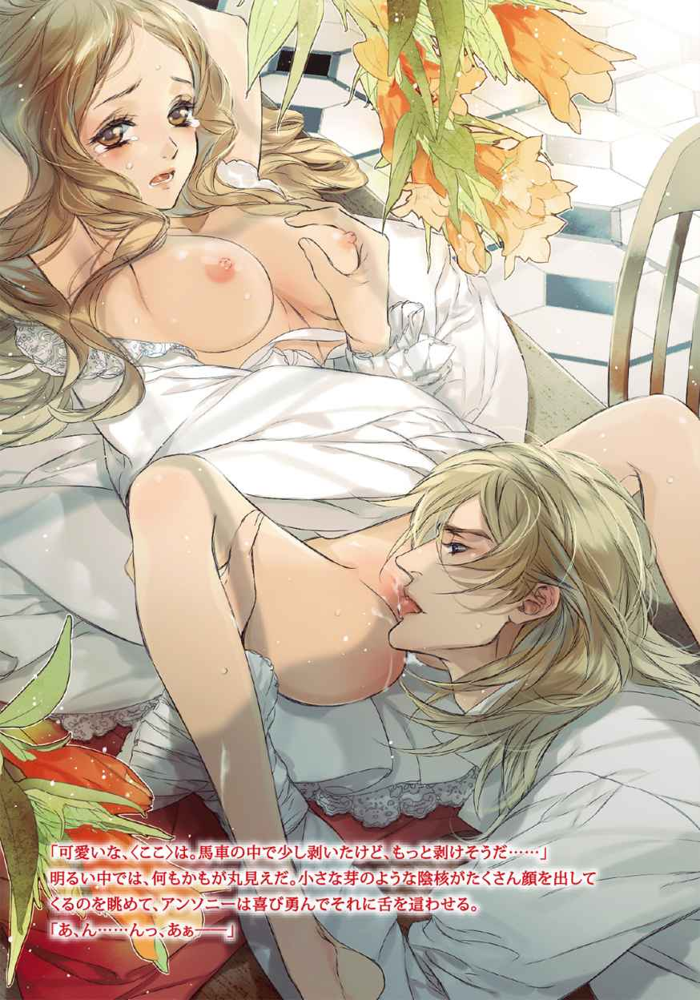
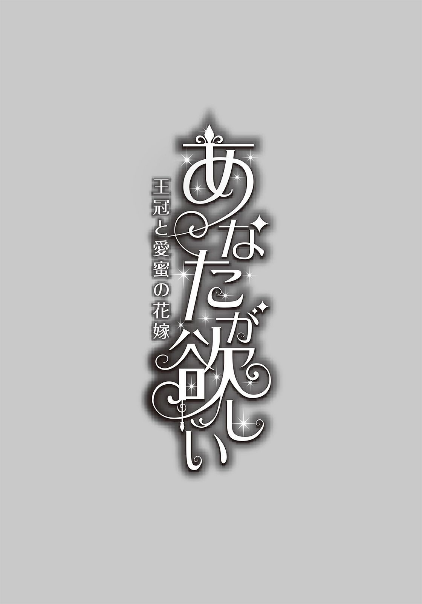
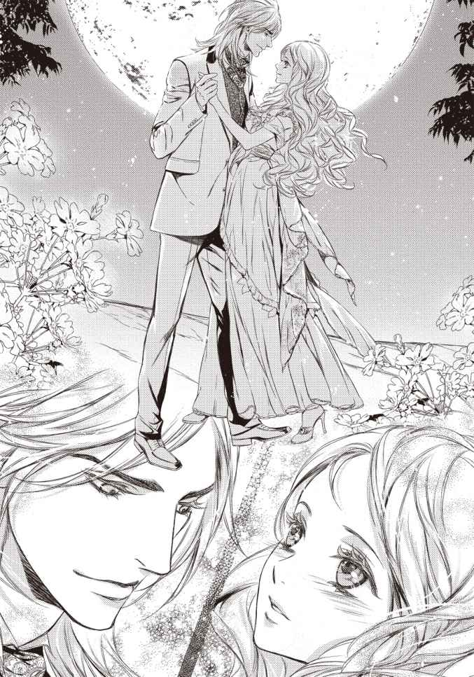
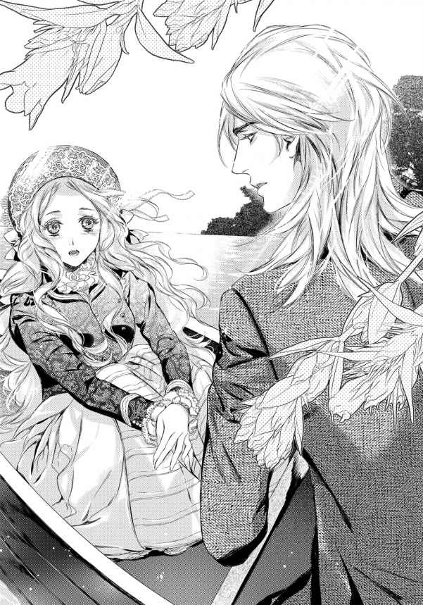
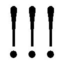
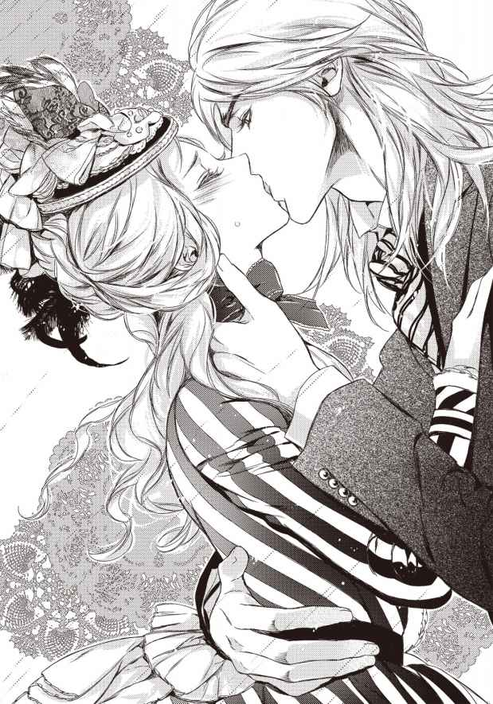
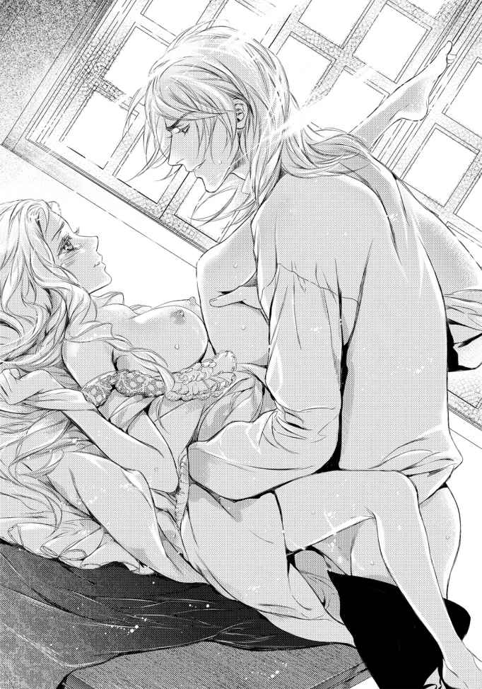
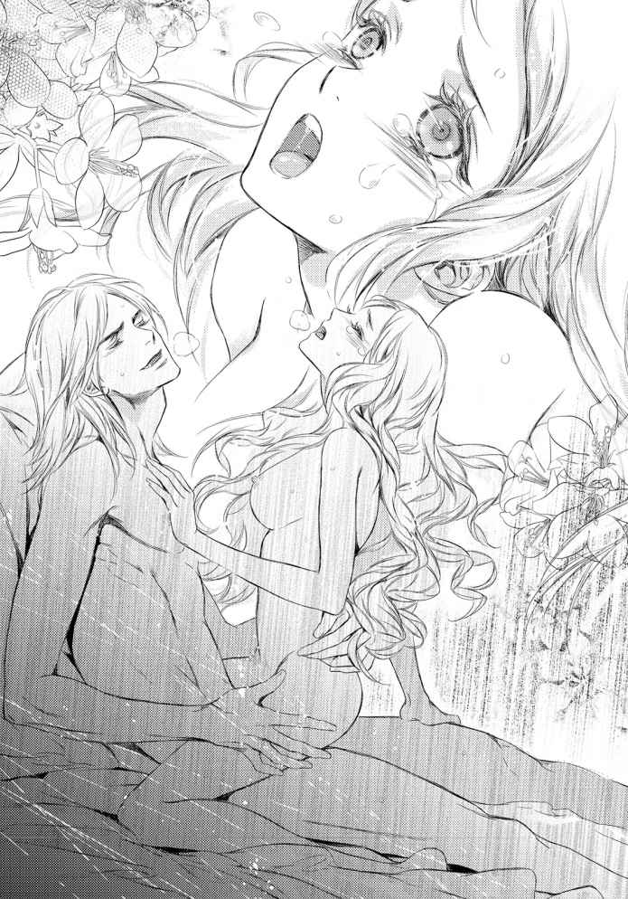
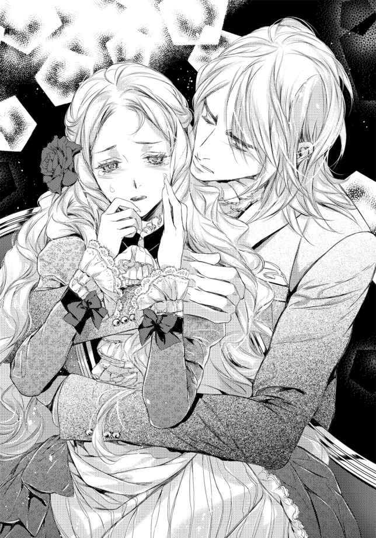
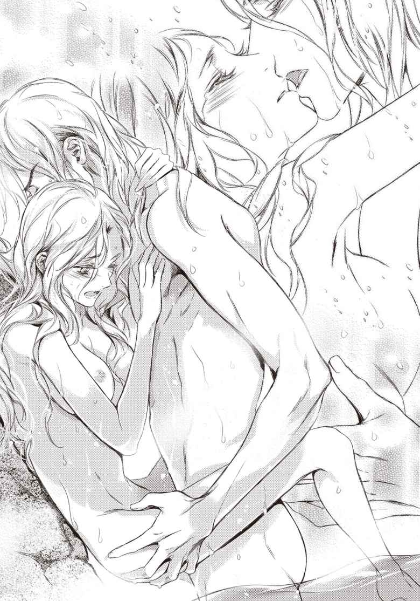

| あなたが欲しい 王冠と愛蜜の花嫁 (ガブリエラ文庫) | |
| 白石まと | |
| (2014) | |

ガブリエラ文庫
あなたが欲しい 王冠と愛蜜の花嫁
白石まと
この作品はフィクションです。
実在の人物・団体・事件などに一切関係ありません。
イラスト／Ｃｉｅｌ

prologue
乱れて絡まった長い栗 色 の髪を手で押さえながら、フェリシアは周囲を見回した。
家の中でダンスの練習をしているものの、くるりと回ればテーブルに、難しいステップに気を取られると壁にぶつかる状態では、上達どころか母親の教えを思い出すのさえままならない。大きな音を立てると、隣の部屋で眠っている弟が起きてしまう。
（ここでは無理ね......）
今は亡き両親と暮らした家は愛 おしい場所ではあるが、小ぶりであるのも確かで、こういうことをするには不向きだ。比較的広いダイニングでも難しい。
ふいっと顔を向けて窓の外を見る。夜間であるのを如実に示す暗がりになっていたが、丸く大きな月が煌 々 と大地を照らしているので闇夜とは言えない。
（窓辺にランプを置いておけば、外でもいいんじゃないかしら）
フローレンス王国の片田舎、ブリューニュ地方の同名の町にある彼女の家は、広い農園の真ん中に位置している。ご近所と言える舘 は農園の向こうにあるから、夜中に家の前庭で踊っていても誰も気が付かないだろう。季節は夏を過ぎているが、まだ寒くはない。
人がいないなら夜着姿でも大丈夫だと思えた。レースで覆われた胸部と幅広の肩 紐 、胸の下からギャザーを寄せて足首まである裾には、フリルが段になっていてレースと小さなリボンで細かく飾られている。白く光沢がある布地は深いドレープを描き、可愛らしさを感じさせると同時に、ナイトドレスと呼べる豪華さがあった。
これは母親が若い頃着ていたと言って、フェリシアの誕生日にプレゼントしてくれたものだ。どうしてこれだけが生活にそぐわない贅 沢 な品なのか不思議に思ってそのとき聞いたが、両親は何も言わずに微 笑 みを交わすだけだった。
ドレスに見立ててダンスの練習をするにはぴったりだったので、大切に仕舞ってあったものを今夜は引っ張り出して着ている。
ランプを窓辺に置いて、音を立てないよう細心の注意を払いながら玄関扉から外へ出たフェリシアは、素早く周りを見る。予想通り誰もいない。
（......これなら、大丈夫よね？）
尋ねる相手はいないから、自己確認だ。
家のすぐ北側には、住居よりも大きなサイロが三つあるが、中身は入っていない。遠くまで広がっている農園もかつての盛況が噓 のように荒れ始めている。父親が亡くなり、管理者が不在となったからだ。
十六歳の彼女より五歳年下の弟コリンを出産して以来病気がちだった母親は、半年前に亡くなった。妻のためにがむしゃらに働いて広い農園を手に入れた父親は、ついに準男爵にまで至ったが、先日、母の後を追うようにしてこの世を去った。まだ十代の少女であるフェリシアに農夫たちを牛耳る力はなく、農園は放置されてこのありさまだ。
家を建て直す計画もあった。執事などを雇い入れ、男爵としての体裁を順に整えてゆく予定だった父親は、成し遂げられずに逝くことになって、さぞかし口惜しかっただろう。何より、残される子供たちのことが気掛かりだったに違いない。
葬儀を終え、この農園は売るしかないと考えていた矢先にやって来たのが、クレイトン伯爵家の依頼を受けた若い弁護士だ。
『お母様はクレイトン伯爵家の一人娘でいらっしゃいました。お二人の祖父になられるクレイトン伯爵様が、こちらへ来るようにとおっしゃっています』
こちらというのは、王都ベルにあるクレイトン伯爵家の屋敷だという。父親ばかりか母親の葬儀にも顔を見せなかった祖父母は、一体どういう人たちだろうか。不安も不審も大きい。
しかし、考えて分かるものではなく、他の選択肢もなかった。子供では、土地の売買もままならなかったからだ。
手続きのために何度もやって来た弁護士は、コリンがいないときを見計らってフェリシアに耳打ちした。
『弟君コリン様はクレイトン家の長男として跡継ぎになって頂き、フェリシア様は伯爵夫妻の娘として伯爵家に入って頂きます。ですが、フェリシア様はコリン様のおまけに過ぎません。伯爵家に決して迷惑を掛けないことをお約束して頂かない限り、お迎えすることはできないと、そのようにお伝えするよう言われておりますが、どうなさいますか』
きれいごとやごまかしを言わず、たった十六歳の娘にも現状をあるがままはっきり口にした弁護士は、確かに有能で敏腕だと思う。
顔が蒼ざめたのが自分でも分かった。必要とされない自分という現実と向き合ったフェリシアは、弟を一人で行かせるのも迷うところがあり、決意をもって頷 いたのだった。
母親は、田舎にそぐわないような華 奢 でたおやかな婦人だった。伯爵家の一人娘だったというのは初めて知ったが、改めて考えればなるほどと頷ける。フェリシアに礼儀作法やダンスなどを教えてくれたのも母親だ。町の婦人たちの教育とは一線を画していたように思う。毎日を幸せそうに過ごしていた母は、フェリシアやコリンが、いつか祖父母と顔を合わせると考えていたのかもしれない。
母親は月が似合う人だった。顔立ちや雰囲気は母親に似ているフェリシアだが、母の髪は栗色ではなくコリンと同じ黄金色だ。
（お母さま......、おじい様やおばあ様に逢 うの。どんな方たちかしら......）
人に言わせると〈ちょっぴり膨らんだ魅惑的な唇〉を、わずかにきゅっと尖 らせてから、月明かりとダイニングの窓から漏れるわずかな光の中で、フェリシアは一人で踊った。
母親が教えてくれたダンスのステップを記憶の底から引き上げながら、細い身を軽々と運んで舞うように踊る。
伯爵家の娘として恥ずかしくないようにと考えた。せめて、すでに教えられたことくらいは間違いなくできるようにしたい。おまけなのだから──というよりも、両親のことを悪く言われないためだ。それに、弟がせめて彼女と同じ年齢になるまでは傍についていてやりたいので、追い出されるわけにはいかないのだった。
架空の相手だから腕を宙に浮かせながらくるりくるりと回る。空気相手では感覚が摑 み難 く、なんとなく踏み込みが甘い気がするのに、どの辺りまで足を出せばいいのか分からない。
（もっと難しいステップもあったんだけど......、......こんな感じだった？）
ぽんっと土を蹴って、ワルツより激しい動きでターンを繰り返す。動くのは嫌いではなかった。正確なステップではないと分かっているが、動き始めれば踊るのが楽しくて速い動きでくるくると回る。
巻き毛に近いウエーブを持つ髪が大きく靡 いて、体の周囲で弧を描き、わずかな光を受けて金色に近いような反射をしているのを目で捉えると、なんだか笑ってしまう。風を切るのもいい。先行きの不安を押しのけて、フェリシアは笑いながら踊った。
裾には大量の布があって脚にまとわりつくが、上等な絹はしゅるりと肌を撫 でながら後ろへ流れてゆく。母親の形見となってしまった白いナイトドレスのフレア部分を、左手で摘まんで翻してみれば、まるで片翼が開いたようになった。
この際だからと、うんと高く足を上げる。布を摘まんでいるのは左手なので右手を大きく振ってもう一方の翼のように動かす。そしてくるりと回りながら高くジャンプ──。
──だれかいる？
視界の端を掠 めた影に驚く。フェリシアは着地した勢いのまま、たたた......と数歩ばかり土を踏んだところで止まり、素早く振り返った。
「誰っ！」
さほど離れていないところに立つ一人の紳士を見つけて驚愕する。
このような夜中に人の家の敷地内に入っているのだから、紳士とは言えないかもしれない。けれど、暗い中でも、トップハットにステッキ、それにフロックコートというきちんとした身なりをしているのが分かれば、盗賊や不 逞 の輩 とは違うと思われた。
（......外見だけで判断してはいけないわよね。でも......）
彼のすぐ後方には、侍従かあるいはフットマンらしき従僕がいて、さらに向こうの方に箱型の馬車も見えていた。貴族なのだろうか。
（とんでもないところを見られたわ──）
眠る前だからドロワーズは履いていない。それなのに、紳士は、ばばっと脚を上げた先に立っていた。暗い上に、布がまとわりついていたから見えていないと思うが、我ながら信じられない状況だ。
さほど起伏の無い丘状になった向こうには路 が通っている。近いとは言えなくとも、夜中に走る馬車の音なら聞こえていたはずだというのに、踊ることに夢中になっていてまったく気が付かなかった。
フェリシアは頰 をかぁっと染めて、家の中に駆け込もうと身を翻す。が、男性のよく通る声がそれを止めた。
「待ってください！ 強盗などとは違います！ このような時間ですが、道が分からなくて！ お聞きできたらと思いまして敷地内へ入りました。どうぞお許しください」
「道？ 分からないのですか？」
「はい。ステファン卿 の屋敷がこのあたりだと聞いて参りました。急用があって」
この時間では、答えてくれる人はもう見つけられないだろう。走りかけていたフェリシアは動きを止めて彼の方へ顔を向け、細い腕を上げると、東へ向かう方を指さして言った。
「あちらです。......えぇっと......この先の、三区画目にある屋敷がそうです。距離としては、馬の並足で走って十分くらいでしょうか」
彼女の指した方向を眺めてから、男性はふぅと息を吐くと帽子を取り、笑顔を浮かべて軽く頭を下げた。優雅な仕草に目を見張ってしまう。帽子の下の髪は、夜目でも分かるほどの煌 びやかな金髪だ。しかも、このあたりでは見たこともないような端麗な顔だった。
フェリシアはぽかんと口を開け、それに思い当たると慌てて両手で口元を隠す。
その男性は静かな笑みを浮かべて彼女をじっと見つめると言った。
「助かりました。──どうすればいいのか途方に暮れていたのです。......でも、おかげで素晴らしい舞が見られました。お名前を聞かせていただけますでしょうか、お嬢さん。僕は」
「いえ。お名前をお聞きするつもりはありません。わたしの名前もお聞きにならないでください。ではこれで失礼いたします」
大急ぎで答えた。貴族、それもかなり高い身分の人ではないだろうか。
クレイトン伯爵家に入ることはすでに決定している。養子の手続きは終わっているから、父親の名前は消え、弁護士の手で農園も小さな家も売りに出される予定だ。彼女や弟が、ここで両親と暮らしていたことを示すものはなにもなくなる。
今となっては、フェリシアにとって宝物になっている父の名を、行きずりの人に言うのは避けたかった。だからといって、ここでクレイトン家の名を出すのも憚 られる。問題を起こさないという条件は、絶対に守らなくてはいけない。
貴族相手ならと、彼女は母親に教えてもらった通りスカート部分を両側で小さく摘まんで、深く腰を屈 めた。宮廷儀礼の貴婦人のお辞儀だ。
丸い月の下で彼女の華奢な肢体が流れるような柔軟さを描いて動き、豊かな髪が頰を掠めて肩先を滑る。上体を起こして男性へと向けた大きな瞳は、髪よりも黄金に近い金茶色をしている。月の下では煌めく金に近い、謎の色合いだ。
彼はフェリシアの一連の仕草を目で追いながら、もう一度口を開いた。
「内緒でダンスの練習をしていたのですか？ よろしければ、少しの時間ですが、お礼代わりにお相手をしましょうか」
親には内緒と思われたようだ。彼女のすぐ後ろには家があり、この時間に外で練習をしているならそういうふうに見えるかもしれない。初めて出逢った人に、親はいない家だと告げる必要はなかった。礼儀正しく言ってもらったので、彼女もきちんと答える。
「でも、このような格好ですから失礼いたします」
「僕がそうしたいのです。月の精霊のような方、ぜひお相手を」
すっと胸のあたりへ手を上げ、その男性は深く腰を折った。フェリシアは目を見張る。貴族はもっと尊大で居丈高な態度を取るのが普通だと思っていた。
ぼぅっと見ている内に、彼は後ろの従僕に帽子とステッキを預け、彼女の目の前に来た。控えめに出された右手の上に思わず自分の手を載せてしまったのは、きっと月の魔法のせいだ。

そうしてフェリシアは、初めて父親以外の男性とワルツを踊った。その男性は、見た目以上に背が高く、細いようでも彼女より二回りくらい大きい。まっすぐ立つ力も強くて、ダンスがとても上 手 いと感じる。フェリシアを軽々とリードして、彼女が疑問に思っていたことを動きで教えてくれる。金の髪と深い深い蒼色の瞳をした男性は、父親よりもずいぶん若い。
難しいステップになると、彼は言葉でも説明しながら実地で誘導した。
「細くて軽いな、君は。年齢は？ それくらいならいいだろう？」
「内緒」
夢中で踊っているので、足運びなどに気を取られてまともに答えられなかった。
「月の精霊は口が堅い」
「え？」
ぱっと顔を上げれば、緩やかになった動きの中で、彼女の顔に彼の顔が近づいていた。どんどん間近に迫るのは、魅惑的な笑みを浮かべた唇だ。
どきんっと大きく鳴った鼓動とともに、フェリシアは相手を突き飛ばして後ろも見ずに駆けた。彼女の腰を抱いたようになっていた男の腕は、強い抵抗もなく離れ、フェリシアが家の中に駆け込むのを止めることもない。
家へ入ってから、玄関扉を少しだけ開けてそぅっと覗 くと、それを待っていたかのように緩く腰を屈める男性の姿があった。彼女があとから伺い見るのを見透かされていたのだ。
彼は踵 を返して立ち去ってゆく。端麗な顔と共に忘れられない後ろ姿が、目の奥に焼き付けられるようにして記憶に刻まれる。
（お名前を聞けばよかった...）
二度と逢うことは無いだろうが──と彼女は考えるが、その予想は外れる。
魔法使いが舞い降りたようなその夜、フェリシア・クレイトンはアンソニー・ド・バルフォアに初めて出逢った。十六歳のときだ。
あとから思えば、ずいぶん不用心なことだった。ただ、その出来事があったから、フェリシアは、王都へ行くのを恐れる気持ちを少しばかりでも抑えられた。もしかしたら謎の男性にまた出逢えるかもしれないという浮き立つ気持ちを味わいながら、二日後には弟と共に生まれ育ったブリューニュを出て、王都ベルにあるクレイトン伯爵家へ向かう。
きつい祖母と鷹 揚 な祖父と初めて顔を合わせ、白いドレス姿で社交界にデビューしたフェリシアが、国王主催の舞踏会でアンソニーと再会するのはこの夜から半年後になる。
『捜したよ。月の精霊さん。──ようやく見つけた』
そう言って彼女をダンスに誘い、舞踏会で踊ってくれたアンソニーは、その三か月後になる夏の盛りに結婚を申し込んできた。
フェリシアは頷き、二人は婚約した。
第一章 離れてもいいですか
象牙の獅 子 頭 像 がヘッドに鎮座するステッキを侍従に手渡された途端、部屋の扉がノックされた。フロックコート姿で今にも出掛けんばかりだったアンソニー・ド・バルフォア──バルフォア侯爵家の嫡男、二十五歳──は形のいい眉を顰 めて振り返る。
（このタイミング。嫌な感じだ）
生まれたときから耳にしている聞き慣れた執事の声が、廊下から扉越しに掛けられた。
「アンソニー様。旦那様がお呼びです。奥のサロンまでおいで下さい」
奥のサロンとは、二階の奥にある特別な応接室を指す。バルフォア侯爵家では、客人には幾部屋もある一階サロンの一室が使用されるが、家族内問題などが話し合われる場合は、二階の特室でするという暗黙の了解があった。
父親ヘンリー・ド・バルフォア侯爵の個人部屋が一階にあるのを思えば、息子相手にわざわざ階段を上ってくるほどには難しい話をするつもりなのだ。
睨 むように扉を見たアンソニーだが、ヘンリーが執事に確かめれば彼がまだ屋敷から出ていないのは分かるから、呼び出しを無視して出掛けてしまうのはさすがにまずいと考える。
彼の父親は、頑丈そうな体格に見合う精神と頭をしていて、息子をねじ伏せる権力までも有していた。負けるつもりはなくても、真正面からぶつかれば双方共に傷を負うので──肉体的にも財力的にもだ──避けたい。が、フェリシアのことだけは譲る気はない。
二つばかり年下になる侍従ヒューが困った顔をしてこちらを見ているのに目を留 めたアンソニーは、口元に野性味を漂わせた彼独特の麗しい笑みを浮かべて言う。
「父上がお呼びなら仕方がない。話が終わったらすぐに出るから玄関ホールで待っていろ」
「分かりました」
受け取ったばかりのステッキと、すでにかぶっていた普段着用のボウラーハットをヒューに渡す。恭しくそれを受け取ったヒューは、憂いを含んだ顔つきで何か言いたそうにアンソニーを見上げている。
「なんだ。不安そうだぞ」
「あの。侯爵様のお話というのは、どのような内容かと思いまして」
「決まっている。フェリシアとの結婚の件だ。......いや、ハンフリー公爵家との縁談の件と言った方が正しいか。根本原因は、臨時評議会にあるんだがな」
シーズンも終了間近というこの時期に貴族院の評議会が臨時で開かれるのは、父親ヘンリーの要請によるものだ。ここでの話し合いによって、彼の出生の秘密という問題が却下されれば、公爵家の姫君との縁談も自然消滅するはずだが、ヘンリーは勝ち目のない戦いはしない。
くっと唇を引き結び、宙を睨 み据 えたアンソニーの蒼い瞳が、底冷えのするような冷徹さを増して冴 えわたる。
何を見聞きしてもひとまず口を噤 むヒューの賢さを気に入っているアンソニーは、再び笑顔を作って見せてから早い歩調で扉へと動き出した。廊下へ出れば、くきっと頭を下げる父親付きの執事がいる。アンソニーは彼をちらりと見やってから、二階の特室サロンへ向かった。執事が付いてくるその後ろでは、ヒューが廊下へ出て彼を見送っている。
──さて。どうするかな。
サロンの扉を執事がノックするのを見ながら思案するが、長い間準備をしてきて、評議会のメンバーを一人一人手なずけ、いまここでキングを取りに行こうとしているヘンリーに対抗する術などすぐには見当たらない。
誰 何 のために内側から放たれる野太い声は父親のものだ。慇 懃 に返した執事の手で彫の入った重厚な扉は音もなく開かれ、アンソニーは室内に足を踏み入れた。
二階のサロンは、いざというときには貴賓室に早変わりする特別仕様だ。調度品は最高級、絵画に彫像など値の張るものが飾られている。隣室には寝室が用意され、更にその向こうに洗面と浴室が設置されていた。
部屋の真ん中にはソファーなどがあり、窓際近くには、猫脚を持つ優雅な丸い小テーブルと二脚の椅子が置いてある。椅子には座らずテーブルの横に立って窓の外を見ていた父親ヘンリーは、アンソニーが部屋へ入ると、ゆるりと振り返った。
黒色で硬い髪と、黒に近いブラウンの瞳、がっしりとした体つきで標準背丈のヘンリーは、常にむっと口を曲げた強 面 の侯爵で知られている。
サラサラの黄金の髪と、天才が手掛けた彫像かと見 紛 うばかりの端麗な顔つき、蒼 い瞳、さらには均整のとれた細身で長身のアンソニーは、外見的にヘンリーとはまったく似たところがない。だからこそ、余計に昨今の問題が真 実 味 を帯びる。
「近くへ来なさい」
「はぁ。では」
軽いフットワークでヘンリーに近づく。
アンソニーの母親──絶世の美女と謳 われるイザベル・ド・バルフォアは、ヘンリーの妻となる前は国王の恋人だった。バルフォア侯爵家のヘンリーに嫁いでから七か月でアンソニーを出産したことからその問題は生まれた。
はっきり口に出すのを憚られていただけで、七か月出産という情報だけでも権力志向の貴族なら考えるだろう。アンソニー・ド・バルフォアは現国王の落とし種 ではないかと。つまりは、東の方にある他国の言葉を借りるなら〈ご落 胤 〉だ。
老齢に差し掛かろうとする現王ウィリアム陛下には子がなかった。だからこそ、評議会の決定が重要になってくる。
夏なので暖炉に火は入っていない。それを横に見てヘンリーの前まで行ったアンソニーは、真正面から父親を睨むようにして口を開いた。
「お呼びだそうですが、僕は出かけるところでした。難しい話でしたら、明日の夜にでもまた時間を取っていただけませんか、父上」
「クレイトン伯爵家へ行くつもりだろう？」
「そうです。来春にはフェリシアと結婚式を挙げるつもりですから、そろそろ準備に本腰を入れねばなりません。クレイトン伯爵といろいろ相談しようと思います」
「婚約は解消だ。おまえの結婚相手は、ハンフリー公爵家のエイプリル嬢だからな」
多少なりとも平和的だったアンソニーの表情が、ぐぐっと険しくなる。
「その話はお断りしたはずです」
「フェリシアとの結婚はお前だけで決めたものだろうが。私は了承していないぞ。貴族の婚姻は家同士の問題だと何度言ったら分かる。いいか。エイプリル嬢と結婚するのを前提に、臨時評議会でハンフリー公爵が後押しをしてくれる予定だ。迷う余地など、どこにも無い！」
すぐ横の小テーブルにダンッと手を突いたヘンリーは、身を乗り出すようにしてアンソニーに上体を近づけると、強い口調で言い放った。
「評議会で、庶子の件は国王陛下に一任するとの決定さえ出れば、あとは陛下との対面でイザベルが証言するだけでことは成る！ お前は国王陛下の子として認められ、王太子だ！ 王になれ、アンソニー。私は育ての親として宰相になる！」
上昇志向が強い父親だと分かっていたが、ここまでとは想像以上だった。
アンソニーは舞踏会や夜会その他で顔を合わせることもある国王を思い浮かべる。
若いころは血気盛んで、王宮内の腐敗を正したり、財政の引き締めをしたり、商業の振興のために関税を下げたりとさまざまな改革を手掛けてきたやり手の王だ。尊敬もしていれば、臣下として支えていきたい気持ちも多大にある。けれどそれは子供としてではない。王子になる気は毛頭なかった。
ただ、確かに彼は、玲 瓏 なる現王ウィリアムによく似ている。煌めくブロンドも同じで、柔らかな髪質もそうなら、顔立ちなども同質の面影がある。体つきまで若かりし日の国王にそっくりだと言われ、アンソニーは自分でも鏡を見ながらそう思う。
王は彼と話すのを好み、傍へ呼ばれてさまざまなこと──特にアンソニーの外遊先でのことや手掛けている事業のことをたくさん話した。
アンソニーを見る王の眼差しには包むような優しさが溢れ、もしかしたら自分の息子かもしれないと、王自身が思っているということをアンソニー本人にも悟らせる。それに引きずられて、彼自身も思わず錯覚しそうなほどだ。
母親イザベルは、国王の元愛人と言われるのが嫌で社交界からは遠ざかっている。最近では、ヘンリーと大 喧 嘩 をしたらしく、領地へ引き籠ったので別居状態だ。イザベルは、どんな噂 が流れようと、その点についてアンソニーに話したことはなかった。アンソニーの件が議題に上がった評議会が開かれている現在でも、母親との間では話題にさえ上らない。
アンソニーはふぅとため息を吐くと、檄 を飛ばしたあと自分の言葉に酔ったようにじーんとして天井を見上げているヘンリーに向かって、呆 れた様子で言った。
「父上は、僕が父上の息子でなくてもいいのですか」
痛いところを突かれたようで、ヘンリーは苦虫を嚙 み潰 した顔で視線を彷徨 わせた。
憎めないこの父親を、アンソニーは大切に思っている。領地の屋敷へ行ってしまった母イザベルも、自分を産んだ親だと思えば大事だ。国王が親なら、親が三人になるだけだった。
寂しく思う気持ちはともあれ、親が何人になろうと、すべてひっくるめて面倒を見るくらいの気概はあるつもりだ。その中には、フェリシアの祖父母も弟も入っている。
海外を飛び歩きながら事業の拡大を目指すのが面白くてたまらないアンソニーは、二十五歳になっていて、すっかり独り立ちしている。彼は根っからの起業人なのだ。
アンソニーが今もっとも考えたいのは、満月の下で出逢い、ようやく捜しだして王都で再会したフェリシアのことだ。早く結婚して、自分のものにしたい。あの細い身を暴いて、自分の楔 を穿 たないと誰かに取られそうで心配で仕方がなかった。彼はフェリシアのことで頭がいっぱいで、他のことなど今のところどうでもよかったのである。
ヘンリーは、気の迷いを振り切るように再びアンソニーへ顔を向けると、大きく息を吸い勢いをつけて言い募る。
「父親としての私の気持ちはこの際、横に置いておく。この国の王権が、どれほど強力になっているかお前も知っているだろう。だが、どれほど強い権力を有していても、子がないという現実はどうしようもない。国王陛下は跡継ぎを欲しておられるのだ。その望みに適 うのだから、この国の貴族として真実を明らかにするのは当然だろうが！」
国王は子供が欲しいばかりに、王妃を迎えてから数年で愛人を幾人も作った。それでも誰一人として、王の子を産むことはできなかった。ただ一人、最も愛された寵 姫 イザベルの他は。
生まれたときから陰で囁 かれていたものが、長じるに従ってそっくりになってくればもう、人の口に蓋をするのは難しい。
それを見越して、着々と準備をしてきたヘンリーは、いまこそベールを脱ぐときとばかりに評議会に問題提議をした。長年を掛けて、バルフォア侯爵家の財産を殖やすと同時に、後ろ手でたっぷり下ごしらえをしてきたヘンリーはかなりのやり手だ。
しかし、貴族界には同じようなタイプがごまんといるし、王宮では権謀術数に長 けた人間たちが蠢 いている。だからアンソニーは忠告する。
「父上。そう簡単にはいきませんよ。現在の第一位継承権を持つ国王陛下の弟君が、絶対に潰しに掛かってこられるでしょうし」
「だからこそだ！ だからこそ、エイプリル嬢との結婚なのだ！ 王妃を輩出してきたハンフリー公爵家なら、後ろ盾として申し分ない。国王一任！ この決定さえあれば！ 誰にも文句を言わさずお前が王太子、つまりは次期国王になる」
「エイプリル嬢はまだ八歳くらいだったはずですよ。社交界デビューも前で、噂通りならものすごくわがままな娘という......お断りです。僕はフェリシアがいい。彼女を愛しているんです！ フェリシア以外を妻とするなんて、考えてみたこともありません！」
「フェリシアはとてもいい娘だ。それは認めよう。優しく明るく美しくさえある。だが！ クレイトン伯爵家に評議会を動かす力はない！ メンバーでさえないのだからな！」
小テーブルをバンバン叩 きながら、ヘンリーは激 昂 した。
「愛など、結婚してからいくらでも沸いてくる！ 少しその出来のいい頭で考えてみろ。どれほどのチャンスが回ってきているか分かるだろう。お前は、社交界では〈氷の大天使〉と呼ばれるほど、冷静沈着に物事を動かしてゆく男ではないか。同じようにすればいい！」
「彼女のことを、事業や社交界の戯 言 などと同じに考えてもらっては困ります。僕が生きてゆくのに王冠は必要ありませんが、フェリシアは絶対に傍にいてほしいのです。死ぬまで！ いえ、次の世までも！」
「方法を考えればいい。後々に、愛人にするという手もある。国王陛下を見習え。伯爵家の内情は火の車だからな。手助けと引き換えに......」
どごんっとテーブルを叩いたのは、今度はアンソニーだ。込み上げる感情のまま、彼は掌 を広げてばんっと小テーブルへ突いた。
「愛人！ フェリシアをそんな境遇にせよと言われるか！ できるわけがない！ 彼女は僕にとって、月の精霊であり、女神なんだ！ 一目見たときから欲しいのは彼女だけ、彼女だけなんです！ 運命なんだ。愛していると何度言ったら分かるんですっ!! 」
ガチャン！
──がちゃん？
手首に冷たい感触を覚えて、アンソニーが自分の右手を挙げて見れば、そこには三センチほどの幅をした鉄のベルトが輪になって嵌 っていた。鉄ベルトには突起があり、そこに錠前がある。さらにその先に鎖がついていた。
──自動施錠なのか!?
右手の手首から垂れ下がった鎖を左手で持って少しばかり手繰り寄せてみれば、カシャンカシャンと擦れる音をさせながら持ち上げられた鎖は小テーブルの向こうへ落ちている。その先を視線で辿 っていったアンソニーは、鎖が絨毯で隠されながら、隣の部屋まで伸びているのを確認した。隣の部屋は天蓋付きの豪 奢 なベッドが鎮座する寝室になっている。
「父上、これは一体──」
アンソニーが鎖を目で追ったのは、ほんの一呼吸というわずかな時間だった。ところが、顔を上げてみれば目の前から父親の姿が消えている。
ばっと体の向きを変えて振り返ると、ヘンリーはこの部屋の扉近くに移動していた。音もなく気配も消して動くという芸当はアンソニーもできるが、そもそもがヘンリーの教えによる。教師が難なくこなすのは当然だろう。
「父上っ！」
「臨時評議会の決定は二週間後だ。《この件は、ご自分の子供のことであり他者では決められないので陛下にご一任致します》という決定が出るのはすでに既定路線だ。決まったも同然。あとは、その三日後になる陛下への謁見だが、それもイザベルの言葉一つで決まるだろう。国王陛下は自分の血を引く子を渇望されているからな」
「僕は、今のままで十分です！」
長蛇の鎖は人差し指ほどの太さの鉄が小さな楕 円 の輪を作って繫 がっているので案外重く、それを引っ張りながら近寄ってゆくアンソニーの動きでは、扉の取っ手を摑んだヘンリーに追いつけない。
ヘンリーは部屋を出る最後に振り返ってアンソニーを眺めると言った。
「次期国王となる継承権第一位が、王弟から庶子へ移るかどうかの瀬戸際に、個人の希望など入る余地があるか。その鎖は切れんぞ。なに、食事は運んでやるから、ベッドもあれば風呂もあるここで、すべてが決定するまでの二週間余りを、のんびりするといい」
「服が脱げませんよっ」
手首に鉄バンドでその先に鎖だ。
「鋏 で切ってしまえ！ ズボンが穿 ければそれでいい。クレイトン家には私が自ら出向いて、婚約の解消を伝えよう」
アンソニーがようやくヘンリーの近くまで来て腕を伸ばしたのをするりと交わすと、父親は見た目以上の素早さで廊下へ出た。
扉は閉まり、ガチャリと大きな音をたてて鍵がかけられる。鼻先で扉を閉められたアンソニーは、怒りを込めて、頑丈な木の扉を靴底でガンガン叩いた。
「たぬき親 父 っ!! くっそう、開けろっ！」
初めから息子をこの部屋に閉じ込めるつもりで、鎖の付いた鉄ベルトを用意していたのだ。
話し合う素振りを見せながら次第に激昂していったのも芝居だった可能性が高い。小テーブルの上を手でばんばん叩いて、同じようにするよう誘導し、服の陰に隠しておいた鉄手錠を素早く──つまりはしてやられたということだ。年季の入ったタヌキだけのことはある。
若いアンソニーがどれほどできる男でも、人の暗部まで見据えた父親に一本取られた感はぬぐえない。彼は、今度は両手で扉を叩き、次には靴のつま先でがつがつと蹴る。
（いくらあなたでも母上の動向まで測れないでしょうが......っ！）
父親がタヌキなら母親はキツネだ。いざ国王の前に立ったとき、ヘンリーの望むような言葉を口にするかどうかはかなり未知数だと思われる。
ちなみに、息子のアンソニーは獅 子 だと言われることもある。ウィリアム陛下が父親だった場合、若いころには師子王と謳われていたから、さもありなんというところか。
どちらにしても、一癖も二癖もある大人たちに囲まれているアンソニーだ。鍛えられて当然だろう。
「王位継承権第一位の王弟殿下は、国王になる器が十分ある。いまさら僕が出ていっても、王宮内部が乱れるだけではありませんか。それに僕は、王宮に閉じ込められるのはごめんだ。世界を渡り歩きたいんだっ！ フェリシアと共に！」
ヘンリーは婚約解消を告げにクレイトン家へ行くと言う。
何らかの出来事で状況が変わるようなことがあってはいけないと、ただちに動くはずだ。アンソニーも同じだから分かる。
「出せ──っ！ フェリシアを傷つけたらあなたでも許しませんよっ！ 父上っ!! 」
アンソニーは、バルフォア侯爵家の王都屋敷に響き渡るような大音響で叫んだ。
廊下へ出たヘンリーは、待っていた執事から帽子とステッキを受け取る。アンソニーが予想した通り、彼はすでに用意させている馬車で今からクレイトン家に行く予定だ。
「まったく。あいつは〈氷の大天使〉などと謳われる外見をして、それこそ氷のように物事を動かすくせに、フェリシアのことになるとどうしてあれほど熱くなるんだ！」
ガンガンと叩かれる扉を見詰めて大きく肩を落としたヘンリーは、廊下を歩きながら、後ろを付いてくる執事に零 した。この執事は、彼が少年のころからいた者なので、どこか気安く話す癖がついている。執事はのんびり答えた。
「はぁ、まぁ、それだけフェリシア様のことを愛していらっしゃるのでしょう」
ぐわっと振り返ったヘンリーは、歯 に衣 着 せぬ言い方をする執事に言う。
「今からクレイトン伯爵家に婚約解消の話をしに行くのだぞ。それでは、私が恋人同士を引き裂く悪人のようではないか」
「......その通りかと思いますが」
「私はあれのためを思ってだな......」
響き渡ったアンソニーの雄たけびを耳にして、ヘンリーは言葉を切ると天井を仰いだ。それから止めてしまった歩みを再開して、目の前にきた階段を下りてゆく。下りきったところにホールがあり、その続きが玄関ホールだ。
「あれほどの容姿をしているというのに、中身はとんだ暴れ馬だ。フェリシアは知っているのか？ 誰も奴 のあんな姿は知らんぞ、きっと」
首をふりふり言えば、すかさず執事が応えた。
「中身はそっくりでございますな」
「──国王陛下に、だな」
玄関扉をフットマンが開けば、外はたたきになっていて、幅広の外階段を三段ほど降りたところで馬車が待っている。馬車の小さな扉には、バルフォア侯爵家の旗を模した象牙の紋章飾りが付けられ、ヘンリーが近づけばフットマンがさっとそれを開ける。
ちらりと後ろを振り返って言ったヘンリーの念押しに、執事はゆっくり頭を下げた。
「私には分かりかねます」
ヘンリーはそこでほんのわずかではあるが、尊大そうな顔に寂しさを過らせた。執事はその主 の表情を見ないために頭を下げたのかもしれない。
バルフォア家の当主はぐっと顔つきを険しくすると、馬車に乗り込む前にもう一度指示を出す。
「ふん。ま、いい。イザベルに連絡を取れ。評議会での決定が出たあとは陛下と接見だからな。二週間と三日後だ。その前には戻るようにと」
「もっと早くに戻っていただけばいいのではありませんか？ 旦那様が、逢いたいと一言、言われれば奥様もすぐお戻りに......」
「だ、黙れっ。まるで私がイザベルにぞっこんのようなことを口にするな。いいか、ぎりぎりでいいからと、伝えておけ」
「......はい。いってらっしゃいませ」
「うむ。行ってくる」
尊大さを振り巻くのも貴族の役目とばかりに、胸を張り鷹 揚 な足取りでヘンリーは馬車に乗り込んだ。夏の午後の陽気は楽しげでさえあるというのに、彼の顔はいかにもな不機嫌さが満ち満ちている。
今からやることは、ヘンリーにとっても気分のいいものではない。
クレイトン伯爵家の屋敷は、大通りを二つばかりやり過ごした王都の端にある。王宮からも繁華街からも遠く、静かである反面、シーズンを楽しく過ごすには少し不便だ。
もっともクレイトン伯爵自身は、社交界シーズンだからとあちらこちらへ顔を出して楽しむという年齢でもない。領地と王都を行ったり来たりするのも身体の負担が大きいので、このごろは領地へは戻らず、一年を通して王都の屋敷で過ごしている。
歴史ある家柄らしく三階建ての建物は古いが、土地は割と広く有していて、馬車を横付ける表玄関をちらりと覗 ける位置になる東側には、広い庭が設けられていた。花壇などもあり、今は夏の花々が咲き誇っている。フェリシアのお気に入りの場所だ。
夏の花の中でも、真っ白で大きなユリの花、〈白い家〉という意味を持つカサブランカが彼女は一等好きだ。今日は部屋に飾りたくて、侍女に持ってきてもらった鋏 を使って自分で花束にしている。フェリシア付きの侍女はあとで持っていきますからと言ってくれたが、自分でやりたいからと答えれば、少し離れたところで佇 んでいる。
初秋にこちらへ来て、もうすぐ一年近くになろうかというのに、着替えを初めとして何でも侍女やメイドにやってもらうことにいまだ慣れないフェリシアだ。人が常に近くにいるのにも慣れない。
（......花を活 けたら、着替える時間かしら）
予定に合わせて一日何度も別のドレスに着替えるのには、そろそろ慣れてきている。
今夜はアンソニーが迎えに来てくれて、彼のエスコートで観劇に行く予定になっている。その前に、祖父のクレイトン伯爵と結婚式の打ち合わせをしたいと彼が言っていたから、屋敷のサロンで話をすることになるだろう。午後になってから庭に出たから、そろそろ急がないといけない時間だ。
彼女は腕の中で束になった大きな白いユリを見ながら、自分が結婚するという、いまだに実感の薄い出来事を嚙みしめた。
アンソニーのあの怜 悧 な姿を思い起こすと自然と頰 が熱くなる。身分的にも、貴族の中では上位になる侯爵、しかも跡取りだ。自分でいいのかという不安も大きい。
（まさか、王都でまた逢 うなんて思ってもみなかったわ）
昨年の秋に、あの懐かしい父の家の前でアンソニーに出逢った。互いの名も知らないままの、魔法の夜だ。王都へ来れば、クレイトン伯爵家の娘として過ごすのが精いっぱいで、瞬く間に日々は過ぎた。
初めて逢った祖父は、脚が弱くなっているからといつも座っている人で、とても穏やかに話す。祖母は、それはそれは厳しい人だった。
『おまえがフェリシアですか。......金髪ではないのね』
というのが祖母の最初の言葉だ。母は見事なブロンドで、弟のコリンもそれを受け継いでいる。父はフェリシアと同じ柔らかなウエーブを描く栗 色 の髪をしていた。母は彼女の髪を父親譲りだと言って、いつも嬉 しそうにブラシで丁寧に梳 いてくれていたが、祖母にはお気に召さなかったようだ。
だからといって、粗雑に扱われるようなことはなかったから文句などない。〈おまけ〉と言われていても、伯爵家の娘としてきちんとした待遇を受け、教育もみっちり授かった。ダンスの先生も宛 がわれ、行儀作法などもぎゅうぎゅうと詰め込まれて半年、彼女は春に社交界デビューした。
その日のための白いドレスは大層豪華なものだったので驚いたフェリシアだ。
半年も過ぎれば伯爵家の内情も分かってくるから、祖父が無理をしたのではないかと気掛かりになるほどの、光沢のある布地と凝ったレース、さらに真珠が散りばめられている美しいドレスだった。
ネックレスもイヤリングも指輪もすべて真珠で、台座は金だ。
ドレスを着つけ終わったフェリシアを眺めたメイドたちは、美しいと口々に言ってくれた。祖父もため息を零しながら満足そうに頷 いてくれたが、祖母は。
『社交界で結婚相手を探してさっさと嫁ぎなさい』
と突き放すように口にしただけだ。
毎日を過ごすためのドレスを何着も作ってもらって、国王陛下に目通りもできて、社交界にデビューだ。食べさせてもらって雨風を防げる家もあって、本当に文句などない。ただ、優しい言葉を掛けてもらえないとか、抱きしめてもらえないとか、それだけのことだ。父の名前がこの屋敷では禁句になっていると、それだけだ。
屋敷に来てから数日過ぎた夜、コリンに父の名を言ってはいけないと言い含めた。
『どうして？ 姉さん。ねぇ、なぜなの？』
『なぜなのかは、いつか分かるわ。わたしたちのお父さまは、クレイトン伯爵家から......おじい様やおばあ様から、お母さまを攫 ってしまった人なのよ。二人は駆け落ちだったの。でも、ほら、わたしたちが覚えているから。それでいいでしょう？ お父さまの名前は、わたしたちの宝物よ』
まだ十一歳の弟には難しい話だっただろうに、コリンは不満そうに口を噤 みながらも頷いた。それ以来、二人の間でも父の名を口に乗せることはない。
そうして、フェリシアは春、国王主催の舞踏会で社交界にデビューした。春の生まれだから、誰も祝ってくれなくても一つ年は上がる。フェリシアは十七歳になっていた。そこで彼女は、アンソニーに再会したのだ。
デビューのときの後見役は祖父の遠い親戚だった。年齢が高い方だったせいもあり、早々に舞踏会場を辞されたので、彼女は一人ぽつんと取り残された。あの華やかな場に、自分はどれほどそぐわない存在だったことか。
ダンスを誘ってくれる男性は沢山いたが、会話の中で《クレイトン伯爵家の領地では......》とか《昨年のシーズンはどうやって過ごしていたの？》など、答えられない質問があまりにも多かった。二度ほど踊ったあとは壁に張り付いて、誘われてもすべて断っていた。
「これほど美しいのに、壁の花ではあまりにも勿 体 ない」
「そうですよ。是非お相手を。これでは男性陣のふがいなさが問われてしまいそうだ」
次々に声を掛けてくる若い男性たちに囲まれた彼女は、とうとうその場を逃げ出して一番奥まった壁に張り付いた。そして、壁伝いに少しずつ動いて、ホール端に飾ってあった白いユリの陰に隠れたのだった。フェリシアにとって白いユリが特別になったのはそのときからだ。
大きな台座の上の大きな陶器の花瓶は外国で造られた逸品なのだろう。フローレンス王国では見掛けないような風景が、ハスの花をあしらわれながら複雑な文様交じりに描かれている。そこに活けられた花は多種多様だったが、一番大きくて目立ったのがカサブランカだった。
他の場所にもたくさん花が飾られていたが、その位置にある花瓶だけは白いユリが多いように見え、着ているドレスが白いから、その後ろにいれば目立たないと思った。
（早く終わって欲しい......）
貴族の娘なら、幼いころから心躍らせて待っているデビューなのだと侍女たちが話していた。この日のために自分を磨いているようなものだという。舞踏会で、どれほど高位で財力のある相手を見つけられるかが、その後の人生を大きく左右するのだそうだ。
（でも、わたしは本物の貴族の娘ではないわ......。おじい様は、《クレイトン家の娘として胸を張って行ってきなさい》と言ってくれたけど、会話一つまともにできないもの）
屋敷には会話術の教師も来ていた。けれど、どれほど外側を取り繕っても、中身に踏み込まれるとぼろが出る。
少なくともクレイトン伯爵家の名前に泥を塗るようなことは避けなければならない。祖父のためにも、これからあの家を継いでゆく弟のためにも。そして、伯爵家の内情はとても苦しいようなのに、気丈な面持ちで家を支える祖母のためにも。
ふっと彼女の前に影が落ちる。誰かが立っていた。顔を上げると、フェリシアの前にいたのは、あの夜踊った麗しい紳士だった。
その夜の彼は正装だ。黒い服と白いタイがすさまじく似合っている。端正な貌 だという覚えはあったというのに、フェリシアは改めて驚いてしまった。自分の記憶以上に迫力ある麗質と整った容貌だ。
迫力......それは、前に立たれると後ろへ下がりたくなるようなもので、もしかしたらこれは容姿とかそういった見掛けではなく、纏 う空気のせいではないだろうかと考え直す。
──国王様に似ていらっしゃるわ。
年齢は随分違うが雰囲気が似ている。よくよく見れば、玲 瓏 なる姿も人を圧倒するような空気も、初めて近くで礼を取ったウィリアム国王によく似ている気がした。
ただそれもすぐに霧散する。彼が口を開いて声を発したからだ。
「捜したよ」
「え？ あ、あの......何を？」
あとから考えればずいぶん間の抜けた返事だった。彼は笑って言う。
「君を捜したんだ。あの夜、僕は難問を抱えていてね。ステファン卿 のところに三日滞在した。その帰りに君の家へ寄ったらもぬけの殻だったんだ。驚いたよ。近くの家の人たちに聞きまわっても、誰も君がどこへ行ったのか知らなかった。ステファン卿もだ。ただ、ご両親が亡くなっていたということと、弟がいることは聞いたよ」
「......すみません」
捜している間に彼女の名前も耳にしたのだろうが、その時点でフェリシアはもうクレイトン家の者になっていた。捜すための糸はそこで途切れただろう。
俯 いて小さく謝った彼女に、彼は慌てたようになった。迫力の割に、何だか可愛い。
「いや、君が謝ることはない。僕が勝手に......。だからつまり、捜したんだ。そのうち君の後ろにあったあの家が売りに出されて、そこでようやくクレイトン家にたどり着いた。君の祖父殿に逢いたいと言って申し込んだら、デビューもまだだからそれまで待ってほしいと言われたんだ。一か月ほど前のことだよ」
「......おじい様が？ 少しも知りませんでした。あの、ごめんなさい」
「だから、君が謝ることはないんだ。それで今夜を待っていた。始まってからまた捜したよ。ようやく見つけた。......迷惑だったかな？」
驚いて見上げるばかりの彼女は、本当に困った顔をした彼と見つめ合うことになった。ぱちぱちと瞬 きを数回、そしてくわぁぁ......と頰を染める。
そんな彼女の目の前にすっと出されたのは彼の手だ。
「踊っていただけますか？」
「......あまり上手くないのですけど」
「練習しましょう」
「はい」
赤く上気した頰のまま、フェリシアはかつての夜と同じようにアンソニーと踊った。体の密着度があのときよりも高い気がするのはただの錯覚だろうか。そして名前が告げられる。
「僕は、アンソニー・ド・バルフォア。バルフォア侯爵家の嫡男です」
「わたしは、フェリシアです。祖父の元にいますので、フェリシア・クレイトンとなります」
奇妙な答え方だったかもしれないが、アンソニーはそれ以上のことは問わずに、嚙みしめるように、あるいは舌で転がすようにその名を綴 った。
「フェリシア」
腰に回された手の力が強くなった。彼女としては耳から入ってきたアンソニーの声にどきんっと大きく胸を高鳴らせ、硬直したようになってしまった。彼の口から出た自分の名前は、足のリズムを崩すほどの衝撃をフェリシアに与えたのだ。
「......っ」
「......ごめんなさい」
踏んだと思う。思い切り彼の足先を踏んだ。でもアンソニーは笑う。笑って彼女を振り回して踊った。
同じ相手と踊るのは四回までと聞いていたから、四曲で彼とのダンスは終了となる。でも、そのあともアンソニーは彼女を離さず、軽い飲み物とビスキュイを一緒に食べてから、庭の散歩もして、ずっと一緒にいてくれた。
王宮内の舞踏会ホールから直接庭先へ出て、夜の空を見上げながらアンソニーは言う。
「隠れていてくれて良かったよ」
「？ なぜです？」
「他の奴に攫われなくて良かったってことさ」
「わたしを攫いたい人なんていません」
自分が浮いた存在だと意識しているのでつい、そう答える。祖父の守るクレイトン家は、由緒正しい古い家柄であり、その後継者となる弟コリンはそこにきっちり組み込まれて、数年もすれば立場に見合う態度も容姿も身に着けられるだろう。
フェリシアにそれだけの時間はない。たまたま、この華やかな世界に混ざり込んだ状態で、伯爵家から出てゆくために結婚相手を見つけるよう言われている身だ。
アンソニーは、そんな彼女の気持ちを分かっているのかいないのか、あっさり否定した。
「山ほどいるだろうさ。君は、自分がどれほど美しくて魅力的なのか分かっていないな」
あの夜と同じような丸い月の下で、アンソニーはフェリシアに《君は月の精霊のようだ。透き通る肌と、華やかな栗色の髪、可愛らしい顔と魅惑的な唇......》などなどなど、とうとうと語り続ける。ついには片膝を土の上について、彼女のドレスの端を摘まんで上げ、仰々しくそこに口付けながら重ねて言った。
「あの夜、君は僕の前に舞い降りた月の精霊なんだ。ずっと捜した。月へ帰ってしまったと思っても、諦めきれなかった。......やっと捕まえたよ」
芝居がかった態度と言葉は冗談としか思えず、フェリシアはとうとう笑い出した。アンソニーは、立ち上がってそんな彼女の両手を自分の両手で包むようにする。
「やっと本当に笑ったね。その方がいい。綺麗だよ、フェリシア」
優しい言葉だった。大量の美辞麗句よりすんなり彼女の中に入ってくる。瞬きをたくさん繰り返したフェリシアの眦 に雫が溜まっていたのを、アンソニーは気が付いただろうか。
「踊ろう」
「はい」
微 かに流れてくる音楽に合わせて、ホールの外で踊る。空には星、そして月がある。大理石の床よりも、柔らかい土の上の方がよほど自分には合っている気がした。
その夜も、ブリューニュの夜と同じで、フェリシアにとって忘れられないときとなった。
翌日、大輪のバラの花束を持ってクレイトン家にやってきたアンソニーは、祖父にフェリシアと付き合いたいと申し入れてきた。こういうとき、貴族界では本人の意思など確認されないようだ。祖父は了解し、彼女は社交シーズンとはどんなものかをアンソニーに連れまわされて学ぶことになった。
連日の夜会に舞踏会、会食、観劇も入ってくる。昼間は、舟遊びやただの散歩のときもある。たくさんの若い男女で動き回った。貴族の紳士たちには侍従などの従僕、未婚の若い貴婦人には貞操監視人たる付添いの婦人が加わるから、馬車を何台も連ねて大移動だ。
若い女性たちとの接触が多くなってくると、フェリシアはどうしても自分が異質であると感じざるを得ない。
「フェリシアは不思議な人ね」
「そう？ どこが？」
「だって、あんな丸太の上を歩いて行っちゃうんですもの」
ピクニックに来ていた川の辺で、小川の上に掛けられた丸太があり、その向こうでアンソニーが彼女を呼んだ。フェリシアは、襟の高いドレスと帽子という昼間の外出着姿だったが、何の疑問も持たずに丸太を渡って行った。
「変、だった？ アンソニー様が呼ばれたから......」
赤くなって俯いた彼女を見て、周りにいた同じような年頃の少女も付添いの婦人もみな、くすくすと笑った──とそんな具合だ。
どういう状況であっても、アンソニーが彼女を呼べば傍へ行ってしまう。
それは、彼がフェリシアを捜して見つけてくれたからだろうと、一人で自分の部屋にいるときに考え付いた。伯爵の娘という立場から決して出てはいけないと言われているフェリシアの本来の姿を知っていて、捜してくれたアンソニーだから、呼ばれると自然な形で寄り添ってしまうのだ。彼の傍なら、本当の自分でいられるから。でも、それ以上に。
（あの方が......好きだから）
ぼすんっと枕に顔を埋めて、誰もいなくても赤くなった頰を隠す。
一人になれるベッドの中で、フェリシアはいつもアンソニーのことを考えるようになっていた。夏で暑いというのに、上掛けの中に潜り込んでその日に交わした言葉の数々を思い出す。笑った顔、自分を呼ぶ声、野生の動物のようなしなやかな動きなどを脳裏でぐるぐると辿 ってゆく。
（アンソニー様は、あんなに麗しい方なのに、何だか野生の獣のよう）
内側に秘めるエネルギーのようなものが、他の男性たちとは少し違う感じがした。そういう面を見せられたことは一度もなかったが。
ふふふ......と小さな笑いを零 しながら眠る。雲の上を歩いているようだった。
シーズンもどんどん過ぎていったある夜の舞踏会で、フェリシアはアンソニーの父親バルフォア侯爵に紹介された。強 面 の侯爵はニコリともせず、とてつもなく怖そうな人だ。けれど、ダンスは上手い。
「私が相手では、ダンスも楽しくないだろうが、我慢してくれ」
「楽しいです。とてもお上手ですもの。勉強になります」
顔を真っ赤に上気させて、ようやくそれだけを口にする。バルフォア侯爵ヘンリーは、そこでやっと口角を上げた。
「ふむ。世辞でなく本心から褒められるのはいいものだな」
物凄く緊張していたから、どんな会話をしたのかもおぼろげだ。ただ、バルフォア侯爵がちらりと見せた微笑みは、アンソニーの笑い顔にも通じる優しいものだった。
それからすぐ、アンソニーはフェリシアに結婚の申し込みをしてきた。彼はクレイトン伯爵家へ来て祖父と話し、二人は婚約した。
しかし、祖父は言う。
「婚約のことは、まだ伏せておこう」
サロンで、祖父の対面になる一人用肘掛椅子に座るフェリシアは、はっと顔を上げた。
祖父はいつも通りのゆったりとした様子でソファに腰を掛け、杖代わりになっているステッキヘッドに両手を乗せている。隣に座る祖母は背 凭 れに身を傾けることもなく、いつも通りに背中をしゃんと立て、厳しい表情をしている。
いつもならきつい視線をフェリシアに向けてくる祖母は、なぜかそのときだけは横手にある大きな窓の外を見ていた。夏の陽はいつまでも空にあり、夕方でも暑い。なのに、すっと冷えた感触がしたのはなぜだろう。
静けさに包まれるサロンに、常に穏やかさを失わない祖父の声が流れてゆく。けれど内容は不穏な様相を呈していた。
「当主たるバルフォア侯爵からは、何の申し入れもない。嫡男の結婚だ。本人だけでは何も決まるまい」
「......そうですね。おじい様。わたしはまだ一度もバルフォア侯爵様のお屋敷へは招かれていませんもの。アンソニー様のお母様とも、お逢いしていませんし」
次第に俯きながら言葉を綴る。雲の上を歩いていたようなのは気分だけで、現実とはこんなものだ。祖母が、キッとした表情でフェリシアを見てくる。
「バルフォア家の若君には昔からの噂 もありますし、爵位の差もありますからね。フェリシアの出自が問われれば......」
「黙りなさい。フェリシアはクレイトン伯爵家の娘だ。どこに出しても恥ずかしくはないっ」
常ならぬ苛立った言い方に驚いて、フェリシアは祖父母を交互に見た。
祖母が口にした《バルフォア家の若君》とはアンソニーのことだ。
フェリシアは、《昔からの噂》が何か分からなくて、尋ねる視線で祖母を見やったが、祖父の一言で口は閉じられる。こうなると、改めて聞くのは無理というのは、この一年近くで学んでいた。
どちらにしても、彼女の存在が祖父の誇りを傷つけたかもしれないと思うと胸が痛む。
爵位の差はあるが、もっと重要視されるのは彼女の出自だ。母親は伯爵家の娘でも、父親は準男爵になっただけの、ただの人だ。土地を大切にしてよく働き、農園を運営して大きくしていく甲 斐 性があったとしても、元からの歴史を持つ貴族ではない。
──でも。お父さまは妻も子も深く愛する人だった。誰に何を言われても、恥じ入ることなどなにもないわ。
胸の内で主張する。身分はなくても、娘がその名を宝物にするくらいには良き父親だった。
ただ、アンソニーとの結婚が難しいという現実も分かる。クレイトン伯爵家に迷惑を掛けてはならないという約束もあった。どれほど彼を慕っていても、一言たりとも無理は言えない。
そうして、フェリシアにとって驚きに満ちた初めてのシーズンは、八月を迎えて不安と共に終わろうとしている。
今日の昼間のドレスは、ユリの束を持って曲げている両肘のところまで袖があり、そこからフリルとレースがふんだんに使われて別布が下がっている。
その布先をつんつん引っ張られているのにようやく意識が追い付いたフェリシアは、どきりとしてすぐ横を見た。ユリを抱えたまま空を見上げて、伯爵家の屋敷へ来てからのことを思い浮かべていた彼女は、どうやらかなりぼんやりしていたようだ。
金色の髪を揺らし、青い瞳を心配げに彼女へ向けているのは弟のコリンだった。やっと自分を瞳に映して焦点を結んだ姉に、コリンは口を尖 らせて文句を言う。
「姉さん、呼んでいるのにぜんぜん気が付かないって、どうしたんだよ」
「あ、ごめんなさい。ちょっとぼぅっとしていたわ」
袖を摑んでいる様子が小さいころを思い出させる。フェリシアは口元に微笑を湛 えた。するとコリンは強 張 っていた身体からふぅと力を抜いて、袖を摑んでいた手を離す。
夏の終わりに十二歳になる弟は、頭のてっぺんが彼女の肩よりも少し下になる。クレイトン伯爵家へ来てから、めきめき背が伸びているから、この環境はコリンにとっていいものなのだろう。教師が何人もついて勉強も進んでいると聞いている。もう少ししたら学校へいくことも考えようと祖父が言っていた。
少年から脱皮しつつある外見も、めきめきと麗しさを増している。姉の欲目だろうか。
次第に大人びてきたと感じる口調で、コリンはフェリシアに重ねて聞いてきた。
「結婚が近い女性は、そういうふうになることもあるって聞いたけど......えっと、マリッジブルー...？ そうなの？」
婚約のことは表向きにはまだ伏せられている。
かといって、人の口には蓋ができない。外に出るときはいつも一緒にいる付添いの婦人にしても、外で一緒になる若い貴族連中にしても、アンソニーとフェリシアはいずれ結婚すると考えているように見えた。社交界ではそういった噂を口にするのが大好きな婦人もいるので、陰ではかなり囁 かれているようだ。
家の中でもメイドたちが話をしているし、フットマンや侍従などからも聞いているだろうから、祖父母から正式に告げられていなくても、コリンも知っている。フェリシアを迎えに来るアンソニーとも二人だけで話をしているときがあったから、もしかしたら彼から直接聞いたかもしれなかった。
時折、どんな進展具合なのかフェリシアに確かめてくるコリンもまた、本当に結婚がなされるのか疑問を感じているのだろう。不安と言い換えてもいいかもしれない。
弟の気持ちが分かるから、ことさら明るくフェリシアは答える。
「そんなんじゃないわ。もうシーズンも終わりだなって、そう思っていただけよ」
「そうなの。あのね。おじい様が姉さんを呼んでいるよ。サロンへ来いって。もしかしたら婚約式の話じゃないかな。バルフォア侯爵が来たのってその話だと思うんだけど。違う？」
「え？ 侯爵様がいらしていたの？」
「なんだ、知らないの姉さん。お昼ごろ来て、さっき帰られたんだよ。姉さんは、最初に挨拶でもしているかと思った。......なんだろ」
コリンは、急激に不安を込み上がらせたようで、可愛らしい顔を顰 めた。
「アンソニー様はご一緒だった？」
「一緒じゃない。ぼくは侯爵が帰られるときに挨拶をしたんだ......」
最後の方はつぶやきに似た小さな声になった。
「どちらにしても、おじい様のお呼びなのでしょう？ 行ってくるわ。一階のサロンね」
「うん」
《うん》ではなく《はい》ですよ、と教師たちに注意されているのを忘れているコリンは、バルフォア侯爵が何のために来たのかという点について大きな懸念を覚えているようだった。
フェリシアが近くに控えていた自分付きの侍女へ視線を向けると、よく訓練されている侍女はすぐに近づいてきた。左腕に抱えるようにしていた白いユリの束を渡す。
「部屋に活 けておいてくれる？」
「はい。お嬢様」
《お嬢様》と呼ばれるのにもやっと慣れてきた昨今だ。
まだまだ不足している部分は多い。勉強でどうにかなるのならいくらでもしようと思うが、出自を問題にされてはどうしようもない。
心配げな弟には柔らかな微笑みを見せてから、フェリシアは屋敷内に入った。廊下を歩いて行く先は、アンソニーが訪れて二人で結婚の約束をしましたと祖父母に報告をしたサロンだ。部屋に入れば、ソファに座る祖父が、対面にある一人用の椅子を指して言う。
「座りなさい」
「はい」
見慣れた風景のように、ソファには祖父母が並んで腰を掛けている。その前にお茶のカップが置かれたローテーブルがあり、それを挟んだ向かい側にある椅子に、定位置のようにしてフェリシアが座る。もう一つの椅子は、コリンがいれば彼の場所となる。
フェリシアがドレスの裳 裾 を上手く操って座るまで待っていた祖父は、ゆっくりと核心だけを告げた。
「バルフォア侯爵が、息子アンソニーとの婚約は解消すると言ってこられた。この結婚は息子だけで決めていて、侯爵家としては了承していないから無かったものとしてほしいそうだ」
「──はい」
目を大きく見開きながらも、あぁやっぱりと思うフェリシアだ。
「理由は、詳細には言われなかったが、現在評議会で議題に上っている件について、この結婚が妨げになるというのがバルフォア侯爵の言い分だ。......理解できないこともないので、こちらはそれでいいと了承させてもらった」
「評議会......？」
祖父の言葉の中で最も分からないのがこの一言だ。フェリシアが不思議そうに口にすれば、今度は祖母が説明を始める。
「昔から噂があったのです。バルフォア侯爵家の嫡男アンソニー・ド・バルフォアは、国王陛下の庶子ではないかと」
「──えっ！」
「イザベル侯爵夫人は、侯爵家へ入る前は陛下の恋人でした。嫁いでから七か月で子供が生まれたら、誰でもおかしいと思うでしょう？ おまけに若君は陛下にそっくりですからね。国王陛下もご年齢が高くなられて、その噂の真偽を確かめようという動きが出たのです。評議会では、誰が事実を確認して、誰が結論を出すかということが議論されています」
ひどく驚いたが、アンソニーのことなので、祖母の説明を耳が事細かに拾って彼女の脳裏に焼き付けていく。
一気にそこまで話した祖母はぐっと口を引き噤んだが、背を立て直して再び続ける。祖父ではなく祖母が話すのは、祖父の肺活量ではたくさんの説明ができないからだ。祖父の穏やかな話し方も、つまりはそこに要因がある。
「バルフォア侯爵は、国王陛下にご一任という評議会の結論を望んでいるようです。そういう状態のときに結婚話などまずいとお考えなのですよ。それに評議会の重鎮であるハンフリー公爵家の姫君と若君の縁談を考えておられるようですから......つまりはそういうことです」
目を見開いて祖父母を見詰めたフェリシアは、今の話を嚙みしめながら理解した。
もしもアンソニーが王太子になれば、相応の縁談が望ましい。古い家柄であるクレイトン伯爵家なら不足とまでは言われないだろうが、フェリシアではだめなのだ。評議会でバルフォア侯爵が望む結論を得るためにも、別な縁談が望まれている。
「おまえのことは褒めておられたが......」
「だめなものはだめと、そういうことです」
祖父が言い辛そうに声を詰まらせれば、それに続いて祖母が言い切った。フェリシアを貫くが如くに眺めて瞬 き一つしない祖母は、怒りに身を震わせているようでもあり、嘆きが深くて卒倒しそうなようにも見える。
フェリシアは、膝の上に置いてぎゅうぎゅうに握り合った自分の手を見つめるばかりだ。
重い沈黙の中で祖父が黙って腰を上げた。フェリシアははっとして、祖父の動きを助けようと立ち上がるが、同じように腰を浮かした祖母が止める。
「あなたにはまだ話があります。待っていなさい」
「はい」
祖母は扉を開けて侍従を呼ぶと、杖を突いてゆっくり動く祖父を預ける。サロンの扉は閉まり、立ち上がったままのフェリシアのところに祖母はきつい表情をして戻ってきた。引き締まった薄い唇は蒼白に近い。気丈な祖母でも、今回の話はかなり堪えたのだろう。
フェリシア自身も真っ青な顔をして立っているのが精いっぱいだ。
「バルフォア侯爵は頼みごともしてゆかれました」
「頼みごと......？」
婚約解消だけでなく、まだ何かあるのだろうか。フェリシアは、今にも蹲 って泣きだしてしまいそうな自分を、どうにかこうにか立たせている。頭の中がぐらんぐらんとして、祖母の姿が水の中から眺めているように見えていた。
（涙が......あ、だめ、泣いてはだめ。まだ、だめ......）
こくりと喉を動かし、自分を叱 咤 する。そんな彼女に容赦なく祖母の声が降り注いだ。
「別れの手紙を書いて欲しいそうです。他に好きな人ができたと、そうはっきり書いた手紙を。あなたには、しばらく王都を離れてほしいとも言われました」
「手紙！ 噓 の手紙をですか!? 」
「そうしないと若君が納得されないということです。フェリシア、書きなさい。バルフォア侯爵は、クレイトン伯爵家への援助を約束されました。それをお受けします。どのみち、すでに若君からは大層な金額を工面してもらっていますから、いまさら断ることもないでしょう？」
何を言われているのか、すぐには理解できなかった。
「援助？ すでに......って......」
「あなたのデビューのドレスは、若君の出資で賄われました。今まで何枚も用意してきたドレスもね。コリンの教師たちの費用も出して頂いたのです。......婚約がなくなれば、今度はバルフォア家からの援助ですよ。これであなたを家に入れたかいもあるというもの」
吐き捨てるように言った祖母は、きつい眦 をさらにきつく上げていたが、なぜか泣きそうな顔にも見えた。もっとも、フェリシアにはどうしてそうなのかを考えるだけの余裕は微 塵 も無かったが。彼女はただ無言で祖母を見つめるばかりだ。
「部屋へ戻って、手紙を書きなさい。王都を離れる手筈は付けておきます。遠縁の者に頼むことになりますが、近いうちに移動できるよう準備して......」
最後まで聞いていることはできなかった。フェリシアは走り出し、ばんっと扉を開けてサロンを飛び出す。部屋へ戻る間に、頰は涙で濡れた。
知らなかった。アンソニーは、フェリシアのために伯爵家にお金を出していたという。クレイトン伯爵家の台所事情の厳しさは感じていたが、ここまでとは思ってもみなかった。婚約解消と、手紙と、遠くへ行くこと、今度はその条件で援助を受けることになる。
フェリシアは部屋へ戻ってドアを閉め、ベッドに俯 せると声を殺して泣いた。
プロポーズは、湖に浮かんだボートの上だった。
岸に作られたボート乗り場で、先に乗り込んでフェリシアを呼んだアンソニーだ。フェリシアは迷いもなくつばの広い帽子を押さえながら、そのボートに乗り込んだ。一緒にいた貴族の令嬢たちや、付添いの婦人たちは、そんなフェリシアに仰天したようだ。
「大丈夫？ フェリシア。あなた泳げるの？」
「えぇ、泳げるわ」
「でも、万が一ボートがひっくり返ったら、ドレスが水を吸って浮き上がれないわよ。泳げるかどうかなんて問題外だってお母様が言われていたわ」
「でも、アンソニー様が呼んでいらっしゃるから」
女性たちはみな顔を見合わせて、ふふ......と笑う。
貴族界に投げ込まれて下を向いてしまうような彼女ではなく、本来のフェリシアを捜しだしてくれたアンソニーは、彼女にとって欠くべからざる存在になっていた。そんな彼が呼ぶのなら、何としても傍に行きたいと思う。
アンソニーは笑ってフェリシアを迎え、ボートを漕 ぎだす。湖の真ん中近くまで行って周囲を見回したフェリシアは、何もないところに二人だけでいるのに改めて驚く。他にも男連中のボートがいくつか浮かんでいるが、それだけだ。いつも周囲に人がいて、二人きりの時間は持てなかったが、今は違う。
パシャンと湖の中に入ったり出たりするオールの動きが美しい。それに見 惚 れていたフェリシアに、アンソニーは楽しそうに言う。
「君は、僕が呼ぶとどこへでも来るね」
「......変でしょうか。みんな、奇妙な顔でわたしを見ます」
「構わないさ。僕は異国へ行くことも多くて、行った先で試したことを帰国してからもやってみたい。でも、それについてくる女性は少ない......どころか、いないんだ。君が来てくれるから嬉しいよ」
くすりと笑ったフェリシアは、湖の向こう端にある森を見ながら呟 く。
「それは仕方がありません。皆さまは、貴族家のお嬢様で、館の奥深くでお育ちですもの。わたしは、外にいることが多くて、走ったりもしましたし......」
「ジャンプもした」
ぷぷっと吹いてしまったのは、最初の出逢いを思い出したからだ。アンソニーがそのときのことを揶 揄 しているとすぐに分かった。
「結婚しよう」
「えっ!? 」
「僕は君を必要としている。傍にいて欲しいんだ。僕が何をしても、君がいて、呼べば来てくれると思うと──安心する。君がいてくれると安心して何でもできる」
ぽかんと見ていたら、彼の言葉が途切れて、そこでようやく返事をしなくてはならないと気が付いた。しかし、彼女には返事の前に言わなくてはならないことがある。
「わたしは......。わたしの父は貴族ではありません。祖父は、《おまえはクレイトン伯爵家の娘として外に出ればいい》と言ってくれますが、出自を問われれば、バルフォア侯爵家に相応しくないのは明白です。誰もがそう思いますわ」
「僕は思わない。両親も時間をかければ分かってくれるだろう。分からないのなら、僕は侯爵家を出るよ。暮らしは大丈夫。事業が好調だからね」
「それはだめですっ。わたしの両親は駆け落ちして結ばれました。わたしたちは幸福に暮らしていましたが、残された祖父母はどれほど哀しい思いをしてきたことか。わたしはこちらへ来て、そのことにやっと気が付いたんです。だめです」

困ったという顔でアンソニーは空を見上げた。
「だけど、僕は君がいい。君しかいない。先 ず返事をくれ。あとのことはゆっくり詰めていくから。そうでないと心配でならないんだ。何も手に付かない。......君が僕のところへ来たら、いくらでも飛び跳ねて構わないから」
「と、飛び跳ねたいわけではありません」
「思い切り声を上げて笑ってもいいから」
「今だって......少しは笑います」
「外では立場を考えて表面を繕わなくてはいけないかもしれない。でも、家の中ではいいんだよ。君が君のままでいられる場所をあげるから、僕と結婚してくれ」
結婚を請うてくるアンソニーを、フェリシアはじっと見つめる。麗しい相貌と、優しいまなざし。水音を立てながらオールが動いて、湖を滑るように動いてゆくボート、夏真っ盛りへ向かう青い空、そして金の髪と蒼い瞳のアンソニー。
貴公子であるのになぜか野生の動物のような気配も持っていると感じるのは、彼女が父と一緒に狩りへ行ったことがあるからかもしれない。獰 猛 な獣ほど、静かに歩く。
「フェリシア」
彼が口の中で転がすように彼女の名を呼ぶと、心臓の鼓動はドキドキと早くなり、どうしても傍へ行きたい気持ちが膨れ上がる。目の前の彼がいなくなったら、きっと呼吸をするのも辛くなってしまうだろう。フェリシアをフェリシアとして見てくれる彼。傍にいたい、ずっと。
でも、いいのだろうか。ここで返事をしてしまってもいいの？ 本当に？
「フェリシア。結婚しよう」
この声。彼にしか出せない声で彼しか呼ばない呼び方で名を紡がれる。フェリシアには、頷くしか道は残されていなかった。第一、ここは湖の真ん中だ。逃げることもできない。アンソニーは最初から逃がさないつもりで湖の真ん中へ来たのかもしれない。
「......はい」
顔が真っ赤になってしまったのを感じる。下を向いたのは、恥ずかしかったからだ。アンソニーがどういう表情をするのか、それを見るのが怖かったというのもある。
「嬉しいよ、フェリシア！ フェリシア！」
ばしゃばしゃばしゃとオールが動いてボートは素晴らしく速く動いた。水が掛かるがそれよりも怖いほど揺れるので、彼女はボートの縁を両手で必死に摑まねばならなかった。
大きく笑ったアンソニー、フェリシアもたくさん笑った。
「フェリシア！ 君が好きだ！」
二人にとっての黄金のとき。今振り返ってみれば、なんと子供じみていたことか。彼には多くのことが分かっていたかもしれないが、フェリシアはそのときは嬉しさが心に残るばかりで、ふわふわと雲の上を歩いている気分だった。
泣き疲れたフェリシアは浅い眠りに捉われていた。たっぷり泣いて、少し眠って、ようやく目を覚ませば、太陽はすっかり沈んでいる。
「......真夜中？ ──手紙を、......書かないと......」
口の中で呟きながら、ムクリと起き上る。纏められていた髪が乱れて一束、二束と、肩へ落ちたので、もう止めてあったピンや髪飾りは取ってしまった。ウエーブが深いので、肩から背中へと大きく広がる。
夕食時に侍女が呼びに来ただろうが、部屋の中の様子を察して放置してくれたようだ。
フェリシアはベッドから床へ足を下ろす。立ち上がろうとして少しふらついた。精神的なダメージは肉体にも多大な影響があると、こういうときに実感する。部屋を横断しながら明かりを灯 して、壁のところにある書斎机を前に椅子に座った。
ふるっと首を振って胸元に落ちてきた髪を後ろへ翻してから、クレイトン伯爵家の紋章が透かしで入っている便箋を引き出しから取り出す。白い紙を凝視して脳裏で思い浮かべるのは、黄金色の髪を綺麗に流し、すらりと立つ背の高いアンソニーの姿だ。
──王太子になる人......いずれは国王陛下に。
好きな人ができたから別れたいという噓ばかりの手紙を書くのは、貴族界では力のあるバルフォア侯爵を敵に回さないというクレイトン伯爵家のためでもあれば、弟のコリンのためでもある。祖父母のこともあるし、援助は必要だ。
けれどこうして手紙を書く一番の理由は、彼の邪魔にならないためだ。
──あなたが好き。でも、国王陛下の庶子で王太子殿下になる人だなんて。本当なら、わたしでは手の届かない人なんだわ......。
王太子として正式に認められるには、評議会の決定がまず必要であり、そのためにハンフリー公爵の力添えが望まれるという。それなら、フェリシアは確かに邪魔者だ。
『君が好きだ！』
ぐっと唇を嚙みしめて、意志の力を総動員しながら、フェリシアはペンを握って書きだした。自分ではそこまで意識していなかったが、伯爵家へ来てから、笑うことも少なくなり下ばかり向いていたようだ。アンソニーに再会してからは、目まぐるしい日々の中で、委縮して固まっていた心が次第に解きほぐされていった。彼と一緒にいて、どれほど楽しかったか。
沢山は書けない。好きな人ができたというところでぼろぼろと涙が零れて、ポトンと落ちた染みをぼんやり眺めた彼女は、紙をぐしゃぐしゃにして机の上にぽいと放った。そうしてまた一枚、最初から書き始める。
何度も、書いては破り書いては破り、そうしてかなりの時間を費やして書き上げる。一枚で収まってしまった手紙を二つ折りにできたときには、すっかり夜が明けていた。
フェリシアは窓の外が明るくなっているのを、眩 しそうに眼を細めて見る。昨日とは全く別な朝だ。
《飛び跳ねて》《声を上げて笑う》ことができる場所をあげると言ってくれた人とは、もう二度と逢えない。
ヘンリー・ド・バルフォアがその手紙を受け取ったのは、彼自身も心が痛くなるような話をしてから三日後だった。同じ王都の屋敷でも、郵便で届けられたからそれだけ過ぎたのであって、出したのはおそらく、ヘンリーがクレイトン家の屋敷を訪問した翌日だろう。
すぐに対応してきたのは、伯爵の手際なのか、あの情の強そうな伯爵夫人の意向なのか。
（......あの娘なら、アンソニーのためにと考えるかもしれんが）
彼は頭を振って、情に流されようとした自分を振り捨てる。今が一番大事なときだ。伯爵家では話さなかったが、ハンフリー公爵家のエイプリル嬢との結婚話は、すでにかなり進んでいる。アンソニーがうんと言いさえすれば、明日にでも婚約式を執り行えるくらいだ。
ハンフリー公爵は、アンソニーが王太子になるよう、後ろ盾として最大限の動きをしている。ヘンリーの下ごしらえもあって、評議会での議論は思うように進んでいた。
「国王陛下にご一任。これが出さえすれば──」
彼は、フェリシアの手紙を手にして二階の特室サロンへ急いだ。後ろには、帽子とステッキを受け取った執事が、フットマンにそれを渡して遅れもなくついてくる。
そうしてサロンの前まで来たヘンリーは呆れて言った。
「なんだこの扉は。頑丈だというふれこみはどうした」
特室の両開き扉の片方が、斜めにばきんと折れて廊下へ落ちている。もう一方は普通に開いているから、通れないことはない。
「アンソニー様が暴れられまして」
むぅと口を曲げたヘンリーだ。昨日もその前も大層暴れていると思っていたが、まさか扉をへし折るとは。部屋の中も想像して余りある。硬い木でできた小テーブルもあれば大理石の彫像もあったはずだ。それらを使えば扉の一つや二つへし折れる......かもしれない。
（......高価な物は運び出しておくんだったな）
ただ、部屋の中がいつもと違っていれば、アンソニーの手首に鉄のベルトは掛けられなかっただろうから、もう目を瞑 るしかない。とにかく、評議会で結論が出てから、国王陛下への謁見、イザベルの証言、王太子決定まで、アンソニーは閉じ込めておく予定だ。
部屋の中に入れば、壁際の床に片膝を曲げて座ったアンソニーの前に、彼の侍従であるヒューが両膝を付いて食事の盆を進めているところだった。
コップは空だから水は飲んだということだろうが、料理長が腕によりを込めて作ったシチューもサラダも魚のパイ包みも手つかずのようだ。勿 体 ない。
「食べてください。ハンストなどしても旦那様はぴくりとも動かれませんよ。いざというときのために、食べることはしておきませんと......っ」
ヒューはなかなかできる侍従だ。
その横に立って上からアンソニーを見る。鎖は、彼が部屋の中を動き回ったのを示すように、くねった形で幾つも交差しながら床の上に乱雑な鎖絵を描いている。
アンソニー自身は、暴れたあげくにぐったりと壁に身を預けているわけだが、白いドレスシャツは着たままで、ズボンは穿 いていても、ウエストのところにあるボタンはだらしなく外されていた。
閉じ込められて三日過ぎている。
ハンストもさることながら、どうやら服を切り裂いてシャワーなりと浴びることもしていない。上着は切り捨てたのか着ていないし、顎にはうっすらと髭 が伸びているから、顔もまともに洗っていないのだろう。
この状態ではヒュー以外は誰も近づけないに違いない。メイドなどは怖がって遠巻きだ。
息子の前に立ったヘンリーは、うろんげに見上げてきたアンソニーに言った。
「ひどい姿だな。王宮の令嬢たちがこんなおまえを見れば、一気に熱も冷めるだろうて」
煌 めくような容貌や、もしかしたら王太子で、いつか国王陛下になるかもと陰で言われているアンソニーは、社交界で恐ろしく女性にもてた。
フェリシアがそれを知らないのは、デビューした初めてのシーズンであり、友人となる少女たちと突っ込んだ話をしていないからだろうが、アンソニーが誰も近寄らせずいつも彼女を独占していたからという理由もある。
もっとも、ヘンリーはこういう姿のアンソニーであっても、《野蛮で素敵》などという女は必ずいるだろうと予想する。もてるとはそういうことだ......等々、想像を馳 せているヘンリーにアンソニーは怒りの視線を向ける。
「クレイトン伯爵家へ行ったのですか」
「行った。伯爵夫妻は婚約解消をあっさり受け入れたぞ。フェリシアもな。よくよく聞けば、フェリシアには他に好きな男性がいるようだ」
「ばかばかしい。父上の妄想に付き合ってはいられません。さっさと僕を解放して下さい」
「与太話などではない。そら、その証拠に......」
と、届いたばかりの手紙をアンソニーの目の前に差し出してやる。
アンソニーは、じろりと白い封筒を眺めてから、ぱっと受け取り消印と誰からかを確かめた。そうして、床に置いてあった食事の盆の上からナイフを取ると、ペーパーナイフ代わりにしてさくっと封を開ける。
三日ほど水やスープだけでほとんど食べていない様子なのに、体力的にやはり若い奴 は違うなとヘンリーは感心した。
封筒の中から取り出した二つ折りの便箋をアンソニーが開ける。上の方からはきっちりとした綺麗な文字が垣間見えた。内容はヘンリーが要請した通りになっているはずだ。アンソニーの形相がみるみる厳しいものに変わってゆくところからでも分かる。
「これは、噓です」
「......彼女の字ではないかね。おまえが噓だと言っても、本人が書いているのだからな」
「父上が強制して書かせたのです。そうでしょう？」
ぐあっと上げた顔には金色の濃いひげがあり、髪も乱れ放題だ。少しばかり憔悴したようでもある。しかし、そうした顔もまた、ウィリアム国王に似ているのだから、ヘンリーはむっつりとして目を眇 めてしまうのだ。
──感情など、捨ててしまえ。いまさらではないか。いい男に育った。それは私の手腕でもある。満足だ。あとは国王陛下にお返しするだけ。
本当は、宰相などどうでもよかった。本気だと伝えるために言ってみただけで、本当の目的は、国王陛下に彼の息子を返すことだ。
ヘンリーは告げる。
「フェリシアは、好きな男のところへ行くようだ。近いうちに王都を出ると聞いている。もう諦めるがいい。今後、おまえの婚約者はエイプリル嬢となる」
「......父上の思い通りにはなりません」
すぅっと目を細めたアンソニーの周囲に立ち上ったのは、戦場で発散する命がけの気のようなものではなかったか。
彼は右手首に嵌 った鉄ベルトから伸びている鎖を左手で握り、右手を挙げるのに合わせて、激しい動作で引いた。そのままの勢いでアンソニーは一気に立ち上がる。
ヘンリーは、いきなり引き上げられた鎖が自分の足首を締めたのに気が付いたがもう遅い。
勢いよく引かれた鎖は、床の上に無造作にくねっていたかと思えばそうではなく、歪 んだ輪の中に靴を置いたヘンリーの左足首に巻き付いたのだ。
「うおっ！」
まったく無防備だったヘンリーはバランスを崩してそのまま後ろに倒れた。後頭部を床に打ち付ければかなり危なかっただろうが、後ろに手が入って彼の頭は寸前で助かった。手を入れてボールのように受け止めたのはアンソニーだ。
さすがだと褒めようとしたヘンリーは、いきなりアンソニーが上着の内側へ手を入れたので仰天したが、はっと気が付いたときには遅かった。
床に頭を下ろされ、膝を突いたアンソニーが立ち上がった時には、鉄ベルトの鍵は彼の手の中に移動している。アンソニーは指で摑んだ鍵をヘンリーに翳 して見せた。
「父上は、真に大事なものは、金庫などにしまわず肌身離さず持っておられると思っていましたよ」
その通りだと頷 いたヘンリーが起き上がる。それよりも前に鉄ベルトがアンソニーの手首から外れてガチャンと落ちた。アンソニーはすぐさま走り出す。
「つ、捕まえろっ」
執事に命令するが、老齢に差し掛かっていた執事は無理だと首を横に振った。
「投げ飛ばされてしまいます。わたしはもうそういった格闘には......」
「誰でもいいから捕まえるんだっ！」
廊下を走り階段を駆け下りていくアンソニーはヒューに怒鳴っている。
「馬を引けっ 」
「は、はいっ」
あっという間に遠ざかって行ったアンソニーは、ヘンリーが立ち上がるころにはもう玄関ホールを抜けていた。投げ飛ばされた者が数人にのぼったあげく、誰も止められなかった模様だ。アンソニーは凄 まじい勢いで侯爵家を脱走した。
立ち上がって服の乱れを自分で直していたヘンリーに執事が近づく。
「大丈夫でございますか？ 旦那様」
「まったく。あいつはあんな格好でどうするつもりだっ。王都の中を馬で駆けてゆくにも人の目を引いてしまう。あれでは憲兵隊に通報ものの不審者だぞっ」
「王都には、アンソニー様の事務所もあれば別舘もありますし、ご友人も大勢いらっしゃいます。ですから、どうにでもなるかと。服装を整えられてから、フェリシア様のところへ行かれるのではないですか」
「行ったところで、伯爵家があいつを屋敷内へ入れるとは思えん。すでに話はついている」
「そうですね。......では、こちらはもう片づけましょう」
荒事はできなくても、曲 者 ばかりのバルフォア侯爵家の面倒を見る優秀な執事は、ヘンリーを彼の部屋へ押し出した後は、メイドたちを呼んで特室サロンの掃除を指示した。
自室でうろうろと歩き回りながらヘンリーは低く唸 る。アンソニーは憔悴したような見かけを作ってヘンリーを油断させ、鎖で罠を作って待っていた。好機と見てあれほど素早く動けるのは、常日頃からの精神力と肉体の鍛えがあるからだろう。
「結局、自力脱出したか。わが息子ながら大した奴だが、どう突っ走るか分からんぞ。とんでもないことをしでかさなければいいんだが......」
バルフォア侯爵ヘンリーは、気難しい顔をさらに難しくして天井を仰いだ。
第二章 捕まえるよ
バルフォア侯爵家でアンソニー脱走という大騒動が起こった日の翌日は、小雨が降る天気だった。夏の暑さが軽減されると言って喜ぶ者が多い中で、例年よりも寒い気候は、領地での秋の実りに影響が出ると心配して眉を顰 める者もいる。
老齢の域に入っているクレイトン伯爵もまた、潜めた眉根を擦る一人だ。ただクレイトン伯爵家は領地での収入が減ったとしても、今のところ大きく傾くことはない。
孫娘のお蔭 で、莫 大 な財産を有するバルフォア侯爵家から援助を受けられるからだが、だからといって心安らかにはならない。どうしようもない事情が重なったとはいえ、フェリシアの気持ちを犠牲にしているのは火を見るよりも明らかだ。
「支度は調いましたか？」
フェリシアが自室の鏡の前で外出着姿の自分を点検しているところへ、ノックと共に現れた祖母は彼女の上から下までを眺めて、小さくふっと息を吐いた。
「ま、いいでしょう。ロウズ子爵家はあなたを歓迎すると言ってくれました。そこでしばらくゆっくり過ごしなさい。田舎ですから遊びは少ないでしょうが、煩い人の口もないわ。静かに暮らせます」
人の口が煩 くて生活にまで支障が出てしまうのは、王都に暮らす祖父母と弟の方だろう。アンソニーの出生が明らかになれば、貴族界では誰が彼の結婚相手になるかという興味津々な話題で大いに盛り上がるに違いない。
若い連中はフェリシアとアンソニーがいつも一緒にいたのを見ているから、彼女もまた噂 の的になってしまう。どう転んでも中心人物となるアンソニーはともあれ、フェリシアはしばらく王都を離れた方がいいというバルフォア侯爵の勧めは、実に適切なものだった。
もっとも、フェリシアは手紙の中で好きな人のところへ行きますと書いたから、アンソニーはただ離れるだけとは思わないだろうが。
夏でも長袖で襟の高い服なのは、昨今の風潮だ。全体に広がったスカートよりも後ろが膨らんで前がすっきりした形が主流となったのは、馬車に乗り降りするにも、ピクニックなどの遊びにも、軽快に動けるからだろう。
長い髪を後ろで軽く結ったフェリシアが、頭に羽根飾りと小花があしらわれた小さな帽子をかぶればすぐにも出かけられる。
「忘れ物はありませんね？」
祖母に聞かれる。向こうで落ち着いたころを見計らって、こちらから荷物を送ることになっているが、まずは当座の身の回り品だ。
彼女が持って行きたいのは、母親の形見である白いナイトドレスだけだが、そうも言っておられず、着替えなどは大きなトランクに入れた。今ごろはフットマンが馬車の上に積み上げているはずだ。
「あとは......帽子だけです。おばあ様。お元気でお過ごしください」
ニコリと笑って言えば、彼女の前に立っている祖母は大きく視線を彷徨 わせた。
「この部屋は、あなたの母親の部屋でした」
はっとして顔を上げる。周囲を見回すと、彼女がこの部屋へ入るときに用意されていた品々が目に留 まった。母親が使用した調度でもあったのかと、いまさらながら感慨深い。
「あの窓から、あの子は出て行ってしまったのよ。カーテンを縛って綱代わりにしてね。白いナイトドレス一枚で行ってしまった」
あっと思った。母親がくれたナイトドレスは、そのころの自分たちには不相応なほど上質なものだった。貴族の令嬢が纏っていたものと聞けば、なるほどと思える。
フェリシアが顔を向けて見た窓は高い天井を擁する屋敷の二階窓だから、かなり思い切った決意がなければ、カーテンを繫いだだけの綱を辿 って降りることはできないだろう。
身分の無い父の許へ、母はそうやって駆けて行ったのか。残された祖父母は、窓から垂れ下がったカーテンしか見送るものはなかったというわけだ。
自分たちは両親と姉弟とで明るく楽しく暮らした。フェリシアとコリンが生まれてくるのに、両親が結ばれることは必須だったけれど、今こうして貴族の世界がどのようなものかを見ると、反対した祖父母の気持ちも分かる。
「あなたは、そういうふうにはしないのね」
「おばあ様......」
気丈な祖母は、硬い表情もそのままにくるりと背を向ける。
「おじい様のところへ挨拶に行ってらっしゃい。おじい様は、外まで見送りに出られませんからね」
「はい」
杖 をつけば歩けないことはないが、祖父の脚はかなり弱っている。コリンがここに残るのを思うとほっとする。母は祖父母に孫を残しているから、できるなら母を攫 って行った父を許してほしいと願う。
サロンまで行き、ソファに座って目を閉じていた祖父に別れの挨拶をした。
「お元気でいらして下さい。おじい様」
「おまえも、元気でな」
「はい。何かありましたら、絶対にご連絡下さい。必ず参りますから」
これだけは伝えたかった。彼女にとって、どれほどそっけない祖父母であっても、家族であるのに変わりはない。父も母も亡くした。できるなら長く生きてほしい。
見つめる視線に思いが籠れば、祖父はわずかに背を引いて目を細めた。フェリシアをしみじみと見てくる。
「おまえはこの家に来てからというもの、あまり笑わず、喋らず、俯いていることが多かったと思うが............変わったのう」
言葉が開いた部分にはきっと《アンソニー君と逢ってから》が入ると思う。祖母は若君と呼ぶが、祖父から見れば若い貴族ということで、〈アンソニー君〉と呼んでいた。
ブリューニュの家の前で、夜に彼と出逢って踊ったことは誰にも言っていないが、もしかしたらアンソニーは祖父にだけは語っていたのかもしれない。彼女がデビューする舞踏会で再会する前に、彼はフェリシアに逢いたいと祖父に伝えていたようだから。
しかも、デビューのドレスも他のドレスも宝石も、コリンの教育費さえアンソニーが出資していたという。過去の出逢いの話をしていなければ、さすがに祖父も援助を受け入れなかったと思う。彼が何を話していたのか、いつか聞きたい。
フェリシアが嬉 しそうに笑顔を見せると、祖父も珍しくそっと笑った。
「〈あれ〉がおまえにきつく当たるのは、おまえの母親が行ってしまったのは自分のせいだと思っているからだよ。私に対して後ろめたい気持ちがあるから、余計に厳しくなってしまうのだろう」
「おじい様。おばあ様の厳しさはわたしを鍛えてくれます。だからいいんです」
うんうんと頷いた祖父は、再び目を閉じ、黙って片手を上げた。フェリシアはスカートの端を摘まんで淑女の礼をしてから部屋を辞した。
あとは玄関先で待っている馬車に乗るだけだ。付添いの婦人もいて、ロウズ子爵家まで彼女を送り届けることになっている。新しく伯爵家に奉公に来た若いフットマンが一人、従僕として荷物運びのために付いてくる予定だ。
「コリン。おじい様とおばあ様をお願いね」
「はい。姉さんも、......ご無事で」
ちょっと奇妙な言い回しだったので笑ってしまった。フェリシアがどこへ行くのか、コリンにも内緒になっている。遠くへ行ってしばらく帰ってこないと伝えられているだけだ。
小さく手を振って馬車に乗った。馬車は動きだし、一年近くを過ごした屋敷を後ろにする。
フェリシアは、馬車の窓から小さくなってゆくクレイトン屋敷を眺めながら、自分はまるで大海をさまよう小舟のようだと思った。いつか留 まる岸辺を見つけられるだろうか。それともずっとこうして、あちらこちらへ居場所を移しながら何も残らない日々を過ごすのだろうか。
できるなら。
──アンソニー様......。
あなたの傍にいたい。
──でも、あなたの重荷になったり邪魔になったりするのだけは、イヤ。だから行きます。
遠くへ行くのもきっと悪くない。この先彼はハンフリー公爵家の姫と結ばれるだろうから、より遠くへ行って、欠片 もそんな噂を聞かず記事になっても見ることがないようにしたい。逃げだすのかと問われたら、その通りだと答えることになる。
共に乗り込んだ付添いの婦人は祖母の遠縁の人で、フェリシアが外出するときはいつも一緒にいるから気安くできるのでありがたい。
延々と〈結婚はしたが相手に先立たれ、今はこうして若い令嬢の付添いをすることで生活を成り立たせている〉という話を聞くことになるが、悪意のある物言いや無責任な噂話が出てこないところに安心感があった。
新しいフットマンは、従僕のお仕着せで御者の隣に座っている。
ロウズ子爵家へは、まず王都ベルの中央駅から長時間の列車の旅だ。そしてガロと名の付いた小さな駅で降りたあと、迎えに来ている馬車で長々と移動すると聞いた。
予定を大幅に遅延した汽車がガロ駅に到着したのは、朝早く出たにもかかわらず午後をかなり回ってからだった。ガロは、平地の多いフローレンス王国内では珍しい山間の駅だ。ロウズ子爵邸は、山の向こうにあるらしいからディナーにはもう間に合わないだろう。
駅の改札を通って外に出れば、周囲が緑で埋め尽くされているのが眺められた。長々と続く線路と屋根つきの小さな駅の他は、馬車のために造られた幅広の道くらいしか人の手によるものがない。
昼間でも空は曇り、雨がしとしと降っている。フェリシアはどんよりと重そうな雲を見上げながら、ディナーどころか就寝時間にも間に合わないのではないかと思った。
付添いの婦人が同じように空を見上げながら言う。
「泣いているみたいですわね」
「そうですね」
ちょっとだけ笑う。横に立つ婦人には、なぜフェリシアが屋敷を出てきたかという説明はされていない。それでもこの婦人は、バルフォア侯爵家の嫡男に関係している何らかの事情だと、凡 その当たりはつけているようだ。
慰めるつもりがあったのだろうが、フェリシアにとっては改めてアンソニーと離れてゆくのが正解だと思わせる言葉になった。人の口に戸は立てられないのだ。
小さな駅だから、誰かを迎えに来たような馬車は一台しかなかった。そこにいるのがフェリシアと付添いの婦人、クレイトン伯爵家のフットマン、そして、地元の人らしい数人だけという様子からして、その箱型馬車は彼女たちを待っていると思えた。
それを証明するかのように、こちらを見た御者が降りてきて一礼すると、フットマンと協力してフェリシアの大きなスーツケースを馬車の上に担ぎ上げ、紐 で括 った。そのあと、馬車のドアを開ける。
「では、行きましょうか。お嬢様、足元にお気をつけて。あぁ、傘がないわ」
付添いの婦人が指した通りに、フェリシアはスカートをわずかにたくし上げながら急いでその馬車に乗り込む。多少雨が掛かるが、帽子もあるし、それとなく湿っぽくなるくらいだ。
すぐ後ろから婦人が来ると思っていたら、彼女はフットマンに動きを止められていた。どうしたことかとフェリシアは再び馬車の外に出ようとする。ところが、それを塞ぐ勢いで黒い影のような塊が中に入ってきた。人だ。それも男性ではないか。
「だ、誰っ!? 」
「僕だ」
「アンソニー様!! 」
一度見たら絶対に忘れられないような麗しい顔、目の覚めるようなブロンドに蒼い瞳。強い視線と均整のとれた肉体、しなやかな動き。
少しばかり、憔悴したような感じが漂っている。ディトーズに乱れはなく、いつものような貴公子然とした姿なのに、前髪についた雨のしずくのせいかひどく乱れた感触があった。
彼はすぐに扉を閉める。バタンと閉まる直前、付添いの婦人の姿が垣間見えた。フェリシアの名前を叫んでいるが、フットマンが彼女を押さえているようだ。
扉が閉まると同時に馬車が動き出す。アンソニーはドアにある小さな窓と反対側の窓のカーテンを、引きちぎるようにして閉めた。御者台への小窓も、ぱたんと閉める。
「婦人は？ どうなさるの？」
「付添い人には、僕の手紙を持って王都へ戻ってもらう。クレイトン伯爵に心配を掛けないようにね。少しの間、僕が君を預かると書いた手紙だ。フットマンが送って行く。手荒なことはしないから安心していい」
箱型の馬車だ。室内は大人が四人まで乗れるとはいえ、狭いのに変わりはない。向き合って座れるように前後の壁にくっついた細長い座席があり、御者側に座るフェリシアの前にアンソニーは腰を掛けた。そして彼女に視線を当ててくる。
ぐっと見つめられた。まるで獰 猛 な獣と一緒の檻 に入れられたかのような気持ちになる。彼女を包むいつもの優しい空気は消え失せていて、別人にも感じる激情が、怒気を湛 えたまなざしとともにフェリシアに注がれていた。
笑みを浮かべない彼に気 圧 されてしまう。座席の背 凭 れに背を預けて、狭い中で心なしか後ろに下がったフェリシアには、後ろめたい気持ちがあった。噓 ばかりの手紙のせいだ。
しかし、なぜそんな手紙を書いたのか。明け方まで掛かって何度も書き直し、涙を流して封をしたのは何のためなのか。忘れてはならない。
フェリシアはくっと顔を上げると、緊張しきった声音で訴える。
「わたしは今から行くところがあるのです。戻してください」
「......どこへ行くんだ」
手紙には、好きな人ができたと書いた。その人のところへ行くと。
「それは、......アンソニー様には関係のないことです」
「関係ない......っ！ だとっ！ 結婚の約束をした！ 君は僕の婚約者だろうがっ！」
「でもっ、婚約は破棄されました......っ」
これは言ってもいいと思う。彼女の意志ではどうしようもないことが起きた。
「僕に一言も確かめずに受け入れたのかっ！ たったそれだけの気持ちだったのか!? 」
彼はだんっと横の壁に拳を打ち付けた。箱型馬車が横揺れするような激しさだ。フェリシアはヒクリと肩を上げ、唇を震わせる。
紳士らしさをかなぐり捨てたこういう姿が、いつもの彼の後ろに隠されているというのは、なんとなく感じていた。覇気とでもいえばいいのか、人を圧倒する精神的な爆発力は、奥にしまっておいても滲 み出るものなのだろう。
目の当たりにするとドキドキと鼓動が踊って恐怖心さえこみ上げてくる。その反面、困ったことに、素の彼を目の前にしているという感触が彼女を高揚させた。愛する人の本来の姿に、あこがれを抱いている自分。好きだと思う。こういうときでさえ。
アンソニーは肩を上下させて、自分の感情を抑えているようだった。そうして胸のポケットから一通の封筒を取り出し、中から二つ折りになった紙を出す。
──わたしが出した手紙！
クレイトン伯爵家の紋章が薄く入ったその紙を広げて、彼女の方へばっと見せた。
「これは、君が書いたものか？」
「はい」
「好きな人ができたと書いてある。その方のところへ行くと。......本当なのか？」
フェリシアは、自分の顔が蒼ざめてゆくのを感じた。雨のせいばかりでなく、真夏でも寒いと感じてふるっと身体を揺らす。レースがあしらわれたスカートを膝のところで握りしめている両手も震えていた。
その手を胸のところまで上げたフェリシアは、ぐっと奥歯を嚙みしめてから返事をする。
「......はい」
「噓だろうっ！」
「本当です。だからそう書きました。だからこうして屋敷を出てきました。本当です！ もうあなたには逢いません。遠くへ行きます。どうか、わたしを先ほどの駅へ戻し......」
最後まで口にすることはできなかった。いきなり覆 いかぶさってきたアンソニーに口付けられたからだ。驚きで見開かれた彼女の瞳が捉えられたのは、間近で眺める彼のブロンドだ。
婚約をしても軽く触れる程度の口付けばかりだったのは、アンソニーがフェリシアを大切に思っていたからなのだと、このときになってようやく感じ取る。乱暴に合わさった唇の熱さや、潜ってきた舌の勢いに、フェリシアは息も絶え絶えになっていった。
わずかに唇を離され角度を変える狭 間 で、ようやく息を吐く。彼を止めたくて名を呼ぼうとすれば、再び合わさってきた唇でさらに大きく口を開かされた。
「ん......っ、んぅ......」
舌の動きはまるで生き物のようだ。口蓋を深くまで犯して弄 り、歯列の裏から舌の裏側と隅々まで嬲 られる。
経験のない彼女にはどうしていいか分からない。たどたどしく舌を逃がすのが精いっぱいでは、追ってくる獣のような彼の舌技に翻弄される一方だ。
フェリシアは、覆いかぶさってきた彼の身体を退けようとするが、狭い座席では暴れようもなければ逃げ場もない。腕を上げてアンソニーの胸のところを押し上げようとしても、男の力は強く、華 奢 な彼女では到底かなうものではなかった。
アンソニーは、フェリシアが座る横の壁に手を突いて、彼女を箱型の角へ押し付けるようにしてくる。細身の彼女は、馬車の窓のある横壁と御者側の背凭れが合わさった角へすっぽりと収まってしまう。がたがたと揺れる中では、身動きもままならない。

外は次第に激しくなってくる雨だ。ざぁざぁと量を増す雨音の遮断もあり、まるで箱の中に二人、閉じ込められているかのようだった。
何度も口付けられた。ぐらり......と意識が傾く。そこを狙ったようにして首のリボンが解かれた。ぎょっとしたフェリシアは、両手で必死に彼を退けようとしながら大きく声を上げる。
「アンソニー様っ、お止めください。こんなところで、何を......っ」
「抱いてしまう、君を。ここで、いますぐ」
「──！ そ、そんなこと」
「嫌か。結婚の約束をした僕よりも、好きな人ができたんだったな。そいつには、もう足を開いたのかい？」
あからさまな言いように、フェリシアは啞 然 として返す言葉もない。羞恥を誘われて、かぁぁっと頰 を染める。アンソニーはそんな彼女を、目を眇 めて見ていた。光るような細い瞳の中には、間違えようもない悋 気 の揺らめきが感じられる。
「キス一つ満足にできないようだが、どうなんだ」
「わたしは......」
何と言えばよかったのだろう。手紙は噓で、あなたを愛しているのだと言いたい。しかし、王都を出てきた最大の理由は目の前にいる人物にある。
フェリシアがきゅっと口を噤んで横を向けば、アンソニーはさらに激 昂 した。
「それが答えか──」
答えなかったことで、幻でしかない〈好きな人〉と、すでに体の繫がりを持ったという誤解を受けたのだと悟るには、フェリシアには経験が足りなさすぎた。
アンソニーは、リボンを解いた彼女の服の襟もとに手を掛けると、一気に引き裂いた。驚愕の中で、フェリシアは身を捩 って何とか彼から逃れようとするが、角に嵌 ったようになっている体勢ではどうにもならない。どのみち、狭い馬車の中では逃げ込む隙間などないのだ。
「アンソニー様、止めて、止めて下さい」
引き裂かれた服は、彼の手でさらにびりびりと取り除かれてゆく。
「白いな......」
「だめです、こんなこと......っ」
一番下に着ているキャミソールは薄絹で半分透き通っていた。その上にコルセットを締めているが、胸の下から乳房を押し上げる形のものだから、膨らんだ胸は乳首も含めてほぼすべて見えてしまう。
慌てて両腕で胸を隠したフェリシアだが、アンソニーは細い腕などものともせずに、彼女を角に押し付けながら左右それぞれの腕を摑んでばっと広げた。そして眺める。
「いやっ、見ないでっ」
馬車の揺れと同調するように乳房が揺れる。捻っていたはずの上半身は、両腕を取られて広げられたので、彼を前にして向き合うようになってしまった。覆いかぶさっていたアンソニーからすれば、暗い箱型馬車の中で白い乳房はさぞ映えてよく見えたことだろう。
祖母の手配で、短期間とはいえ淑女教育をみっちり施されているフェリシアの目尻に、多大なる羞恥で涙が浮かぶ。
アンソニーが腰を屈めれば、ブロンドがフェリシアの鼻先を掠め、唇が乳房の谷間に落ちた。彼は膨らんだ胸に甘えるように頰ずりをしたのち、顕 わになっている肌はもとより、キャミソールの上からも唇を這 わしてゆく。
「......あっ......」
容赦のない唇は薄いキャミソールごと正確に乳首を掬 い取 った。ヒクっと慄 いたフェリシアは腕を外そうと暴れるが、アンソニーの力は強く、とても無理だ。
薄い布ごと咥 えられ、舌先で先端をつつきながら吸われると、ゾクンッとえもいわれぬ感覚に何度も包まれる。乳首がかゆいような、もっと触って欲しいような、不可思議な感覚に苛 まれて声まで出てくる始末だ。
「あぁ......っ、は、っ、......だめ、あ、......」
キャミソールの布が湿って変色してきた。フェリシアは身を捻ってアンソニーの唇を乳首から外そうとするが、わずかな動きしか許されない狭い角 だ。
「立ってきたな......」
呟きが聞こえても、最初は何を言われたか分からない。乳首を布ごと挟んだ唇で引っ張られてようやくどういう意味かを理解する。乳首がつくんと立ってきたということだ。神経が尖るのか、舌でつくつく押されると、どんどん声が漏れる。自分が聞いてもひどく甘い声だ。
「あぁ......やめ、......んっ......んふぅ......んっ」
吸われて引っ張られ、乳首は痛いようなのになぜか足の指までちりりと奇妙な感覚が走る。逃げたいのに、どうしてか彼の唇へと胸を突きだしている自分がいた。
「感じる......？」
「は、......え......？」
腕は離されずに、頰にキスされて壮絶に麗しい顔で聞かれる。目に涙を浮かべていたフェリシアには、感じるとはどういうことなのか分からなかった。今の自分が受け取っている、鋭く走る電流のような感覚がそうなのだろうか。
「そうか。僕では感じることなどできないと、そういうことか」
「え......？」
彼女は彼が何を口にしているのか、まったく理解できない。アンソニーはキャミソールを歯で破りながらさらなる激しい愛 撫 を落とし始める。
「ぁ......、い、いや、止めて......っ、や、......んぅ」
ちゅくっ...ちゅくっ...ずっ──、と耳に入る音も、外の雨音で消されることもなく馬車の中で奏でられる。口の中で転がされる先端は、ぞんぞんとした感覚を生じさせた。
感じる......感じる？ これが？
「あ、あ、あ......っ」
伸び上がるように背が反 った。その分胸は前へ突き出されて、アンソニーの唇へより深い刺激を要求する。彼は喉の奥で悔しげに笑う。
「形も感度もいい──」
他の男も触れたと思っているなら、悔しげなのも無理はない。
アンソニーの唇は乳房の先端から周囲の膨らみ、首筋から頰、そして耳たぶと彷徨 いながら、強く吸っていった。薄く目を開けたフェリシアは、肌に赤い鬱血した痕が点々とついているのを見る。膨らんだ乳房の上、先端近く、他にも吸われているからきっとたくさん同じようになっているはず。
「あ、......やぁ......っ」
拘束されていた己の手が離されると、肌に吸い付く彼をどうにか離したくてブロンドを抱きかかえるようにしたフェリシアには、アンソニーの両手がどこへ向かったか、意識を向ける余裕がない。彼の手は下がり、スカートの裾からその中へ入っていった。
彼の手は、フェリシアが身につけていたドロワーズの前ボタンを引き千切って裂いた。フェリシアが胸ばかりに気を取られている間に、下着は単なる布切れになって取り除かれた。
「きゃ......っ、あっ、止めて、アンソニー様、おねがい......」
か細い声になってしまう。アンソニーは、大して抵抗しないフェリシアに、却 って焦れてしまったようだ。
「アンソニー様......」
抵抗する意味はどこにあるのだろうと、追い詰められた思考が彼女の脳裏で稲妻のように走る。貞操を守ったとしても、捧 げる相手は目の前の人しかいないではないか──と。
フェリシアは思ってしまったのだ。もう二度と逢えないはずの人だから、こうしていることに意味があるとするなら、これが最後の逢瀬になるということ以外にはない。最後なら、奪われても犯されても構わないのではないかと思えた。愛している。一度でも抱いてもらえるなら本望だろう、と。
抵抗が弱いのはそのせいだったが、アンソニーはそうは取らなかった。
「慣れているのか......っ？」
苦しいような声音で囁 かれた。意味を解する前に、フェリシアは自分の体勢のことで頭がいっぱいになってしまった。
「あ、あぁ、......っ、こんな、......」
手は離されたが代わりに両足をぐんっと持ち上げられ背中がずるりと滑って下がり、腰が前へ出た。ドレスの上半身は破られてもスカートは残っているというのに、ドロワーズは取り除かれ、肝心な部分を覆い隠すものはなにも無い。
フェリシアの両足をアンソニーが自分の方へ引き寄せれば、尻は狭い座席の端から落ちんばかりのところで彼の腰に当たって止まり、破られたキャミソールと乳房を丸出しにしたコルセットだけの乱れた上半身は、馬車の角に肩から頭までが埋まるような体勢で固定される。
膝が開かれ、胸に付くほど曲げられると、下肢を完全に晒 してしまうことになった。
離された腕を振り回してみても、アンソニーにはすぐさま押さえつけるだけの力と、ぐっと躰 を乗せてくる隙間があるが、フェリシアには、逃げたり暴れたりする空間そのものが無い。足をばたつかせれば、足の間に入りたかった彼の動きを助ける始末だ。
「見ないで......っ」
下肢を晒しているのに、どうして顔を隠すのかフェリシアにも分からない。ただ、狭い座席の上で臀 部 を外に出し、のしかかられた彼女は顔を見られたくなかった。
第一、目を開いても、見えるのは情意を滲 ませたアンソニーと、彼の肩の上にあげられた自分の足首、絹の靴下に靴だ。
アンソニーはフェリシアの女陰を舐めるように見ている。脚の付け根、秘部を覆う恥毛、閉じている陰唇、それらすべてが彼の視界に入っている。くわぁ......っ、とフェリシアの顔は真っ赤になった。どうして見られているだけなのに、血の気がそこへ集まってゆくのだろう。顔や下肢が熱い。
「ぴっちり閉じているな......。僕には、濡れることもないということか」
なにが？ 濡れるって、なに？ と質問もできないような羞恥極まる姿だ。
アンソニーは、フェリシアの両足を肩で押し上げて、肉の割れ目に指を添わせ始める。が、硬いつぼみは開かれず、焦れた彼はそこに唇をつけた。
「うっ......く......ぁ、い、やぁぁ......っ」
ひくんっと背を反らしても、壁に押し返されるだけだ。フェリシアが動けない中で、アンソニーは丹念に舌で肉裂をこじ開けていった。ぴちゃっとするほど丹念に、だ。走り抜ける感覚は凄 まじい。秘裂を舌がぬめぬめと這えば、身体中に電流が走ったようになる。
「あ、いや......あぁ......っ、こんな、うそ......っ」
手を顔から離してアンソニーの髪を引っ張っても、離れてくれない。
体勢も悪く、初めての感触がフェリシアの全身を舐めるように広がってゆくので、どのみち力も入らない。
やがて、彼は陰核を見つける。小さなその芽はまだ隠されていたが、指と舌で嬲 られれば、そろりと濃いピンクの頭を出した。あとはもうなし崩しだ。
「うう......っ、ウ──ン......ひぁぁ......ん──」
顔が熱い。頭の中も熱い。感じる。これが快感？
神経の塊のような淫芽を舌で舐 られ、唇で挟まれ、さらには陰唇を指で押し開けられる。ピリピリとした感覚に、声などとても抑えられず高い艶声が出てゆく。
「う......ん、ん......あぁあ......だ、めぇ......」
指がぬるりと奥へ潜った。奥はどういう状態になっていたのだろう。ぐちゅりと水音がして、アンソニーの指はずずずとさらなる奥を目指して犯した。逃れたくて尻を振ったのに、まるで喜んでいるような動きになった。指は離れない。彼の唾液と彼女自身の蜜で濡らされて、より一層すべりをよくした指で胎内と淫靡なる芽を嬲られる。
「あぁ、あん......あん、あ、......」
声がひっきりなしに上がった。頭を振るので、帽子も取れて、髪留めも取れる。さわりと広がる髪が、乱れきった上半身を覆うように広がった。
「ずいぶん、濡れてきた......。君を、もらうよ──」
そうして彼は服を着たまま繫 がってきた。フェリシアは身を震わせて衝撃に耐える。けれど、初めての引き裂かれる痛みに、悲鳴を堪えることはできなかった。
「ひっ......く、きぁ──......っ、い、いた......っ、アンソニー、さまぁ......」
雨音で外からは隠された悲鳴が、細く長く馬車の中に満ちた。
激情を抑えきれない。アンソニーは乱暴な行為だと自覚しながらも、彼女の奥へ怒張を沈めてゆく。蜜路は狭く、そして熱かった。その感触に酔ったようになってしまう。
組み敷いているのがフェリシアであるという認識が、彼を快楽と狂気に追い立てる。愉悦は大きく、この肉体を誰かが犯していると考えるだけで、目の前が真っ赤に染まるような怒りが彼を押し上げた。
「......う、うぅ......」
絶え間なく流れる涙で、フェリシアの頰がしとどに濡れている。
彼女の肉体を貪るのに夢中だったアンソニーは、零れ落ちる涙にようやく気が付いた。彼女の肉体もおこりのように震えていて、快感どころか痛みで息が上がっている。
──ま、まさか......。
繫がっている下肢を見れば、下に敷いたドレスの後ろ布が赤く染まっていた。破 瓜 の血だ。
「初めて......なのか？ ......フェリシアっ」
激しく出入りさせていた男根の動きを止め、繫がった状態で、アンソニーは彼女の顔を覗き込む。
「ぅ......ひっく......え、えぐ......」
声を殺すのに懸命になって泣いているフェリシアに、胸を突かれた思いでアンソニーは口付ける。フェリシアは停止した彼の動きにようやく息を継いだようだ。しかし、そのままでもいられない。情動は大きく、彼女に対する怒りも手伝って彼は再びゆるりと動き出す。
「あ、や......っ、動か、ないでぇ......っ」
「......だめだ。抱いてしまうと決めた。最後まで──。誰にも渡さないために」
呻 くように答えると、絶望を混ぜた不可思議な瞳が彼を見上げてきた。
この眼差しが語るものは何だ。他に好きな人ができたと手紙に書いてきた。本人に確かめれば、そうだと答えた。どうすればいい。
「フェリシア......っ」
緩い蠕 動 を落としながら、指で花芽を弄 り始めると、フェリシアは痛みの中から快感の予兆を拾い始めたようだ。蒼ざめていた頰に赤みが差してくる。
「......あ、あん、......ふ......くぅ......」
豆大の陰核が、彼の指の腹を押して膨らんでくる。繫がった膣口は、ぬるりとした感触が大きくなり、奥から溢れてくるものを指で掬い取ってアンソニーが目の前に翳せば、血の色を混ぜた蜜だった。非常に薄い色だ。蜜の方が多いと分かって、彼はほっとする。
フェリシアは一方の手を、斜め横で揺らめいていた窓のカーテンを握りしめることで耐えようとしている。もう一方の手は、こんな状態なのに、肌蹴られた胸を隠すようにしていた。慎 ましく愛しいフェリシア。なぜ。
もう一度指を滑らせて彼女の愛液を掬 ったアンソニーは、淫芽をぬるぬると撫で回す。
「あ、あ、あぁ......っ、こんな......だめぇ......っ」
初めて肉体を暴かれるフェリシア、初めての快楽の声。すべて自分のものだ。絶対に他の男には渡さない。
膝を曲げさせている両足をさらに抱き上げて深く抉 る。奥の奥、子宮口まで達せよと穿 ち、先ほどと同じように淫芽を激しく弄った。彼女の臀部の肉と彼の腰の肌が打ち合って、高い音が生まれている。初めて味わうフェリシアの蜜壺はアンソニーを魂ごと攫 ってゆくようだ。
「君も......感じてくれ......」
「あ、あ、......あっ、んぅ──......」
びくんっと戦 いたフェリシアは、犯されながら高ぶってゆく。膨らんだ花芽への愛撫がそうさせるのだろう。けれど、内部でも感じてほしい。
──それは、次のときに。
これだけで終わらせる気はない。アンソニーは、最後を目指して激しく突き上げ、やがて果てていった。フェリシアの内部をたっぷり濡らして飛沫 が迸 る。
「ア......アァ──......」
彼女も感じさせたいと思う気持ちが腿 の内側にキスの雨を降らせ、乳房に吸い付かせる。指は淫芽を弄り続けて、フェリシアもびくびくと躰を震わせた。やがて伸び上がるようにして、達してゆき、脱力した。彼女は、そのまま意識を失くす。
その様子を隈 なく眺めたアンソニーは、ようやく躰を離した。萎えた雄を追って、フェリシアの秘裂からこぽりと溢 れ出てきたのは、薄赤い色をのせた白濁した精液だ。
彼は唇を嚙んでそれを眺め、フェリシアの身をそっと抱きかかえてスカートを正す。ドレスを破ってしまった上半身には、彼の上着を羽織らせた。涙に濡 れた頰 に幾つもキスを落としながら呻くようにひとりごちる。
「愛しているんだ......フェリシア、なぜ......っ、あんな手紙を」
なぜと彼女に問うまでもない。父親バルフォア侯爵は、クレイトン伯爵家へ婚約の解消を告げに行き、フェリシアは好きな人ができたと手紙を書いた。どういう話がなされたか、どういう流れになっているのか、彼の予想に間違いはないはずだ。
けれど、それはどこまでも自分の想像でしかなく、フェリシアが手紙は噓だと認めてくれなければ、帳消しにはできない。
アンソニーの心をぐっさりと刺したあの手紙。胸のポケットに入ったままの凶器のような手紙を、フェリシアが一言でいいから噓だと言ってくれたら、それだけで救われるものを。
降り続く雨。フェリシアの悲鳴もアンソニーの怒りも馬車の行き先も、雨がすべてを隠してしまうようだった。
目覚めてみれば、フェリシアはベッドの上で横たわっていた。夏だというのに上掛けに包まれている......が、さほど暑くはない。このごろは、辛いことも多く眠れない日が続いていたから、疲れ切ったあげく、熟睡したようだ。
（疲れ切って──？）
目をぱちぱちとして混乱している記憶を正してゆけば、次々に脳裏を走っていったのは、小さな駅ガロと二頭立て箱型馬車、駅で別れてしまった付添いの婦人、そして、いきなり現れたバルフォア侯爵家嫡男アンソニーの麗しい姿だ。
優しい笑顔ばかり見ていたというのに、馬車の中で彼が滾 らせた怒りと焦燥、激情の情意は恐ろしいほどだった。
（わたし......あの方と、む、む、結ばれて......しまっ......!! ）
ガバリと跳ね起きようとしたが、下肢に漂うけだるさで身体に力が入らない。それでも上掛けを跳 ね退 けて、ベッドの上とはいえ上半身を起き上がらせることができたのは、この身を横たえた誰か──アンソニー様？ ──が、何らかの対処をしたということだろうか。
先 ずは居場所を確認したいと思ったフェリシアは、周囲を見回して啞 然 とした。
細い丸太が縦に並んだような木の壁だ。バランスを取った美しさがあるから、こういう建築様式なのだと言われればそうかと納得できる。
自分が横になっていたベッドは、伯爵家の自室にあったような天蓋付きの豪 奢 なものではなく、木の味わいを生かしたヘッドを持つシンプルなものだった。人が二人でゆったり眠れるほどの幅がある。マットは厚く座り心地はいい。寝心地も良かったと思う。
南向きになっているらしい壁には、床から天井までの巨大な窓があり、そこから出た先は割と広いベランダになっていた。大きな窓だから、外の様子も一望できる。
（森......それから、山？ 他の家の屋根なんて、ぜんぜん見えないわ。どこかの家の別荘かしら。山荘ということも......）
別荘も山荘も、聞いたことがあるという程度の知識しかない。一緒に遊んだ令嬢たちが、領地へ戻ったらそういうところへ行って雪遊びなどをすると話していた。別荘は、海の近くにも、町から離れた田舎にもあるもので、山荘は山の中に建てられた別荘の一種ということらしい。
ベッド横から足を下ろして、そろっと立ち上がる。木の床には、足先がふかふかと埋まるような厚手の絨毯が敷かれていた。すぐ近くに、室内履きがあったのでそれに足を入れる。
（靴がないわ。着ているのは......お母さまのナイトドレスね）
白い絹で作られ、光沢があり、裾は美しいドレープを作りながら足首まで降りている。ドレープは深く、段々のフリルになっていて、夜着というよりはまさに〈ドレス〉だ。レースとフリルで飾られた肩 紐 は幅広でも、それだけなので肩はすっかり肌が出ている。
下着としてはドロワーズになるが、穿 いていない。一枚きりでも、夏の盛りだから少しも寒くなかった。ただ、空気は冷えた感じだ。森の中のせいもあるだろうし、もしかしたら山を登って標高がわずかに高いからかもしれない。
ベッドは部屋の真ん中に位置している。広い部屋だ。そのベッドの横の方には彼女が屋敷から持って出ていたスーツケースが置かれ、パカリと開いていた。今着ているナイトドレスはその中から出されたのだろう。
（......着せたのは、──だ、誰かしら）
背中にすぅっと汗が流れたような気がする。頭の中では馬車での行為が蘇 って、めまいを起こしそうになった。フェリシアは処女ではなくなってしまったのだ。いや、それ以上に、相手がアンソニーなのが......嬉しい？ どきんっと鼓動が鳴る。
脚の間にまだ彼の身体があるようで、顔をくわっと上気させたフェリシアは、ぶんぶんと頭を振って想像に浸ろうとした意識を他へ向ける。
結われていない髪が、さわさわと背中を覆う。ブラシが入れられているようだ。いったい誰がしたのだろう。
行為の後で意識が飛んでしまったから、自分で身繕いはできなかった。見苦しい姿だっただろうに、誰かが服を脱がせて着替えさせた。そういえば、身体の汚れを感じない。
（服を脱がせたのは？ 侍女がいるのかしら。でもあの状態で気を失っているのに、身体を洗われた感じがする......って、誰に。まさかと思うけど、アンソニー様？）
ぐわぁぁ......と、さらに熱を上げた頰に両手をあてて冷やすようにする。
そうであって欲しいような、でも違う人では絶対に困る。かといって彼ならいいかと問われても答えようがなかった。
内側で放たれた情液はどうなったのか──とそこで深呼吸だ。
（......だ、だめ。今はもっと大事なことを考えないと......っ！）
〈ここはどこ〉ということを。
とにかく部屋から出ようとするが服が見当たらない。開けられたスーツケースのところへヨロヨロと行って見れば、中にあるのは替えのドロワーズ、キャミソール、絹の靴下、そして夜着。他は無い。
夜のドレスも昼間のドレスも外出着もない。最初に着ていたのは馬車の中で破られていてどのみちもう着られないとしても、それもない。一体どうやって人前に出たらいいのだろう。
（アンソニー様は、どこにいらっしゃるのかしら）
立ち上がって部屋の壁にある二つのドアを順に開けてみれば、一つは水周りに通じている。洗面とトイレ、それに大きな浴槽のあるお風呂だ。
もう一つのドアから部屋の外へ出れば、長い廊下が左右に伸びている。部屋の扉と平行になるその廊下を横切った対面は手すりになっていて、手すりの向こうは吹き抜けの空間だ。広い。
ドアから出て数歩で手すりまで行って下を見ると、暖炉やらソファやらが眺められたのでサロンなのだと分かる。
サロンの向こうにも部屋があるようだが、彼女のいるところからは見えなかった。
（......いい匂い）
淑女にあるまじき仕草でクンクンしてしまうくらい、お腹 が空いている。
そういえば、ディナーを抜かしていた。汽車の中では昼をまともに食べていないから、ほぼ一昼夜食事を取っていない。細い身に似合わずよく食べると言われる彼女としては、なかなか辛いところにこの匂いだ。誘われるようにして動き出す。
手すりに沿って廊下を歩き、端にある階段を下りれば、上から見ていたサロンに降りた。部屋の中心まで行って見上げれば、壁の方に二階の廊下が端から端まで渡っているのが見える。
サロンにも大きな窓があり、陽光溢れる外が見えていた。鬱蒼と茂る森ばかりだから、やはり山荘なのだろう。
シチューを煮込むような匂いは奥の壁にある両扉の隙間から漂う。フェリシアは、とことこ歩いてそこまで行くと、扉を開けた。そちらは、広いダイニングルームだった。
太い木をすかっと縦に切ったものだと思うが、木目も美しい長いテーブルがまず目につく。椅子は六、七脚ほどもあるだろうか。ここも大きな窓だ。すっかり昇っている太陽の光が部屋の深くまで差し込んでいる。
更に奥になる壁に扉の無い開き部分があり、そこから続くのはキッチンのようだ。
大きなやかんが見え、お湯の沸く音、調理の音などが華やかに流れてくる。火の上にはずんどう鍋があり、ぐつぐつと煮え立っていた。美 味 しそうな匂いの元はそれだ。
──アンソニー様......。
侯爵家の嫡男だというのにカービングナイフを持つ彼がそこにいた。貴族家の男性がキッチンなどへ入るものだろうかと思うが、そこはもう考えても仕方がないことだ。アンソニーは、〈普通の貴族家の後継ぎ〉とは少々......かなり違う。
彼の近くにはスライスイングナイフやペティナイフも置いてあるから、本格的な調理をするつもりなのかもしれない。
白いドレスシャツの背中が眩しいように見えて、フェリシアは目を眇 める。彼女が来たのが分かったらしく、すっと振り返ったアンソニーはフェリシアを見て小さく笑った。何か変だったのだろうか。
「おはよう、フェリシア」
「おはようございます。アンソニー様」
ナイトドレスでも一応裾を摘まんで貴婦人の会釈だ。するとアンソニーはふっと身体全体から力を抜いた。そして言う。
「身体の具合はどう？ ここへ来たのは一昨日で、君は丸々一日眠っていたんだ。少し発熱していた。傷とかついていないか確かめたけど、大丈夫そうだった。痛いところはない？」
フェリシアは何も言えずにこくんと頷く。発熱、そして傷がないかどうか確かめた......どこを、とは聞けない。起きたときに、腰の辺りがだるい感じがしただけで、なんでもなく起きられたのは、丸一日過ぎていたからなのか。お腹がすごく空いているのも道理だ。
「君が──普通にしているから、ほっとしたよ」
「普通？」
「僕を見て逃げるとか、しないから......」
それは。
──襲われて処女を奪われたからということですか？ それとも捕まえて攫 ってきた誘拐状態だからですか？ 今から食事をふるまうために持ったナイフの刃が恐ろしいほど光っているからでしょうか。
等々の思考が脳内を走ったが、一つも口にできることではなく、フェリシアは頰を赤らめながら視線を床へ落とした。あえて言うなら、恐れよりも羞恥だ。馬車の中であんなこともこんなことも、自分の意志ではないとはいえ、してしまった。
身動きは許されず強奪だったが、《相手がアンソニー様ならいい》と思って大して抵抗もしていない。それこそが自分の意志といえる。襲われて、攫われて、嬉しかったなどと、淑女としては口を噤 むしかない。
固まっているうちに、アンソニーが出来上がった料理を皿に移して運び始めたので、フェリシアも慌てて手伝う。テーブルの上にどこからか出された一人用ランチマットを二枚敷いて、その上にナイフとフォーク、スプーンをセットしてから皿を置く。
貴族の令嬢たちはこういうことをしないし、第一、何をすればいいのか分からないだろう。彼女は生家で母親の手伝いをしていたから、迷いもなく動ける。
アンソニーも侯爵家の嫡男として普段は料理などしないのだろうが、貴族の男子教育の中にはサバイバル訓練も入っているらしい。
いざというときは王宮に駆けつけて、国王陛下のために働く戦士になるという建前で恩給を貰 っている貴族は、野戦を想定して料理も作れば、動物を捕まえてさばくこともできなければならないというわけだ。
今はかなりすたれている風習とはいえ、古い家ほどそういった教育はきちんとする。ピクニックなどへ行って手際よく用意をするのを見ていたフェリシアに、彼はキッチンで調理をすることもできるのだと楽しそうに話してくれた。
焼き立てとまでいかなくてもパンもあれば、ぶつ切り野菜を煮込んだスープもある。男の料理らしい大胆さで、朝からたっぷりの肉が野菜と一緒に焼いてあった。
──二人きりなのかしら。
気配もないし、料理は二人分だ。どきんっと大きく胸が鳴る。アンソニーの手の動きで誘導されるまま、テーブルの角を挟んだ隣同士で座る。対面よりも近い位置だ。
「さぁ、食べよう。まずは食事だ」
「はい」
あまりにも屈託のない笑顔につられて、彼女もつい笑った。以前の二人の姿に戻ったようだが、それはただの錯覚だ。二人だけでいることがそもそも奇妙であり、起床してもまともに服を着つけていないのも異様だ。
フェリシアは食事を口に運びながら問う。
「ここはどこなのですか？ 山荘だと思いますが」
「僕の事業の一つに、貴族に別荘を売るというのがあってね。ここはそのうちの一つだ。たぶん君が予想するよりも山深い場所になる。馬車で来られる道は整備されているけど、駅までは随分距離があるんだ。いつか君を連れて来ようと思っていた。予定より早く来られたな」
「......わたしがあの汽車でガロ駅へ来るのを、どうやってお知りになったのですか」
「フットマンからだ。あいつは僕が伯爵家に入れた。クレイトン家に何かあれば連絡を寄越すことになっている」
パンを口元に運ぶ手を止めたフェリシアは、思わずアンソニーを見詰める。
「間 諜 、なのですか？ バルフォア侯爵様のお考えなのかしら」
「父上ではなく、僕が考えて手配した。どちらかといえば護衛に近いかな。僕の身辺が騒がしくなれば君にも影響が出ると思ったんだ。それが......」
そこで彼は食べる手を休めて顔を上げ、彼女を真正面から見てくる。笑顔が消えると〈氷の大天使〉と謳 われる怜 悧 さに包まれるので、フェリシアはとても緊張する。こういうときの彼は油断がならない。優しいばかりの人ではないと、初めから薄々感じていた。
「あいつは、君が王都から出るのにどの汽車に乗るのかを知らせてきた。こういうのが〈瓢簞から駒〉なんだろうな。クレイトン家へ行っても逢わせてもらえないだろうし、僕は絶対に君を失いたくないから、前日の内にここへきて準備をしたんだ」
「......アンソニー様。でもわたしは......。わたしを戻してください。クレイトンの王都屋敷でいいので、わたしを──」
「戻したら、好きな奴 のところへ、また向かうのかい？」
返事ができなくてフェリシアは黙った。
「フットマンは、ガロ駅の先はどこへ向かうのか知らなかった。君は、どこへ、誰のところへ行くつもりだったんだ」
祖父の遠縁になるロウズ子爵のところへ行く予定だと話すのは躊躇 われた。それでは、好きな人のところへ行くと書いた手紙と矛盾が出てしまう。あるいは、〈好きな人〉がロウズ子爵のところにいると誤解されるかもしれない。
「誰......というのが分かったら、どうされるのですか」
「決闘する。白い手袋を叩 き付けてやる。僕はそういうのは好きじゃないんだが、紳士というのは好きな女性の名誉を守るためや、恋人を取り合うときなどに、最終手段としてそうするときがある。このごろでは、ごくまれなことのようだけど」
口がぽかんと開いてしまった。何かを食べている最中でなくて良かった......ではなく、それでは余計に言えない。
「言えません」
「言うんだ」
「だめです」
ぐっときつくなったアンソニーの視線を受けていては、これ以上食べるのは無理だったので、フェリシアはナイフもスプーンも置いた。そのあとは、黙って後片付けだ。お茶を用意するのは、それくらいはと主張して彼女がした。
カップを二つ持って再び席に付けば、アンソニーはさらに聞いてくる。
「言うんだ。誰のところへ行くつもりだったんだ。本当に、好きな人ができたのか？ 僕よりも？ そいつのところへ行きたいのか!? 」
「......それは......」
フェリシアは喘 ぐように大きく呼吸した。空気が凍りついたようになっている。きっと、他の人よりも強く発散するアンソニーの迫力のようなものが、冷えた感触になっているのだ。
馬車のときと同じで、一気に激 昂 してゆく彼が予測できる。フェリシアは、すぐにガタンと立ち上がった。アンソニーは冷えたあとが一番怖い。
離れるまでには至らなかった。派手な音と共に椅子を跳ね飛ばして立ち上がったアンソニーに腕を摑まれて引き戻され、強い力で抱きしめられる。次にはテーブルの端に押さえつけられて、顔中に唇が触れる。そのあとは口付けだ。相変わらずの激しさで貪られてゆく。
「ふ......んっ......」
目を閉じてしまうのは、相手を凝視できないからなのか、視界を塞いでもっと感じたいからなのか、馬車の中で初めて深い口づけを知ったフェリシアには分からない。
どんどん押されてテーブルの上に躰 を反ってゆけば、いきなり両足をひざ裏から持ち上げられて、大きなダイニングのテーブルの上に丸々身を横たえることになった。室内履きは足先が上がったときにどこかへ飛んでしまった。
口付けは終わらない。舌の付け根から、歯の裏まで、隅々を弄られて息がどんどん上がる。
「んぅ──......んっ......ふ......」
顔を背けようとしても、顎を摑まれて動かせないばかりか、頤 を摑む指の力でもっと大きく口を開けさせられる。苦しくなって何とか呼吸をしようとすれば、鼻を使ってようやく窒息を免れるという状況だ。
馬車のときと同じだった。力では全く敵 わない。彼女は手を上げて顎を摑む彼の手首を退 かそうとするが、押しても引いてもびくともしない。
爪を立てて彼を傷つけるのは、彼女の中では論外だ。彼の舌を嚙むなどもっての外だから、抵抗など有って無きがごとしだろう。
そんな有様で、細身だが頑強で背の高いアンソニーの肉体で押さえつけられると、起き上がることなど不可能になる。しかも、彼に触れられて喜ぶ己がいた。求められるのが嬉しい。結局、あらがいきれない。
肩 紐 が下ろされ、胸元のレース部分も引き下ろされて、ぽろりと両の乳房が外へ出る。アンソニーは、フェリシアの顎を摑んだ手とは違うもう一方の手を、むき出しの膨らみに載せてぐいぐいと揉 んだ。指が柔らかな肌に沈むほどだ。
「んっ、んっ」
ギュッと目と瞑 って強い刺激に耐えようとするけれど、口づけの隙間で声のような息が出て、顎がくんっくんっと何度も上がった。特に、乳首を摘ままれると、弱い。弱いということが、もう分かっている。
「感じるだろう？ 好い顔をする。こんなに立たせて、舐 ってほしそうだ。摘まむ方がいいかな？ ここを強く摘まんでも、君なら」
「あっ、......あぁ......っ、い、った......」
「......きっとすぐに好くなる。君は敏感で、素直に反応するから、僕は楽しい」
百の言葉で聞くよりも一度の体験だ。馬車の中で味わったものを、肉体は覚えていた。
そうして彼の手が胸の下まで降りたナイトドレスに掛かる。顎から手が離れたので、フェリシアは思い切り首を振ってアンソニーの唇から逃れ、叫ぶような声で懇願した。
「破らないで下さい！ おねがい、このナイトドレスは、お母さまの形見なんです」
ふっと顔を上げたアンソニーは、苦しそうな表情を晒 してから言った。
「ならば動くな。誰のところにも行けないようにしてやる」
ダイニングテーブルの上で、白いナイトドレスの豊かな裾を腹までたくし上げられ、細い足も下肢も丸出しになる。可愛らしいおへそも恥骨の丘も陰毛も空気に触れた。彼女の膝を立てさせ脚を開かせたアンソニーは、臀 部 の下になるところに先ほど使用したばかりのランチマットを敷く。
「動くな」
言い置いて、アンソニーはキッチンへ行った。二度も言われては動けない。彼の望みだから、動く気もない。かといって、昼間のダイニングテーブルの上で仰向けに寝転がり、あられもない姿を呈しているのでは、開いた膝が震えて、目尻に涙が浮かぶ。
身体の両側に置いたフェリシアの両手の指が、テーブルをカリ......と搔いた。
すぐに戻ってきたアンソニーが、フェリシアからは見えない足元で動いたかと思うと、下腹から会陰に向かって冷たいものが塗られる。
「きゃっ」
「クリームだ。今から剃 ってしまうから、動いてはだめだよ。ほらこれでね」
僅かに頭を起こして翳されたものを見れば、彼は剃刀 のようなナイフを持っていた。
「あ、......アンソニーさ、ま、っ」
陰毛を剃るのだと唐突に思いつく。震える足と膝の様子で彼女の羞恥と恐怖が分かるだろうに、彼は迷いもなく冷たい刃を当てて、スリ......と剃り始める。
早鐘のように鼓動が踊り、顔から血の気が引いてゆく。怖い、そして奇妙なこの感覚。ナイフで剃るために、彼はフェリシアの恥部をさぞかし細かく見ていることだろう。指で柔肌を押さえながら、角度を変えてゾリッゾリッと剃られてゆく。
はぁ......はぁ......と、胸が大きく上下した。
乳房の下まで布が下ろされて、二つの山が外に出ている。へその上までスカート部分が上げられているから、腹の上に布が溜まることになった。絹なのでそれほど多くには見えない。見えないだけで質量はある。
足は膝を立てて大きく開いているから、自分の視界の中に膝は入る。が、腹のところで重なったナイトドレスの布でそれより下は見えない。恥部はどうなっているのだろう。
こんなに明るいダイニングで、このような淫靡で卑 猥 なことになってしまうとは。
「......う......」
羞恥に染まってぽろぽろと泣くフェリシアは、両手を上げて顔を覆ってしまうが、手を休めたアンソニーはそれも許さず彼女の両手首を交差させて縛ってしまった。縛ったのはダイニングらしく布製のナプキン。彼はフェリシアの細い腕を縛ったまま頭上に持ってゆき、布に別のナイフを突き立てて動かせないようにした。
どのみち怖いので動きようがない。
そうして最後はリネンで恥部を拭かれて、彼はそこに舌を這 わせ始める。
「あぁ......っ、もう、やめ......っ」
「これで、誰が見ても君に男がいるのが分かる。僕がいると、触れる前に見て分かるんだ。いいだろう？」
見て分かるためには、こうして服を剝 ぎ取 らねばならない。自分で口にしながらその情景に神経が苛 まれたのか、アンソニーは手の平で撫 で摩 りながら舌を這わせて下肢を嬲った。
「剃 り残 しがあるといけないから......」
舌で恥丘からおへそまでを舐め、次には肉の割れ目からその奥までを探ってゆく。気まぐれに手を上に伸ばして乳房とその先端をぐりぐりと捏 ねた。ダイニングテーブルの上でフェリシアは啼 いて、泣いて、身 悶 える。
「あん......あん、あ......ひっくぅ......」
「可 愛 いな、〈ここ〉は。馬車の中で少し剝 いたけど、もっと剝けそうだ......」
暗かった箱型馬車の中と違って、明るい中では何もかもが丸見えだ。小さな芽のような陰核がたくさん顔を出してくるのを自分でも感じる。それを眺めて舐 るのがアンソニーだ。
「ふ......っ、......ああ、あぁ......っ」
びくびくと膝が揺れて閉じようとするのを、彼は両手でぐっと広げた。前よりも大きく広げられてそこに唇が這 い回 る。赤い鬱血の痕が、きっと内股にたくさんついた。
「あ、ん......んっ、あぁ──」
口を塞ぐにも手は必要なのに、それがない。唇を嚙んでもみたが、耐え切れずに高い嬌 声 を上げる。快感とはこれほど厄介なものなのかと驚きの中で自認する。もっと欲しくなって、彼の唇や舌を求めて臀部が浮いてゆく
「覚えがいいな、君は。......そんなにここが好 い？」
ここが──と、今度は指で陰唇を広げられて、舌が深く入る。軟体動物のようなそれは、浅くを彷徨 いながら花芯をざりざりと舐めた。
ちゅうと吸われる感触はすさまじい。そのときには、彼の指の何本かが、彼女の蜜口を潜って膣 の奥へも入っていたから、唇と指で快感を引きずり出される。
「ひぁ──......っ、あん──」
破 瓜 の痛みに泣いたのはつい一昨日のことだというのに、今は指を入れられ舐められて、蜜壺が愉悦に悶 える。もっと、と思う。もっと激しく、もっと奥まで。
「あー......っ、あん、ひっく......あーん......」
「こんなに濡れる......ぐちゅぐちゅだ。剃ったから、良く見えるよ」
「いや、いやぁ......」
ぴちゃっと音がする。水気のあるものが溢 れて垂れたのだ。臀部の方へ流れて、肌がそれを教える。恥ずかしいと思う。こんなところで快楽に酔っているなんて、と。
恐ろしげな刃で恥毛を剃られてしまったのに、それも刺激の一つになるのかもしれない。緊張と愉悦の差が激しくて、本当に溺れたようになる。
「膨らんでる......綺麗な色だ。フェリシア、ここも可愛いよ」
唇で挟んで甘嚙みしながら花芽を散々扱 かれ、指を何本も膣に挿入されて抜き差しをされると、フェリシアは彼の望むまま達した。
「な、なにか......だめ、あ、あぁ──っ......」
がくんっと躰を反らし、一気に膨らんだ愉悦に飲み込まれる。蕩 けてしまいそうな下腹部が、上下に痙 攣 して快感を味わっていた。
頭上で拘束されていた手が解放されて、上げっぱなしだった腕を下ろされる。
ぐったりした彼女の腰が引っ張られ、テーブルの端に据えられると、下へ向かう足先がぐっと持ち上げられた。ひざ裏に手が入って腰が彼に向かって突き出される。アンソニーはそこへ自身のいきり立った雄を宛 がった。
「あ......」
どきりとして身が竦 むのは、馬車での痛みを肉体が記憶しているからだ。
「優しくできないかもしれないが、君にも好い思いをさせてあげるから、我慢してくれ」
無我夢中でこくこくと頷 いたのが彼を喜ばせたようだ。アンソニーは口元に笑みを刷 かせて、迷うそぶりもなく一直線に彼女の蜜壺を穿 った。
怒張が入ってくるこの感覚。一気に躰の熱が上がってゆく。
「アンソニー、さま......あ、は......」
彼だからこそ、無理なく受け入れられる。こんなふうに、内部を突かれるのは、よほど心を許していないとできないと思う。彼だからこんなにまで無防備に受け入れる。他に好きな人などいない。アンソニーにだけ拓 く肉体だ。それを言葉では伝えられないけれど。
蜜が溢れて濡れる花びらは、ふくりと膨らみ色づいて雄を吞み込んでゆく。陰唇が怒張によって大きく開かれ、彼女は息をも継げられないような激しい突き上げを受けた。ずず......と挿入され、胎内でぐるりと回すようにされると叫ぶようにして息を吐く。
「うっ、ぅあ......あぁ......っ──っ」
吐くことによって深く空気を吸う。フェリシアの白い胸が大きく上下した。ぐんっ、ぐんっと突かれると体中が戦 く。彼が引いてゆくときに、ぞんっと肌が燃えた。喘いで泣いて、やがて内部が激しく打ち震える。
「──......っ、あ、あ、あ、だ、だめぇ......っ、こんな──」
「好い、か？ ......ここが、好いんだろう？」
ぐりぐりと擦るようにされて、瞼 の裏で閃 光 が走る。押されて擦られるたびに押し寄せてくる愉悦の波で溺れそうだ。子宮口まで達する長大な熱杭でどんどん躰に熱が溜まってゆく。
「アツイ......熱い、......あぁ......っ」
「肌が......染まる。綺麗だ──」
馬車のときよりも感情を抑制したアンソニーは技巧派だった。フェリシアの愉悦を招く場所をすぐに察知して、そこを集中的に責めている。
「あん、......あん......っ、は、ぁ......、ア、ンソニー、さまっ......あああ」
ぐいぐいと押され続けた内部はぎちぎちと締まり、男根をより鮮明に感じさせる。フェリシアは顎を上げて背を反らした。どこか分からないところに攫われてゆくようだ。
フェリシアは腕を上げてアンソニーの首に回した。愉悦に襲われて縋 り付 く。
内部で爆 ぜた雄の感触と共に上り詰める。ひくひくと締め付けながら、瞼の裏に走った閃光に引きずられて意識が飛んだ。もう──。
「アァ──......っ──......」
がくんっと揺れて、彼女は内部の刺激で達していった。一気に高みへ上り、痙攣しながらがくがくと揺れる。抱えられた足、繫 がった下肢、そして抱きしめてくる腕。今なら許されるとばかりに、思い切り抱き付く。
「......あ、ぁ......」
「フェリシア......っ」

ため息のような吐息を溢れさせ、いっそ満足そうに笑みまで浮かべたフェリシアは、固く目を閉じていた。いまだにカクリカクリとひきつる肉体を男の腕が抱いている。
「──......──アンソニー、さま......」
すっかり脱力したが、蜜壺の中にはまだ陰茎がある。しばらく彼女を抱きしめていたアンソニーが、いつの間にか再び勃起したそれを動かし始めるまで意識が飛んでいた。
耳元で囁かれる言葉をようやく理解して薄く目を開ける。
「手紙は......噓だな？」
心臓がどきりと慄 いて硬直する。答えられたのは奇跡のようなものだ。そのときだけ意識を手繰り寄せた脳内を褒めてやりたい。
「......本当、で、す」
かすれた声。手紙を書いた夜を──どうして書いたのかを、忘れるわけにはいかない。
「君は、すぐにも手折ってしまえるような身をしながら......僕を追いつめる──っ」
育ちきった怒張で内部をかき回されて、放たれた精と蜜がぽたぽたとテーブルから床へ落ちていった。涙のように。
その日から、フェリシアは毎日、アンソニーに抱かれるようになった。どこに建っているのか場所も分からない山荘で昼夜抱かれていると、日付もはっきりしなくなる。
曖昧な意識の隙間でいつも尋ねられた。
「あの手紙は噓なのだろう？」
何度聞かれても、フェリシアの答えは同じだ。
評議会、そしてハンフリー公爵の後押し、アンソニーの出生が正されるのを望んでいるバルフォア侯爵、クレイトン家への援助、祖父母とコリンの将来、そういったことをすべて捨ててアンソニーに寄り添うことはできない。けれど、一番大きな理由は。
──重荷になるのだけは、嫌なのです。邪魔と言われる前に、逃げたいのです。アンソニー様......あなたが、好き。
《好きな人がいるんだろう》という言葉だけには頷くことができる。《それはあなたです》と言えないだけで。快楽の底へ引きずり込まれて、熱砂の深みで聞かれれば噓を吐く余裕もないので、好きな人がいるかどうかという一点で答えてしまう。
『好き......、あぁあ、好きです......っ』
それが、アンソニーの中でどれほど別な方向の答えとして受け取られていたか、性交時の彼女には分からないのだった。
第三章 新聞と媚薬
山間の駅、ガロでロウズ子爵家から遣わされた馬車に乗ったはずのフェリシアが、アンソニーに連れ去られた──という知らせがクレイトン伯爵家へ届いたのは、翌日になってからだ。
知らせを持ってきた付添いの婦人は伯爵家へ丁寧に送り届けられたが、ガロ駅から王都行きの列車はその日の内にはなかったので、彼女は、アンソニーが近くの町に手配した宿の貴賓室に泊まったらしい。だから翌日になった。
豪華な夜を過ごしたと言って満足した様子で帰ってきた彼女は、アンソニーが相手だったので無 茶 なことにはならないと考えたようだ。付添いの婦人は、アンソニーの手紙をクレイトン伯爵に渡すという役割だけは完遂した。
共に移動して王都まで戻ったはずのフットマンは、屋敷に帰って来なかった。その男がアンソニーにフェリシアの移動予定を漏らしたのではないかと疑われたが、消えてしまっているので確かめようがない。
ロウズ子爵からも連絡が来た。ガロ駅へ迎えに行った子爵家の馬車は、フェリシアの来る日が変更になったと駅で言われて、いったん戻ったらしい。その間にフェリシアはアンソニーの用意した馬車に乗ったのだ。
子爵家の御者に偽情報を伝えたのがアンソニーの従僕だったかどうかは確認できていない。ガロは小さな駅であり、遠い。ロウズ子爵とやり取りするのにまず時間がかかる。
アンソニーの手紙を読んだクレイトン伯爵は、バルフォア侯爵へ秘密裏に使者を出して詳細を伝えてから、妻とコリンをサロンへ呼んで、王宮へ訴え出るかという話し合いをした。
「アンソニー君に連れ去られたとして、それを公にしては、バルフォア家以上に、フェリシアの名誉が傷つけられてしまう。必ず帰ると書いてある。ここは、無事に戻るのを信じて沈黙を守り、待つのがいいと思うが、どうだろう」
「そうですわね......。無事に帰ってくれれば、もうそれで......」
顔色も悪く一気に年老いたようなフェリシアの祖母は、ソファに座りながら今にも崩れ落ちそうになって、ようようにそれだけを口にした。
周囲がよってたかってあの二人を追い詰めたのは明白で、その一躍を担ってしまった自分を責めているのだろう。いくら気丈であっても限界はある。
「コリン、どう思うかね、おまえは」
フェリシアの弟であり、伯爵家の跡継ぎとしてこの屋敷にいるコリンは、たった十二歳でありながら注意深く考えて頷いた。
「僕もそれがいいと思います。でも、長くはだめですね。僕はアンソニーさんを信じていますが、アンソニーさんは姉さんのこと、すごく好きだから......」
好きだから傷つける場合もあるとまで言わず、コリンの声は小さくなって途切れた。
「そうじゃな......。待っても、せいぜい半月が限度だろうて」
半月の間に、国王陛下庶子の件も決着がつくとクレイトン伯爵は考えた。国王の決定には、さすがのアンソニーも逆らえないだろう。伯爵令嬢誘拐が表へ出れば、下手をすると王太子どころか、身分剝 奪 の上、国外退去となる。フェリシアの安全を考えても迂 闊 には動けない。
老齢な伯爵は最後に言った。
「二人で戻ってきて、どのような結論を出していても、私たちは応援に回ろう。フェリシアは、一度は皆のために自分の気持ちを殺そうとした。だから次はこちらだ。娘のときは、家を大事にしたばかりに出て行かせてしまった。そんな間違いを犯しているから、今度は......」
はっとして顔を上げたのは祖母だ。横に座る夫を見つめる。
「今度は何があろうと、孫娘は守ろう。どれほどの後ろ指をさされようとな。クレイトン伯爵家は無くなってしまうかもしれんが......」
「おじい様、僕がいますよ。何とかしますから」
コリンが言った。
若いゆえの怖いもの知らずの主張だ。社交界でつまはじきにされ、評議会で問題ありとされ、最後は国王に爵位を取り上げられるとどうなるか、コリンには想像もつかないだろう。
けれど、彼には祖父母にないものがある。若さと、これから花開くであろう力だ。それがどれほど貴重で価値があるかを知っている祖父母は、静かに微笑んで孫を見つめ、それ以上は何も言わなかった。
バルフォア侯爵家のヘンリーは、知らせを受け取ったときに、大いに頭を抱えたが、冷静に現状を計算した。
内密にアンソニーを捜すことにして、まずは放置としたのは、屋敷内で息子を監禁するのも雲隠れするのも大した違いが無かったからだ。それに、どうやらアンソニーの従僕ヒューが行先を知っていて行き来している。国内にいるのは間違いないと予想を付けた。いざというときには、ヒューを使って連絡も付くだろう。
フェリシアを連れ去っていることが一番の問題だが、それは国王陛下の決断が出たあとで考えることにした。アンソニーが梃 子 でも動かない頑固さでフェリシアを望んでいるのを理解していたヘンリーは、ことがなった暁 に、ハンフリー公爵との決裂を想定し始める。
ようは、目的達成が急務であるという、優先事項の選択だ。
伯爵家も侯爵家も沈黙を選んだ。その判断は正しかったようだ。フェリシアが消えて五日後、新聞にスクープ記事が出た。
『国王陛下に庶子現る』
名前は伏せてあるが、既成事実化したいという意志がくみ取れる記事だった。評議会の決定待ちという内容を持ったこの記事が、何を元にして書かれたのか、情報はどこから漏れたのか、バルフォア侯爵家嫡男アンソニー・ド・バルフォアに突然持ち上がった縁談を知っている者は、娘を王妃にしたいハンフリー公爵の仕業ではないかと小さく笑う。
王都は騒然となって、以前から国王にそっくりだと言われていたアンソニーと、彼の恋人と噂 されるフェリシアを捜す。
予定通りに進めば、評議会はあと一週間で評決を出さねばならない。だが、結論はバルフォア侯爵の望みどおりになるだろう。騒ぎが持ち上がった以上、国の民が最も理解しやすいのは《ご自分のお子様の問題だから》という《国王陛下ご一任》になるのは、その時点ですでに見えていたのである。
幌 のない荷車を馬に引かせた荷馬車でヒューが食料などを運んできた。
山荘のダイニングにある大きな窓を通らせてキッチン奥の貯蔵庫へ物品を運ぶのを、ヒューと一緒になってアンソニーもする。どういうやり方がより機能的で効率的なのか、人の報告を待つより自ら動いた方が理解も早く、適切な対処ができるからだが、侯爵家の嫡男としてはかなり異例だ。彼は、従来の方法、慣習に捉われない人間だった。
ヒューは三、 四日ごとに来る手 筈 になっている。これで二回目の差し入れ作業だ。
食料の貯蔵や医師の手配などのために、中継所となる家が山荘とガロ駅の中間に建てられているが、それはフェリシアには内緒にしてあった。......というより、ゆっくり話をする余裕がアンソニーにないだけだが。
「いかがですか、住み心地は」
「悪くない。上の方にある温泉へも行ってみたいが、それはもう少しあとになるな」
「あの......フェリシア様は」
「元気にしている。ベッドでの時間が多いだけだ」
アンソニーより二歳年下になるヒューは、言葉の裏を理解して難しそうな顔で黙った。
小さなころから仕えているヒューは、主 となるアンソニーの性格を非常によく理解していて、反対してもだめだと分かることに口は出さない。奥ゆかしく口数が少ない反面、表情にはたまに出す。
ヒューは、今回の一件は本当なら大反対したいのだと顔に出してから、無言で動いて次の荷物を取りに荷馬車の方へ戻っていった。
荷物の中にはベッドシーツになるリネンもあれば、タオルもあり、アンソニーの着替えやフェリシアの夜着の替えなどもある。メイドや料理人を一緒に連れてきていないので、洗濯もアイロンもなしになるから、替えを必要とするものはすべてこうして補給しなければならない。特別に注文して持って来させた物もある。
ある程度の使用人を連れてやってくる貴族階級を想定しているので、山荘自体は、裏側に使用人用の部屋も作られていた。今回はできる限り秘密に動きたいので、誰も伴っていない。アンソニーがこの場所にいるのを知っているのはヒューだけだ。
食事などはすべて彼がやっている。フェリシアも起き上がって何かしようとするが、アンソニーは彼女に何もさせる気はない。
無理やり連れてきたという理由以上に、フェリシアは腰にきて、まともに起き上がれない状態だ。逃げられるのが怖くて、そういうふうに抱いてしまうというのが現状だ。
キッチンに貯蔵してある水──森で湧き出る泉からアンソニーが汲 んできたもの──を飲んでもいいと言えば、ヒューは恐縮しながら喜んでコップに注いだ。身分の違いも立場の違いもはっきりしているが、幼いころから一緒にいたのでこういう気安さがたまに出る。
当然、アンソニーにもコップが出されるので、雫 の滴るそれを手にして、ダイニングの窓のすぐ外で立ち話をする。情報収集だ。
「アンソニー様、これを」
ヒューが出してきたのは、昨日の日付の王都新聞だ。受け取った新聞の第一面を見て、アンソニーは唸った。
「表に出始めたということか。これは......父上ではなく、ハンフリー公爵の仕業だろうな」
一通り読み終わった新聞を左手で丸めて持ち、右手の指の背でパンと紙面を叩いたアンソニーは断じた。
ハンフリー公爵とは王宮で顔を合わせても、軽い挨拶と雑談をする程度の仲だ。公爵は穏やかな性情を漂わせ、権力闘争には興味がないという顔をしていたが、娘が王妃になるかもしれないとなれば暗躍もするということか。
元々ハンフリー公爵家は王妃を輩出したこともある名家で、今の国王に息子がいないのを嘆いていたと巷 の噂で聞いたことがある。アンソニーの存在は降ってわいたような幸運だったのだろう。
父のバルフォア侯爵は、行方知らずになったアンソニーがフェリシアを攫 っているのをクレイトン伯爵から聞いているだろうから、こうした騒ぎを起こすのは避けたいはずだ。
記者たちがアンソニーのことを探っている内に、万が一にもフェリシアの件が外へ漏れれば、彼は伯爵令嬢の誘拐犯になってしまう。
あのたぬき親父が、評議会の決定前という不安定な時期にそんな危険を冒すわけがない。
そういった様々な面を鑑みても、新聞記者に情報を漏らしたのはハンフリー公爵だと確信したアンソニーだ。
ヒューは黒い髪を振って背をうんっと伸ばすと、横で同じようにしたアンソニーに、新聞に出ない現況を説明してゆく。
「とにかく、王都は大騒ぎですよ。あと一週間ほどで臨時評議会は決定を出さなくちゃいけないんですけど、こりゃ間違いなく《国王陛下のご判断にお任せします》になりますね。侯爵様の思惑通りですよ」
「父上が長年かけて手がけてきた仕掛けの収穫になる。抜かりはないだろうが......。母上はどうしている？」
「もうすぐお帰りになる予定です。奥さまも一筋縄ではいかないお方ですから、何がどう転ぶか分かりませんけど、息子が王になるのを敢 えて邪魔されるとも思いません。真実は真実、あるべきところへ戻るべきだと考えられるお方ではありませんか」
「......そうだな。今回の件では、母上のバックアップは望めないか」
「侯爵様にぬかりはないでしょう。アンソニー様がフェリシア様を攫っていることが公になると全部パァになりますから、しばらくは放置ですよ、きっと」
「パァ、か。それならそれでもいいんだがな。僕としては、いっそ、彼女を連れてどこか遠くへ行くというのもありなんだ」
ぎょっとした体で、ヒューは一歩下がってのけ反る。
「な、なに言ってんですかっ！ 王太子にっていう決定が出されたあげくアンソニー様がいなくなって、しかもフェリシア様と一緒っ......って！ クレイトン伯爵家もバルフォア侯爵家も、もちませんよ。止めて下さい、そういう全部ぶっ壊すっていうのは」
ふぅとため息を吐いたアンソニーは、じろりとヒューを眺めた。
「そういう方法もあると思うだけだ。慌てるな。大体、フェリシアがうんと言わない」
ヒューは、ハハハと笑って、二階のベランダを見上げた。アンソニーも顔を向けるが、ベランダに人影はなく、手 摺 りの向こうになるガラス窓に青い空が映っているのが辛うじて見えるだけだ。
アンソニーの眼にフェリシアを求めてやまない想いが過 る。ヒューはそんなアンソニーの様子をじっと見ていた。
「アンソニー様には、やっぱりフェリシア様なんですねー......。突っ走るアンソニー様を止められる人は滅 多 におられない......どころか、母上様くらいではありませんか？」
母親イザベルは、アンソニーにとって礼を尽くさなければならない淑女であり、父親でさえ頭が上がらない女性なのだ。ヒューは近くで見ているからよく知っている。けれど成人した男子にそれはあまりいい評価ではない。
むっとして答えないアンソニーをニコニコと笑って眺めながら、ヒューは重ねて言った。
「フェリシア様は、あなた様に必要な方なのですね」
「そうだ」
むすっとして目線を遠くの山々へ向けたアンソニーは、抵抗もせずあっさり認めた。
「......ですけど、えー、いつまでもこうしてはいられないって思いますけどね」
「分かっているさ。国王陛下との謁見のときには、絶対にそこにいないといけない。とはいえ今の状態で王都に戻れば、フェリシアは今度こそ完全に僕の前から姿を消してしまうような気がするんだ。それだけは避けたい」
なくせない存在だからこそ、振り回されてしまう。失うことが恐怖になる。彼女の一言で追い詰められてゆくのも、愛しているからだ。
最初は手紙の噓を確かめるだけだったはずなのに、馬車の中で、彼女は噓だと認めないばかりか、他に好きな人ができたのかと問えば是と答えた。まさか、あの場ですぐに手を出してしまうとは自分でも驚いたが、止められなかった。
男を知らず、何もかも初めてだったフェリシアはもうアンソニーのものだが、それだけでは何も変わらない。手を離した途端、彼女は消えてしまうだろう。
──あの手紙を噓だと言ってくれたら。抱いても苦しそうにしないでくれたら。他に好きな人などいないとはっきり信じさせてくれたら。
アンソニーと生涯を共にしたいのだと言って笑ってくれれば、すぐにも王都に戻って、大騒ぎになろうとどうしようと評議会も庶子の件も粉砕してしまうのに。
抱いていても辛そうな表情を見ると、やはり他に好きな男がいるのではと考えてしまう。アンソニーと離れるのを望んでいると思えてしまう。彼女からの手紙はそれほど衝撃的であったし、現実にフェリシアはアンソニーには知らせず王都を出て行こうとしていた。
結局、いまだに彼女からの手紙を持っていることが──破いて捨てて焼いて灰にできないところが、フェリシアが消えてしまうという恐れを抱いていることの証なのだ。
自分の思いに沈んでしまったアンソニーに、ヒューはことさら明るく声を掛ける。
「じゃ、また三日後に参ります」
「あぁ、世話を掛ける」
本気の感謝を滲 ませてアンソニーが言えば、ヒューは照れ臭そうにぺこりと頭を下げた。彼は、空 になった荷馬車の馬に乗って山荘の敷地内から出て行った。
ヒューの仕事は多い。中継の館で荷車を置き、留守番の者に次の物品の手配を指示してから馬でガロ駅まで行く。そこから、一旦王都へ戻る予定になっていた。情報収集と、他の事業の進み具合を見てアンソニーに報告するためだ。
彼を見送ったアンソニーは夕飯を作りにかかった。手に持っていた新聞は、キッチンのごみ箱の横にある棚にぽいと置いておく。新聞を焚 き付 けに使うのは少々勿 体 ないが山間では仕方がないとして、生ごみと分けた。
アンソニーが水を汲みに行ったとき、せめてお茶くらいは淹れようとしたフェリシアがそれを見つけてしまったのは偶然だ。
フェリシアは新聞を読んだ。彼女に字を教えたのは母親だ。クレイトン伯爵家の一人娘として、最高の教育を受けていた母親は、娘にもきちんとそれを教えていた。
アンソニーが戻ってきたのは、フェリシアが山荘を抜け出したあとだ。
──服を隠しておいただけじゃだめだったか。
油断していた自分を罵るがすでに遅い。
拘束していたわけではないから、その気になれば逃げられる状態だったのは確かだ。しかし、さすがに夜着一枚ではどうしようもないだろうと高を括 っていた。
──それほど僕の傍にいるのが嫌なのか......っ。
彼はすぐに山荘の裏側へ行くと、何かがあったときのために繫 いである馬を引き出す。フェリシアは知らないことだが、この山荘には厩 がちゃんと用意してあるのだ。世話をする人間がいないので、普段は建屋だけだが。
それに乗ったアンソニーは、中継点へ向かう。ヒューが戻ってゆく方角を、フェリシアが二階から見ていた可能性を考えたからだが、この先には交差した横道がいくつもある。彼女は道を知らないはずだ。迷うかもしれない。
「フェリシアっ」
口の中で名を呼び、彼女を見つけるために周囲を見回しながら走る。そうしている内に、彼はどうしても一つの思いから抜け出せなくなっていった。それどころか、どんどん闇のような深い沼に足を取られてゆくのを感じる。
──誰のところへ行くつもりだ......っ！ くっそう......っ！
嫉妬という感情はどうしようもないものだとつくづく思い知る。抑えようもなければ、正しく物事が見られなくなると分かっていても捉えられてしまう。自分が嫉妬に取りつかれていると自覚していてさえ、容易には抜け出せない厄介な感情だ。
人前には出られない夜着姿でありながら、それでもアンソニーのところから逃げ出したフェリシア。髪も結わず室内履きだけで、アンソニーの手をすり抜けて消えてしまった。
どこへ、誰のところへ──。
転げ落ちるように真っ黒になってゆく思考は、彼自身でも手が付けられなかった。
昼間だったのが、次第に陽が傾いてきた。フェリシアは額に浮かんだ汗を手の甲で拭う。
「道を間違えてしまったのかしら......」
馬車で山荘へ連れ込まれた。そのときは、気を失っていたから通ってきた道など分からない。一本道だと頭のどこかで思っていたが、違っていたのだ。
以前ヒューが戻ってゆくところをベランダから覗 いて見ていたから、山荘の広い前庭から出たところに通っている道を、見ていた通りに辿 ったつもりだ。ところが、途中で分かれ道になる場所が三か所もあった。多分そのどこかでガロ駅へ向かうのとは違う方へ来た。
この姿で駅へ行くのは躊躇 われた。それでも、彼の傍にいてはいけないのだからと、山荘を出た。何かしらの計画があったのではなく、駅でクレイトン伯爵家の名を出して連絡を取ってもらおうと考えた程度だ。
長い栗 色 の髪を結わえず背中に広げている状態では、淑女には見てもらえない。クレイトン伯爵家の名を出しても、笑われるだけということもある。おまけに、着ているのは、クリーム色がのった光沢のあるサテンで作られたナイトドレスだ。
さすがにドロワーズを穿 いているとはいえ、絹の靴下と室内履きは、ここまで歩いてきたからずいぶん汚れていた。奇妙な姿だと自分でも思う。
──アンソニー様の名前だけは、出してはいけないわ。
自分に言い聞かせる。
（綺麗なところね......）
とぼとぼと歩いていたフェリシアは、ふと立ち止まって周囲へ目をやる。緩い丘状をした広い場所に出ていた。どこまでもどこまでも続くような見晴らしのいいところだ。
丘は花畑として整備されている。これほど広い場所を一体誰が管理しているのだろう。
（所有者も管理者も......アンソニー様かしら）
山荘が事業の一環だとすれば、近くに花畑があるのも分かる。散歩するにもいいし、ピクニックにもいい。景色も良く広々としているから、王都での喧 騒 に疲れてあの山荘へ来る貴族には、この場所が喜ばれるだろう。
（誰もいないのね......）
ナイトドレスなので肩には紐 があるだけで、むき出しの肌を髪が撫 でている。夏でも涼しいと感じるから、陽が落ちるとかなり冷えるだろう。
ここ数日は、昼となく夜となくベッドでアンソニーに抱かれていた。吹き上がる情動のまま彼女を貪り食らう彼に、フェリシアはすっかり慣らされていると思う。
初めはぐったりとして、指先一つ動かすのも億 劫 なほどだったのが、今は起き上がってお茶の用意ができるようになっている。皮肉なことに、だから逃げてしまえるというわけだ。
慣れたから感覚が鈍くなったかといえばそうでもなく、快楽は十分なほど深く、下手をするとフェリシアの方が彼を欲して手を伸ばしかねない。まだ耐えられているが、これ以上深みに嵌ると、彼が欲しくて自ら脚を開いてしまいそうだ。
『欲しいだろう？ フェリシア。素直に欲しがれ。僕がいなくては生きていけないほどになればいいんだ』
淫 猥 な雰囲気を載せたあの声で囁 かれると、脳髄から臓腑までも灼熱の情動で炙 られてしまう。肌が薄く赤 味 を帯び、どんどん熱くなってゆくのを自分でも感じる。
──もうとうに、離れられなくなっているんじゃ......。
それではいけないと思いつつ、引き寄せられてゆく。離れなくてはいけないのに。
太陽は地平線近くまで下りて西の空が赤く染まり、東側からは暗い夜空が領域を広げてくる。もう駅へ行くのは無理だろう。かといって引き返すこともできず、フェリシアは途方に暮れて、西の地平へ隠れようとする太陽を眺め続ける。
脳裏では、山荘で見た新聞の記事が浮かんでは消え、消えては浮かんだ。
『国王陛下の庶子現る』
庶子とはアンソニーのことだ。元より知っていたから、その記事に驚きはない。彼女が目を引かれたのは、裏面にあった小さなスクープだった。
『バルフォア侯爵家の若君とハンフリー公爵家の姫君、ご婚約？』
疑問形になっていても、新聞に出るくらいの進展はあるのだろう。公爵家の姫君エイプリル嬢が八歳だというのは初めて知ったが、貴族社会は家同士で結婚が決まるから年齢など大した問題ではない。どれほど年が離れていようが、一度も逢ったことが無かろうが、本人同士の気持ちさえも無関係だ。今の彼女にはそれが分かる。
特にこの縁談には、評議会でバルフォア侯爵の後押しをハンフリー公爵がするという重大な動きが付帯されている。このまま進んでいくだろう。
新聞を読んで、傍にいるのはもう無理だと思った。辛いから無理なのだ。
人前にはとても出られない格好だというのに、山荘から出てきてしまった。服がないからどこへも行けないはずというアンソニーの読みは正しいが、いざ本気になれば、外見などどうでもよくなってしまう。いっそ、自分の命まで投げ出してしまいそうになるほど、彼の邪魔にだけはなりたくないという思いが募った。
空が茜色だ。丘の花々がたおやかな風に揺れて、沈んでゆく太陽に別れを告げている。こんなにも美しい世界。その中でただ一人の自分。大海に漂う小舟のような自分では、目の前の壁が乗り越えられない。彼の傍にいることも行ってしまうこともできない力ない自分。
夜になれば、狼 などが出てくるかもしれない。猟師が周回しているから大きな獣はもっと山の奥へ逃げていると聞いていたが、すべてが安全とは言えないだろう。特に夜は。
フェリシアは立ちつくして周囲を取り囲む自然を眺める。栗色の髪が太陽の光を弾 きながら金色をまぶしたようになって緩く靡 き、細い身を包む派手やかなナイトドレスが、豊かな裾を波打たたせながら風に乗って翻 った。
不意に、ひずめの音を耳が捉える。フェリシアの瞳が驚きに見開かれ、彼女は歩いてきた道の方を振り返った。
ずっと続いているような道を馬に乗って駆けてくる者がいる。黒い駿馬、それに騎乗するのは金色の髪の美丈夫だ。白いドレスシャツと黒いズボンという簡素な服装でも、端麗な顔と均整のとれた美麗な肉体は、彼が高位の貴族であることを見た者に悟らせる。それ以上に、人を圧倒する空気圧のようなものを纏 う彼を、只者ではないと思う人間は多いだろう。
フェリシアの震える唇が小さくその名を呼んだ。
「アンソニー様......」
逃げる？ ──否だ。馬を相手にどこへ行く。周囲は丘状になった広い場所で、彼女はこの場で蹲 りたいほど疲れ果てていた。
みるみる近づいてきた馬は、フェリシアの前で止まろうとする。走ってきた加減ですぐに停止できずに荒ぶる嘶 きを見せるから、いっそ蹄鉄を打った馬のひずめに掛けられてしまってもいいような気がした。
苦しくて、辛くて、他には誰もいないここで、彼の手に掛かるのならいいだろうと思う。しかし、アンソニーの見事な馬術でそんなことになるはずもなく、フェリシアのすぐ前で馬は止まる。
広い空、広い大地、その中ですっと立ったフェリシアは、馬の嘶きを前にしても一歩も下がらず馬上のアンソニーを見上げるばかりだ。
彼も荒い息をしながらフェリシアを見下ろす。無言だ。
──怒っていらっしゃる......。そうね。何も言わずに出てきたから。......逃げてきたもの。
顔を上向かせて動けない。フェリシアは、夜には金色になると言われるブラウンの瞳をアンソニーに向けて、一生懸命彼を見ていた。
返される蒼い瞳に籠るのは怒りと戸惑いだ。アンソニーは言った。
「捜したよ」
彼から掛けられるこの言葉は二度目だ。デビューのとき白いユリの花の後ろに隠れていたフェリシアの前に立ったアンソニーは、同じ言葉を彼女にくれた。
「ようやく──見つけた」
道に迷った彼女を、行ったり来たりしながら、これほど広大な自然の中で見つけてくれた。
──あなたはわたしを捜して、わたしを見つけてくださる。本当のわたしを。
フェリシアの大きな瞳からぼろぼろと涙が零れ落ちた。怒っていたはずのアンソニーは困ったような顔になり、迷いながらも手を差し伸べてきた。
「さぁ、捕まって。すぐ夜になる。戻ろう」
金色の髪は柔らかく彼を飾り、確かな存在を主張する圧倒的な雰囲気が柔らかい感じになっている。フェリシアを見つけて安心したからだろうか。
──国王様になんて似ていらっしゃることだろう。この方には王格がある。こんなところで、人捜しなどさせていてはいけない。
もう二度とこんなふうに彼女のために走らせてはいけないと思った。アンソニーは帰るべきなのだ。彼がいるべきところへ。
フェリシアは、すぅっと背を伸ばして、意志を込めたまなざしをアンソニーへ向ける。食い入るように見つめれば、彼は少し驚いた顔をした。
何か変だったかもしれない。が、見かけに捉われている気持ちの余裕はなく、フェリシアは必死な面持ちで首を横に振った。心のありったけを込めて言う。
「──わたしのことは、もう忘れて下さい」
不思議なほど声が響いた。しんっと静まっているのは、二人以外に誰もいないからだろうか。丘の花や沈んでゆく太陽もまた、彼女の声を聞いているようだった。
みるみる内にアンソニーの形相が変わる。先ほどとは比べ物にならない激 昂 の怒りだ。纏っていた雰囲気も一変し、彼の発する圧力のようなものが襲い掛かってきて、フェリシアは立っているのがやっとの自分を意識した。
恐ろしいようなアンソニー。彼になら引き裂かれてもいいと思える。優しさも怒りも全力で向けてくる。激しい人だ。
──好き。あなたが。
自分の気持ちは疑いようもなく明瞭だ。
アンソニーは勢いよく馬から下りると、彼女の腰を摑んでひょいと馬の背に乗せてしまった。抵抗する間もない。しかも、彼女の体重など無きがごとしだ。
「え？ ......きゃ......っ」
横座りの形で馬の鞍の前に腰が下ろされると、バランスが悪いのも手伝ってフェリシアは馬の首の背にすがる。そうしないと仰 向 けになって落ちてしまいそうだった。
馬の背に上げられるとその高さに驚くというが、故郷で鞍を付けた馬に跨ったこともある彼女は、乗馬もできるのでそれほどの戸惑いはない。問題は横座りというこの体勢にある。
馬の首にすがっている間に、アンソニーは身軽に馬に跨 ると、並足で進ませて山荘へ戻ってゆく。一言も口をきかず、何を考えているのかフェリシアには分からない。ただ、怖いと思う。何をされてもいいと思い、引き裂かれるのさえ予想しながら、本能は恐怖を伝えてくる。
山荘に戻るころには夜になっていた。街灯がないから、夜道は真っ暗だ。
何とか山荘に到着したのでフェリシアはほっと息を吐いた。アンソニーまで遭難の憂き目に遭わせるわけにはいかない。
風呂に入れと言われて入る。
この山荘の風呂は、大きめの浴槽と蛇口が二つある造りだ。蛇口の一つは、山の泉からの冷たい水、もう一つは〈オンセン〉というところからのお湯が出る。
わずかに硫黄の臭いがするお湯だ。捻 れば湯が出るのが最初はとても不思議だった。湯を沸かして運ぶ必要がないのは、ものすごく便利だと思う。
少しばかりでも溜 まった湯の中に入る。膝を立てて座り込んだ。たくさん歩いたせいもあって、急激に眠くなってくる。
（......眠い......、アンソニー様は、ベッドのところに......？）
ベッドメイクもアンソニーがしている。本当に驚くばかりの人だ。
彼もフェリシアを捜し回っているから疲れているはず......というのは甘い観測だろう。アンソニーの体力はフェリシアのそれとは雲泥の差がある。
うとうとしながら熟睡に入ってゆく。湯に浸かりながら眠るのは、風邪をひきやすい上に溺れることもあると聞いたことがあっても、眠気には逆らえなかった。
ドアの開く音が耳を掠 めてはっと目を開ける。アンソニーの裸体がすぐ近くにあって驚いた。フェリシアは顔を真っ赤にすると視線を湯面に落とす。
「アンソニーさま......」
眠りに入っていたせいでかなり幼い感じの呼び声になっていて、アンソニーは目を眇 めたが、下を向いていたフェリシアはそこまで見ていない。
彼は迷いもなく彼女が浸かるバスタブに入ってきた。フェリシアの後ろ側に、彼女と同じ方を向いて座る。大きなバスタブは、二人で一緒に入っても余裕だ。
腕が前に回って抱くようにされるフェリシアが後ろを伺うと、アンソニーの表情は硬く強 張 っていた。怒っているという感触は拭 えていない。それどころか増しているかのようだ。
「あの......、わたし、先に出ます」
立ち上がろうとすれば肩に手を置かれて再度座らされる。後ろにいるアンソニーの膝の上に、フェリシアの裸の双丘が乗った。
〈オンセン〉のお湯は、なぜかぬるりとした濃い成分をしていて、彼の太腿の上に乗った臀 部 も滑ってしまう。それを後ろから抱きかかえるようにした彼は、彼女の躰 の横から腕を前に出して下肢へ当てると、太腿の内側から足の付け根、そして臍の下から恥骨の辺りをぬるぬると撫でまわした。頭の後ろでは、髪を口元で避けながら耳たぶを甘嚙みされる。
「ん......っ」
前へ回ったアンソニーの右手が、陰毛を剃られてすっかり顕 わになっているところを撫でる。馬の背に乗ってから無言に近かった彼が、含み笑いを零 しながら内耳に囁いた。
「ザラリとする」
言われた直後は何のことか分からなかったが、次の瞬間、意味するところに思い至ったフェリシアは、ひくんっと背を震わせて頰 をバラ色に上気させた。
剃られてつるつるになっていたそこに、日が過ぎるにつれて、少しずつでも生えてきたということだ。
自分ではあまり意識していなかったが、そういえば彼女の白い肌にうっすらと色の濃い部分が生まれつつあった。それはいずれ、湯の中で柔らかく漂う下毛となって大切な部分を隠し、守る役を果たすのだろう。
触れられながら指摘されると、剃られたときのことが思い出されて、すさまじい羞恥がこみ上げる。彼女は両手で顔を覆って俯 いた。
その間もアンソニーの手は《ザラリとする》と言われた恥丘からさらに下がって、彼女の肉裂を撫でている。やがて、陰唇が広げられ、指が肉を擦ってつぷりと中に入った。
「ぁ......」
奥を目指しながらもすぐに出た指は、蜜口へ通じる浅瀬を彷徨 いながら陰核を捏ねてゆく。
「ん......っ、あぁ......」
息遣いが早くなると顔を全面的に覆っていては息苦しいので、フェリシアは口元だけ両手の間から覗かせている。濃い湯のためか指はいつも以上につるつると花芽を愛で、お湯の温かさも手伝って、たちまちふっくりと膨らんだようだ。
「可愛いな、ここは。すぐに柔らかく膨らむ......。もっと、きつく嬲ってあげるよ」
「......んっ......んっ」
彼女の両手は躰の横にぽちゃんと落ち、顎が上がって頭の後ろがアンソニーの肩に乗るような格好になった。後ろから彼女を抱いている彼に、きゅうと閉じた目と速くなる呼吸のためにぽかりと開いた口、上気した頰といった恥ずかしい顔を窺われる。
欲望に堕ちてゆく自分を眺められると思うと、恥ずかしくて身が震えそうだというのに、手の動きを助けるかのように膝はしっかり開いてゆく。淫らだ。
「ア......、あん......」
つるんつるんと滑るようにして、アンソニーの両手の指がフェリシアの陰核を玩 ぶ。
「あ、あ、あぁ......っ......」
今にも伸び上がって果ててしまいそうになった彼女から、彼はふいっと手を引いた。
「あ、......アンソニーさま、ぁ......」
淫靡に揺れる臀部は引いていった手を求めている。恐ろしいことに、今にも《もっと触って欲しい》と強請 ってしまいそうだ。頭の中が熱い。ぐらぐらと茹だっているようなフェリシアに、アンソニーは言う。
「立って」
「......は、はい」
抵抗してもどうにもならない。アンソニーの手がきつくなるだけというのは、この数日で学んでいる。それ以上に、彼の声はフェリシアから逆らう意志を奪う。
抱き合っている間は彼の近くにいられるので、求められるのが嬉しいという気持ちまで作用して、フェリシアはお湯の中でどうにかこうにか足に力を入れた。
湯船の中で立ち上がるとゆらりと揺れて危ない感じだった。後ろで同じように立ったアンソニーが、彼女の両手をバスタブの端に持っていって握らせる。
少し前かがみになったので、フェリシアはどきどきと鼓動を速くした。後ろにいるアンソニーには、ずいぶんな格好に見えるだろう。すぐにでも挿入できる体勢なのだ。
ところが、彼はフェリシアから少し離れる。バスタブの横に何かが置いてあり、それを手に取ったようだ。
「アンソニー様......？ なに、を......っ」
振り返りながら尋ねている間に、アンソニーは後ろからフェリシアの双丘をぐいと開くと、陰裂を分けて細いチューブのようなものを差し込んだ。
「あっ！」
深くはないが、確実に入っている。躰を弄られている内に、濃度のあるような湯と内部からの蜜で膣 口がぬめりを帯びていたので入り易かったのだろう。それにアンソニーの挿入を無意識に待っていたから、フェリシアの肉体は弛緩していた。
「動くな」
「......はい......」
異物感に苛 まれながら前へ向き直り、躰の震えを押さえようとする。
唇を嚙んだ。彼には何をされてもいいという思いがあるので、動くなと言われればそうするだけだ。ただ、後ろから垂れさがる尻尾のようなものをアンソニーが見ているかと思うと、フェリシアは恥ずかしくて泣きたくなった。
ちらりと見えた限りでは、挿入された細い管の先に、丸い袋のような物がくっついていた。それを手の平で受けて持っているのはアンソニーだ。彼がそれを絞ると、吐き出されたものが彼女の膣口から中へ注入されてくる。
「なにを......、アンソニー様、あ......っ」
膣口がきゅうと締まる。内部に注がれた液体は一体何だろうか。熱いようなくすぐったいような感触がしてムズムズする。
「あんっ......──な、にを？ ......あぁ......」
「管だけでも気持ちがいいのか？ 淫乱になったものだ。最初はあれほど慎ましやかだったのに、〈ここ〉は、もうなんでも入るようになっているんだな。他の男のものでも──」
「そんな、ことは──......」
「誰の元へ行く気だった？」
「だれの......」
誤解だと否定するのを躊躇 う。手紙を書いているからだ。黙ってしまったフェリシアに焦れてアンソニーは怒りを増幅させる。怒りと嫉妬を。
ちゅうと小さな音を最後に管が引き出される。アンソニーは手に持ったものをフェリシアの後ろから横へ腕を出して、前側にいる彼女に見せた。細い管とその先にくっついているのはちらりと見た通りの球形に近い袋だが、萎 んでいる。
袋の中に入っていたのは、社交界で彼女と同じくらいの女の子たちが話していたゼリーと言われるものだろうか。ピンクの濃い液体が、管の先からわずかに垂れている。
フェリシアは震える声で尋ねた。
「それは、何、ですか？」
「媚 薬 の入ったゼリーだ。男女が楽しむための軽い薬剤だよ。すべりがよくなるくらいで、心配はない。薄くしてあるしね。ただ、興奮剤も混ぜてあるから、薬に免疫のない君にはよく効くだろうな」
「──......そんな......っ」
振り向こうとしたのを後ろから覆 いかぶさってきた彼によって止められる。バスタブの端を摑んで腰を少し曲げた彼女は、アンソニーの傾きも支えることになって腕が震えた。
耳のところで彼の唇が動く。
「逃げた罰だ。僕以外のことを考えられないようにしてやる。今夜こそ本当のことを言ってもらうよ、フェリシア」
「本当のことなんて......。わたしは......」
「あの手紙は本当なのか？ 好きな人ができたと書いてあった。ここから逃げて、君はどこへ行くつもりだったんだ......っ！」
浴室だからか、アンソニーの声がいつもより響いて聞こえる。もとから静かな山荘だが、バスタブの中には湯があって動けばパチャパチャと音がするだろうに、聞こえるのは彼の声ばかりだ。意識がぐらぐらしている。熱い。
「どこへ──、どこかへ......行ってしまいたくて......」
「フェリシア......っ。僕をこれ以上、追い詰めるなっ」
誰が誰を追い詰めている？ 何を言われているのか、よく分からなかった。頭がぼんやりしてきている。
──媚薬......何だっただろう。あぁ、どうしよう。火で炙 られているようだわ。
乳首を搔きたい。女陰は、先ほど散々悪戯 をされていた陰唇から陰核、そして胎内が、一斉に泣き出したかのようにむず痒い。膨らんでいる気がする。赤くなっているかもしれない。
──アツイ。
「ん......、はぁ......」
肩で大きく息をする。湯の滑りも手伝って背中にくっついている彼の下肢の前部にするすると尻を擦りつけてしまう。男の一物は十分育っているようで、フェリシアは双丘の狭 間 で挟むようにして、するり、するりと蠢 かす。
やがて無意識に腰を突出して、太腿の間に雄を迎え入れるようにした。挟んで動かす。
「フェリ、シア......。なんて、淫らなんだ──」
「あ、あぁ......」
尻が動く。太くて硬い彼の男根を強請 っている。アンソニーが腰を前にくっと出せば、太腿の間をぬるっと滑って陰裂を擦った。たまらない。自然に開いてしまうような恥裂は、卑 猥 としか言いようがない。
「あっ......あぁっ......」
「──ぅ......っ」
両足の太腿の間を行ったり来たりするアンソニーの赤黒いような凶器は、それで達してしまった。ぼたぼたと湯の中に落ちるのは白い液体だ。フェリシアは、いっそ残念そうにそれを見やった。萎えてゆく雄が太腿の間から引き抜かれる。
「......あ、......だ、だめ──」
「......中に、欲しい？ フェリシア......」
笑いを含んだ問いは、彼女の有様を如実に言い当てていた。
びくんっと動きを止めたフェリシアは、かぁぁ......と顔を上気させた。それがまた、躰中に熱を走らせてゆく。そこで気が付いた。脚が開き、腰が揺れると、中に入ったゼリーとやらが零れて出てしまいそうになることを。
「零さないようにするんだ。しっかり締めて。......完全に効いてくる前に出てしまったら、入れた意味がないだろう？」
締める。どうすればいいのだろう。零さないようにと言われなくても、フェリシアとしてはそうしたい。膣壺に入ったものが零れると、それは下肢からだらだらと垂れるわけで、あまりにも恥ずかしいことになる。
「ベッドへ行こうか」
「......う、動けません......。出て、しまい、ます......っ」
蒼ざめながら訴える。ふるふると太腿が痙 攣 したようになった。締めるというのがどういうことか分からなくても、下肢全体に力を入れている。
アンソニーは、彼に似合わないような昏 い笑みを浮かべると、フェリシアをバスタブからひょいと抱き上げて出した。大判のリネンで彼女を包むと横抱きにして、すたすたと歩いてゆく。彼女の体重など気にも止めずに、隣の寝室にある大きなベッドへ運んでゆく。
「あ......あぁ......変だわ。熱いのです......あぁ、どこもかしこも......」
「そうだろうとも。肌が薄いピンクになっている。綺麗だな......。フェリシア、僕から離れようとしたね。許さないよ。そんなことは」
「アンソニーさま、......変です、わたし......」
ベッドの端に下ろされ、リネンを腰のあたりに緩ませながら座らされた。臀部がマットにわずかに掛かっているだけで、足裏は絨毯を踏みしめ、膝はしっかり曲がっている。
アンソニーはベッドに上がって、フェリシアの後ろで彼女の両側に足を投げ出して座った。両横からベッド下へ膝を曲げて下ろしているから、彼女は彼の足に挟まれていることになる。
風呂の中と同じように後ろから彼女の腰に腕を回したアンソニーは、フェリシアをその腕で動けないようにした。
「さぁ、飲んで。僕も、同じものを飲むから」
サイドテーブルに用意されていた二つのコップを取って、一つを彼女に渡すので、フェリシアは迷いもなく飲んだ。アンソニーも飲むからというよりは、ひどく喉が渇いていたからだ。
ごくごくと飲めば、どこか苦しそうな顔をしてアンソニーも同じように飲む。
「甘い......」
「こちらにも、別な媚薬が入っている。......さぁ、これで我慢比べだな」
フェリシアの胎内にはすでに注がれているから、ずるいと言いたいが、効きはじめている薬のせいなのか上手く言葉が結べない。どきんどきんと早く打ち始めた鼓動は、一体どちらの薬が影響しているのだろう。
「本を読んでほしい」
「え？ ......どの本を......？ ん......」
ここで、なぜ〈本〉なのかと疑問を投じても意味はない。彼の望むようにするだけだ。ただ、呼吸が速くて喘 ぐようなのに、本など読めるだろうか。
後ろから手渡されたものは間違いなく本だった。ページも開いてある。
「読んで。君の声で聞きたい」
「はい、え、と......〈陰部は張り裂けんばかりになって......男の......〉あの、......これは」
「官能小説というやつだ。これはまだ軽い方だよ。君に読ませたくて、ヒューに持って来させた。さぁ、声を出して読んで。フェリシア」
手がカタカタと震える。頰が熱い。薬のせいなのか、それとも背中にいる彼のせいなのか。
前に回ったアンソニーの手は、フェリシアの両方の乳首をきゅっと摘まんだ。
「......ぅ、......は......」
「フェリシア。読んで」
「......〈内側を擦るように動く......指で、散々嬲 られて、下の口は喘いでいた......〉......ぁ、〈欲しいと、言わなければ......あげないと。だから私は、入れてと叫ぶように口にしてから、股を大きく開く......そして自分の指で、大陰唇を広げて......〉あ、ん......」
「乳首が勃ち上がっているよ。読んでいると、感じやすくなる？ 薬のせいかもしれないが。絵も描いてあって分かりやすいだろう？」
本にはところどころ淫 猥 な絵が描いてある。指で陰唇を広げ、足を開いた女の図は、恐ろしいほどの痴態でありながら、目が吸い寄せられるような興味を搔き立てた。もとよりフェリシアはこういった知識が乏しいので、初めて目にする絵であり内容だったのだ。
一人称なので、読み上げるだけで影響を受ける。まるで自分が同じように言ってアンソニーに擦り寄っているかのようだ。
「〈指で、恥ずかしいほど広げた肉割れを見て、彼は媚肉が赤いな、と......すっかり濡れているからと、彼の指は、私の指を摑んで一緒に奥へ〉......あぁ、......っ」
自分の声でも、耳に入れば再度内容を甘受し、後ろから与えられるアンソニーの愛 撫 に身も心も犯されてゆく。もぞもぞと腰が動くのを止められない。彼の手が、乳房を緩やかに撫 でたり強く摑んだりするのが目の端に映るので、それも甘い責め苦になった。
乳房を愛撫するアンソニーの手は、まろみのあるそれを下から持ち上げ横から寄せて、指を埋めるようにしながらぐいぐいと揉 んでゆく。揺れる乳首が赤い。彼の指先で乳首を摘ままれて、引っ張られると痛いようなのに、きんっと耳鳴りがするほどに感じる。
フェリシアは頭を振りながら身悶えた。湯船の中では髪留めをして上げていたのに、それをアンソニーが口で外してしまうと、ふぁさりと髪が肩に落ちる。
「......んぅ......っ、あ、ん......」
「読んで」
ぐりゅりと蠢 いたのは胎内のゼリーだ。目元が潤んだようになっているから、字が見えにくいし、集中できない。けれど、フェリシアは口を開ける。喘ぐのと同じようにして読む。
「〈欲しければ咥えろと言われて、......私は男の聳 え立った象徴を、大きく口を開けて頰張った〉......え？」
「知らないだろうね。そういう行為があること。絵を見てごらん。僕は君の感じる処を舐めたりするだろう？ 僕も同じようにされると気持ちがいいんだ。よく見て、読んで」
「〈肉棒は......先走りが出ていて、私はそれを舌で、掬 って......〉......んっ、〈爆ぜてゆく陽根の吐き出した精をすべて吞んで──〉あ、......そんな、こと......」
内容にも驚いたが、乳首が摘ままれて、声が途切れてしまう。
「......フェリシア、下が緩んでいる。垂れてきているよ」
ア......っと思って、本を持った両手を上げながら腹から下を眺めれば、腰のあたりに巻いていたリネンの前が肌蹴て、脚がつま先まで見えていた。そこを幾筋もの流れを作りながら、薄いピンクのとろりとした水のようなものが流れている。
床には絨毯が敷いてあるが、とろとろと毀れる液体で染まっていた。毀れる元は、彼女の陰部の内にある。蠢く肉壺に。
「ん──......っ、あ......は......」
後ろにいるアンソニーの下肢は再び育っていた。我慢比べというのはこのことだろうかと考えるうちに、肌がますます熱くなってくる。
「ここを、ぐちゅぐちゅにしよう......」
外耳に舌が入るのと同じようにして、太腿の間に手が入れられる。そして、フェリシアの女陰は彼の手でぐちゅぐちゅにされた。
片方の手で胸を揉まれて、乳房に埋まった指で乳首を引っ張られる。下肢では、彼のもう片方の手が膣肉を摘まむようにしていた。手の指が三本は入っている。親指も入っているから、手の形からして隙間ができる。そこから垂れているのは、媚薬の混ざったゼリーだ。
「零 しては、だめだよ」
「あ、あん......だめ、だめ、でちゃう......ああ......」
手の平で圧されている肉芽が、すりすりと擦られて快感を走らせる。たまらない快楽。だが、足りない。これではだめだ、もっと──とフェリシアは彼の手を太腿で挟んだ状態で膝を擦り合わせようとした。
後ろから、アンソニーの唇が首筋を愛撫している。しっとりと濡れた髪を顎で避けながら、項 を強く吸われると、ぞくんと痺れて胎内を犯している彼の指を締める。これが締めるということかと、躰 が学んでゆく。持っていた本が床に落ちた。
「ひ......っく、......あ、あ、......あぁっ」
もっと奥が、疼いている。奥まで、もっと。
陰核が手の平で圧されているだけなのも、足りない。唇で挟んで歯で甘嚙みしてほしい。もっと強く、もっと。そうでないと達 けない。
緩慢な刺激では達せないのだ。薬のせいなのだろうか。
「あん、あ......っ、アンソニー、さまっ......」
呼んだ途端、彼女の胸からも下肢からも手が引いてしまった。アンソニーはフェリシアの背中から離れてゆく。
涙が溜まっている眼を後ろに向けた。意識はぼんやりしているのに、高まる欲求だけははっきりしていたから、そういう眼差しとそういう表情をしていたに違いない。アンソニーもまた服用したのに、やはり内部に直接入れられたものが効いている。
王都のクレイトン屋敷にあるような天蓋付きではなく、山荘に似合う簡素なベッドは幅がたっぷりある大きなものだ。そのヘッドに枕を重ねて背 凭 れ代わりにしたアンソニーが、脚を投げ出して座り彼女を見ていた。彼の足の間には空間、そして雄はすっかり勃ち上がっている。
「......どうすればいいか、分かるね？」
本で読んだから。絵も描いてあった。
目を見開いたフェリシアは、ごくっと喉を鳴らしてから、膝をリネンの上で滑らせるようにして四つん這いでベッドに上がり、おずおずと彼の足の間に入った。はぁ、はぁと息遣いが早いのは、これから自分がすることに対する羞恥と、こうすれば貫いて貰えるという期待のような感覚がないまぜになった結果だ。
「咥えて。大きく口を開けて、喉の奥まで」
彼の足の間に腰を落としている。膝を曲げた状態で背を丸くして聳え立つ男根に唇を寄せた。ついさっき見た絵のように根元に指を添え、舌を出してぺろりと先端を舐 める。
「──......っ」
アンソニーが息を詰めた。それに背を押されるようにして、彼女は口を大きく開けて肉塊を深く咥える。
「んふぅ......」
絵で見ただけではなにも分からない。一旦口の中に入れれば、あとは目を閉じて無我夢中だ。浅く深くと口を上下させてゆくうちに、雄は一気に爆ぜていった。口に中に招き入れてから吐情までいつもの流れより短いようなのは、アンソニーもそれだけ我慢をしていて、薬の影響も受けていたからだろう。
「ぐ......っ」
彼がフェリシアの頰を両側から手で覆って顔を上げさせると、噴出途中だった精液が顎から下へかかる。アンソニーもフェリシアも激しい息遣いを抑えきれない間に、アンソニーはすっかり果てた。しかし、彼女はまだだ。
「......は、ぁ......」
「もう一度、......咥えて。そうしたら、あげるよ」
深く考えるだけの正常な意識はもうなかったようだ。フェリシアは、萎えた陰茎に再び唇を寄せていった。
フェリシアの口の中だと思うだけで、アンソニーの一物はすぐにも勃ち上がる。小さな赤い舌がちろちろと舐めるのを見るのは、視覚の暴力のようだ。たまらない快楽、たまらない快感を視覚からも得る。
再度勃起した雄を突き入れるために、フェリシアに彼の腰を跨ぐようにと言えば、熱の籠った眼差しが羞恥に塗 れて揺らぐ。魅惑的な瞳が、欲望に負けて伏せられてゆくのを見るのが、これほど興奮を誘うとは思ってもみなかったアンソニーだ。
「跨いで、自分で挿れるんだ」
「アンソニー様......わ、わたし......」
「欲しいのだろう？」
こくんっと頷く姿は従順、その反面、動いてゆく肉体はとても能動的だ。そこにフェリシアらしさを感じる。細くて今にも折れそうなのに、決して折れない。彼がどれほど尋ねても、手紙を噓だと認めない。だからこそアンソニーは追い詰められてしまう。けれど彼は、そういうフェリシアが好きなのだった。
彼女がゆらりと動いてアンソニーの腰を跨 ぐと、脚が開いたこともあり、ゼリーがとろりと落ちてくる。薄いピンクがさらに薄い色になっているのは、フェリシアの蜜が混ざるからだろう。頭の中でそれが閃いて、アンソニーは情動が激しく吹き上がるのを感じた。
「あ......、どうすれば......」
「支えているから、腰を落とすんだ」
自分の漲 りの根元に手を添えて、彼女の肉裂が降りてくるのを待つ。真っ赤な頰を晒 しながら、大きく脚を広げて自ら男を取り込むのは、さぞかし恥ずかしいことだろう。
そのための媚 薬 だ。薬のせいにしてしまえばいい。
「見ないで......あぁ──」
欲求に負けて、彼の腹部に軽く手を突いたフェリシアの腰が下がってくるのをアンソニーは見ている。彼女の陰部から薄い色の蜜と薬液がぽたぽたと落ちているさまを、そして赤く腫れたようになっている陰唇が、彼の男を飲み込んでゆくさまを、彼はずっと凝視していた。
「ん......んっ......あ、は、入らない──あぁ......」
フェリシアは髪を振り乱し、身悶えしながらそびえる陽根を吞みこんでゆく。最後は、アンソニーが彼女の腰を両側から摑んで一気に引き下ろした。
「きゃ......あぁ──っ......」
はっ、はっ、と激しく呼吸しながら完全に吞みこむと、フェリシアは大きく胸を反らしてゆるゆると腰を振り始めた。媚薬がよく効いている。
「......あ、アンソニー、さま、......もっと、強く......」
「自分で、自分の好 いところへ、......腰を使って」
声は聞こえるようだった。アンソニーの腹の上で、月の精霊が舞い踊る。次第に乾いてくる髪が、本来の深いウエーブを描いて彼女の動きに花を添えた。フェリシアの上下左右の動きに合わせて、重そうな乳房も揺れている。美しいと思う。こういう淫 靡 な姿もいい。
あのブリューニュの夜、細い腕を上げて彼に道を示したフェリシア。

『あちらです』
愛した。フェリシアしかいない。他の誰かではだめだ。
「フェリシア......っ」
こういう姿を他の男にも見せるつもりだったのか。あの手紙に書いてある男は、一体誰だ。この山荘から出て、どこかで待ち合わせでもしていたのか。──と、漆黒に染まって落ちた気持ちが、少しは癒されていくようだ。
アンソニーはフェリシアの腰を摑んで下から突き上げる。
「ア──......あん、あんっ......いい、あ、そこが、いいっ」
〈そこ〉がどこか、すでに学んでいるアンソニーは、フェリシアの愉悦を招く膣 壺 の襞のしこりを強く擦るようにした。すると彼女はほどなくして上り詰めてゆく。
「ひ、あ、───......ぁ──」
彼の上でびくんびくんと跳ねる姿も美しい。
「フェリシア......どうして、あんな手紙なんか──」
どうして。理由など分かっている。だから、噓だと言ってくれるだけでいいというのに。
アンソニーは、素晴らしい腹筋で身体を起こすと、上り詰めた余韻でまだ痙 攣 しているようなフェリシアを抱いてぐるりと位置を入れ替えた。彼は達していないので、挿入した状態だ。
「──......きゃっ......あ、あぁ」
リネンの上にぼすんと落とし、びくびくとのたうつ柔らかな肉体を思うさま穿つ。フェリシアの両足を自分の肩にかければ細い腰が浮く。そこに伸し掛かるようにして、深く浅くと攻め立てた。
媚薬は彼女の膣を熟れさせて、少しくらいの乱暴さなど快感に変換してしまう。
「もっと......あぁ、もっと、アンソニーさまぁ......」
嬌声が耳に心地いい。このまま溺れてしまいたいが、彼が媚薬を使用したのはこの先に目的があった。ぐぐっと奥を突いたあとは、甘い蜜壺に未練たっぷりでも思い切りよく抜く。アンソニーは二度達しているから、そういう動きも辛うじて可能だった。
「いやぁ......、おねが、い......アンソニー、さまっ......」
薄く開いたフェリシアの眼が、部屋にあるわずかな光の中で金色に見えていた。涙が頰を伝い、彼女はアンソニーに腕を伸ばす。
そんな姿を見ないふりをするのは、精神力を総動員しなければならなかった。
今度はフェリシアをうつ伏せにする。膝を開いて立てさせ尻だけを上げさせた。枕に頰を付けて顔は横向きだが、伏せた格好だ。
「うん......あぁ、......だめ......もっと」
フェリシアの意識はかなり飛んでしまっている。忙しい息を継ぐ唇に彼女自身の指をもってゆき、欲しくてたまらないとばかりにしゃぶり始めた。上げられた臀 部 は、陰部から漏れた蜜とゼリーでべたべたになっていた。
「フェリシア。手を──」
口元から離させた手を、脚の間を通らせて前側から陰部に当てさせると、アンソニーは彼の手をそれにかぶせて一緒に動かしながら陰核を撫で始める。
「あっ......」
自分で愛撫をしているようでも、動かしているのはアンソニーの手だ。細かく動く指も彼のものだった。けれど、フェリシアの手も一緒に動いている。自慰を教える気はなくても、そういう姿が見たいという欲求はある。乱れてほしい。彼がいなくては耐えられないほどになってほしい。その気持ちが、手を動かせる。
「はぁ......ん......っ、アンソニーさま、あ、きてぇ......」
指では足らないのだ。
「愛している、フェリシア」
「あ、わたしも、愛しています......っ」
無意識に答えてくる。もう冷静な思考は少しも結べないのだろう。だから、きっとこれは本心に違いないと、彼は思う。
アンソニーは手を避けさせると、いきり立った怒張を後ろから突き刺した。
「ア───ッ......」
ひくんっと反 った背中が、とても綺麗だ。突き上げれば、啼く。嬉 しそうに鳴く。
「僕を、愛している？」
「は、い......ぁ、愛して、います──あなたが、好き......っ」
夢中で答えてくる甘えたような声。震える躰を摑んで揺さぶった。背中に覆いかぶさり、フェリシアの耳に口を寄せて問う。
「手紙は──噓だな。......他に好きな男など、いないのだろう？」
「いやっ......聞かないでぇ......あんっ......」
「噓なんだ。そうだろう？ ......フェリシア、噓だと言ってくれ」
肌が打ち合う音がする。それと一緒にぐちゅんと零れる水音もする。
「噓よ......あぁあ、うそな、の......ぉ」
「......好きなんだ、フェリシア、君は......？」
「わたしも......好きなのは、あなた、だけ──あぁあ、もっと奥まで、きてぇ──」
ぐんっと突けば、内側から溢 れる蜜、そして媚薬だ。引いてゆけば、水気のある線が男根にまとわりついている。薄いピンクなのは、ほんのわずかに薬剤が混じっているからだろう。
「く......そぅ......」
アンソニーは己を責めながら果ててゆく。
深く突いたところで、フェリシアもまた上り詰めていった。びくびくと慄 いて絶頂を味わう柔らかい肉体は、甘く、淫靡で、彼を誘って止まない。
「ア──......んっ、......んっ」
彼女の内側をたっぷり濡らして、アンソニーは達していった。けれど終われない。愛していると言わせながら、飢餓感がより大きくなっていて、彼は歯を食いしばる他はなかった。悪いのは自分だ。
媚薬を使って言わせても、それが真実かどうかは分からない。余計に、分からなくなってしまった。
愚かな真似をしたのだ。
上向きにされて、大きく脚を広げられ、膣内に深く入った指でゼリーを搔き出されているようだった。ぐりんと動く指を、ひどく鮮明に感じ取ってしまうのは、まだ媚薬が効いているせいなのだろうか
「あんっ......」
ぼんやりしているようでも快感は拾える。フェリシアは熱砂に落とされた魚のように口をパクパクさせながら、与えられる愉悦を満喫した。
「僕のと一緒にたくさん出てくる。......漏らしたみたいだな」
「......あ、ん──......アンソニーさま、......いや、......恥ずかしい」
「可 愛 いよ、フェリシア。......すまなかったな」
何を謝られたのだろう。媚薬のことだろうかと、遠い意識でフェリシアは思った。
指が抜かれたあと、口付けられる。
（......眠い......）
合わせるだけの優しい口付けはとても好きだ。彼だから好きだと思う。
「好き......。アンソニー様」
瞼 を少し上げ、上から覗きこんでいる蒼い瞳を見つけたフェリシアは、はんなり笑った。
「手紙......ごめんなさい......」
小さく口にするのが精いっぱいだった。フェリシアはすぐに目を閉じて、すぅっと眠った。
翌日の昼ごろ、ようやく目覚めたフェリシアは、隣で横になっているアンソニーが眠っていると思ってふらふらと起き上がった。
身体は綺麗になっているから、彼が拭いてくれたのだろうが、やはりバスルームへ行った。湯を入れて、少しずつ溜まってゆく湯船の中に身を入れると、蹲 る。
昨夜は乱れた。そういう覚えはある。耳で自分の声を聞いていた。そのときは分からなくても朝になって脳内がはっきりすると、何を言っていたか欠片 くらいは摑 み取れた。
『噓よ......あぁあ、うそな、の......ぉ』
両手で顔を覆って、フェリシアは泣いた。ワンワンと泣いた。
──あの方のために身を削るようにして書いた手紙を、こんなふうに快楽に負けて無用なものにしてしまうなんて。なんて弱いの、わたし。
自分が情けなくて泣く。
彼女の嗚咽を聞いている外のアンソニーに、その気持ちは少しも通じていない。
バスルームに入るドアの横の壁に背中を預けながら、アンソニーは自分を罵った。
──本気でフェリシアの幸福を願うなら、逃がしてしまった方が良かったのか？
けれど手放せない。失えない。
どうしようもなかった。
第四章 嵐の晩とリンゴのタルト
ぽかりと目を覚ましたフェリシアは、ベッドの上で半身を起こして窓の外を見た。
風が狂ったようにひょうひょうと吹いている。窓枠が音をたてて揺れたり、木の枝らしきものがぶつかったりすると、窓ガラスが割れるのではないかと心配になる。
アンソニーは、この山荘のガラスは普通よりも厚い特別製だと言っていたが、それでも心細くなるような嵐だ。雨もかなりの勢いで降っているので、まだ昼間だと思うが暗い。
隣に眠っていたアンソニーは、いつもと同じように彼女よりも早く起きている。フェリシアは、気を抜くと揺らいでしまう身体に、バランスよく力を入れて床へ足を下ろした。
夏の嵐は空気の冷えも運んできたようだ。裸体で眠っていたフェリシアは、上掛けのぬくもりから出て、寒さで肌がきゅうと引き締まるのを感じた。
（......何か、着るものは......）
馬で連れ戻されてから三日ほど過ぎている。その間は、洗面を使うにも風呂に入るにも大判のリネンを身体に巻きつけるくらいで、何かを着て一階まで下りて行くことはなかった。信じられないことに、ずっとベッドの上だ。
食事は運んでもらって食べ、その他は愛 撫 で埋め尽くされ、つながって上りつめるの繰り返しだったが、さすがにそれも一休みということだろうか。
食事を用意して、彼女が風呂に入っている間にベッドのリネンを替えているアンソニーもかなりきついと思うが、彼はフェリシアを求めるのを止めようとはしなかった。
立ち上がったフェリシアが周囲を見回せば、部屋の端の方にライティングデスクがあり、彼女のためと思われる水色のナイトドレスがディスク専用の椅子の背に掛かっている。フェリシアは、危なっかしい足取りでそこまで歩くと、柔らかな絹のそれをかぶって着た。シュルリと滑ってたくさんの布が足首まで下りる。ドロワーズは見当たらないので穿かない。
スーツケースに詰めて持ってきた下着類は、洗濯をするメイドもいなければ彼女がするだけの時間も場所もないので、詰めっぱなしになっている。
いざ外へ出るとき、使用していないドロワーズを穿くことになると考えているから、どちらにしても一枚だけは手を付けずに残しておくつもりだ。
母親の形見のナイトドレスもスーツケースに仕 舞 ってある。フェリシアが纏 うのはアンソニーがヒューに命じて外から運び入れた別の夜着だ。次から次へと新たなものになるのは洗えないからで、使用したものは部屋の隅に山となって置かれている。
時間が固まって動いていないかのように錯覚をしそうだ。
けれど所詮は錯覚、ずっとこのままではいられない。分かりきったことだ。
（......あの方は、あの方を必要とする人たちのところへ。わたしは、あの方の邪魔にならない遠くへ）
二人だけでここで暮らせたらとつい願ってしまうが、唇を引き結んで、そんな気持ちは生まれる端から消してゆく。頭をくっと上げれば、長い髪が背中へ流れ落ちた。
背こそは伸ばしても全体はよろよろといった体で、フェリシアは最初ここへ来たときと同じように、部屋を出ると廊下の端の階段から吹き抜けになっているサロンへ下りて行く。
すると、アンソニーが窓際に立って外を見ているのに出くわした。彼の後ろ姿を眺めながら、ふとブリューニュで初めて逢ったときのことを思い出す。
夜中に丸い月の下で手に手を取って踊ったあと、キスをされそうになったので驚いて逃げた。彼は紳士の礼をして去って行った。あれからもう一年近くが過ぎようとしているが、自分たちの関わりようはなんと大きく変化したことか。
呼びかけたわけでもないのに、ふいっとアンソニーが振り返る。
〈氷の大天使〉と謳 われる美貌と、冴え冴えとした玲 瓏 なる雰囲気は、雨の日であっても一片の曇りもなく彼を彩っていた。けれど、アンソニーの真骨頂は内面にあると思うフェリシアだ。急激に膨れ上がるエネルギーを苦も無く放出してゆく彼は、世の中を動かす力がある。爆発力に長けているのだ。
しかも、高位の貴族であるのに、彼女を攫 ってここまで来るのを自分でした。自分で食事を作れば、他の必要な手配も自分でする。自ら考え自ら動く人だ。
──王になる器を持つ人。
不自然なくそれを感じる。王はまず、自らの王でなければならないと、どこかに書いてあった。他者に生かされる者ではだめなのだと。......ただの駄々っ子気質なのかもしれないが。
フェリシアを眺めて微苦笑を零 したアンソニーの顔が、眩しいほど魅惑的に感じる。
「起き上がれたのか」
「ふらふらです」
困った顔が見たくて言えば、本当にそういう表情が出たのでフェリシアの方が困ってしまった。何を言えばいいのか分からないまま、とことこと彼の隣へ行く。
もうすぐこの生活は終わる。終わるしかない。あと少しだと、フェリシアはアンソニーを食い入るように見つめる。アンソニーの蒼い瞳を擁する両眼が細められたのが分かって、フェリシアは少し慌てた。彼が目を細めると、いきなり押し倒されることが何度もあった。
「あ、あの。よく眠ったので今は平気です。腰がふらつくだけ。すぐに持ち直しますから」
言い訳のように口にしながら、彼の隣で同じように窓の外へ視線を向ける。雨風が先ほどよりも弱くなっていた。
「君はやはり月の女神のようだな。ウエーブの深い長い髪と、夜には金色に見えるぱちりとした眼だ。躍動的に動く肉体が美しくて感動する。白いし......。キスしてもいいかい？」
了解を得ようとするのが珍しい感じだ。返事をするべきか迷う間に、頰 にちゅっと彼の唇が当てられる。なんでもない挨拶のキスなのに、鼓動が高鳴って彼女はまた困った。落ち着けと自分に言い聞かせながら、フェリシアは言葉を探す。
こういうふうに、ベッド以外の場所で普通に話をするのは随分久しぶりな気がする。それなのにようやく捻り出した話題は。
「......雨ですね」
「嵐だな」
言葉が見つからない。媚 薬 を使われて、手紙は噓 で彼を愛しているとフェリシアは口にしたが、何も変わらなかった。今でもアンソニーは、フェリシアがどこかへ行くのではないかと疑っているし、彼女は去ってゆくつもりでいる。
──国王陛下になる方。
自分が近くにいてはいけない。ハンフリー公爵家との縁談の障害になるのが彼女だ。フェリシアを横に置くことでアンソニーの背負う荷がその分重くなることを考えれば、自分の選択に訂正の余地はなかった。
『君がほしい。離したくない。絶対にだ──！』
慟哭にも似た咆哮が、激しい行為となってフェリシアの身に注がれる。
『ずっと傍にいてくれ......フェリシア』
哀願する声で囁 かれ、アンソニーの本気の情動に翻弄される長い夜。フェリシアもまた、最高の愉悦を享受する合間でさまざまに口走ったが、おぼろげにしか覚えていない。
闇雲に伸ばされる彼の腕の中へ落ちていきそうになりながらも、フェリシアは踏ん張って止まっている。躰 を明け渡して熱に狂ったようになるのも、ここで落ちてはいけないと彼女の内側が大きく声を上げるのも、どちらもアンソニーに対する深い想 いから生まれていた。
邪魔をしてはならないと、命を掛けてもいいほどに彼を想う。だから譲れない。
アンソニーは再び外を眺めて己の気掛かりを口にする。
「ヒューが来る予定だが、今日はもう無理だろうな」
「この雨と風では、馬がもちませんものね。道もぬかるんで危ないと思いますし」
「僕もそう思う。けど、朝はただの曇り空だったんだ。山の天気は変わりやすいと知っていても、僕たちには地元の人間のような予想はつけられない。ヒューが運ぶ荷物の中には食料も入っているから......無理をしていないといいんだが」
山荘にしても海辺の別荘にしても、町から遠ければ食糧補給は重大ごとだ。肉などが腐食しやすい夏場は特に、補給の確保が欠かせない。
そうは言っても、アンソニーなら、いざというときには森で何か捕ってくる気もするので、実のところ食料の心配はあまりしていないフェリシアだ。水は森の泉にたっぷりある。
「こちらへ向かって出ていないと思うが、どうだろうな」
窓際から離れたアンソニーは、懸念を振り払えないといった様子で呟きながら、恐る恐るといった体 で彼女の素肌の肩に手を置いた。
肩はナイトドレスの肩 紐 だけしかない。嵐によって少し肌寒かったところへ彼の大きな手が触れると、手の平の暖かさに思わず寄りかかってしまうフェリシアだ。
アンソニーは彼女の肩を緩く抱いてダイニングへ誘う。昼食か早い夕食なのかを取るつもりなのだろう。
横からフェリシアがそっと彼を伺えば、アンソニーは前を向いたままで言った。
「君は、僕のすることに恐れ慄 いて泣き叫ぶようなことはないよね。自分を失って自暴自棄になるとかもない。何をされても心が折れない。いつも感心する」
ぽかんと彼を見上げた彼女は、微笑を零す。
「慣れたのかもしれません」
「いや、最初からそうだっただろう？ ほら、あのブリューニュで出逢った夜も、僕を見てすぐに逃げ出さなかったじゃないか。誰に対してもそうだとは思わないけどね。デビューのときはユリの後ろに隠れていたから」
「最初から......そういえばそうですね。アンソニー様のときだけですけど」
「デビューで再会してからは、躊躇 わず丸太を渡ってきたり、ボートに乗ってきたり......」
「それは、あなたがわたしを呼んでくださるからです」
会話をしながら、ダイニングで彼の作った料理を食べる。大抵は肉のたっぷり入ったシチューだから、もしかしたらこれくらいしかメニューの幅がないのかもしれない。
（美味しいからいいけど）
テーブルの角を挟んだ隣同士は定位置のようになっている。そこに座って、お互いの顔を見ながらぽつりぽつりと話をした。とてつもなく楽しくて、どれほど大切なひとときであったことか。今にもなくなりそうなはかない時間だからこそ、愛おしくてたまらないこのとき。
「今度はわたしが作ります。母に教えてもらっていますから、調理は出来るんです」
貴族家の令嬢が言うようなことではなかったが、この山荘ではどうでもいいことだ。二人だけなのだから。
「ここへ連れてきたのは僕だから、僕がするよ」
「わたしの料理は食べたくないのですか？」
「食べたいっ！」
ぐっと乗り出して言われると、そこはかとなく嬉 しい。フェリシアは目を細めて小首を傾げ、あえかな微笑を浮かべる。するとアンソニーは眩 しそうに眼を瞬いた。
大切な時間。外は嵐だ。まさに今の自分たちの有りようを象徴しているかのようだった。いつまでも閉じ籠ってはいられない。嵐の中に出て行かなければならないのだ。
お茶は自分が淹れるからとフェリシアがふらりと立ち上がる。両手にカップを持ってテーブルへ戻れば、アンソニーは椅子から立って再び窓の外を見ていた。外は、先ほどの嵐の様相とは違い、小雨程度に変わっている。
「よし。気になるから、行って見てくるよ。まだ明るい」
「でも、山の天気は変わりやすいのではありませんか？」
「だから、今行ってくる」
小雨くらいなら、かぶり物さえあれば行って見て来ることはできるかもしれない。けれど、フェリシアがここから出たとき道に迷ったせいもあるが、どこにも建物は無かったし、人もいなかった。突発的な事故が起きても、直ちに助け手を得るのは難しい。
「どこまで行かれますか」
「中継点までかな。君には言っていなかったが、ガロ駅とこの山荘の中間に、補給のための館が建ててある。厩 もあれば、留守役の人間も数人いる。ヒューはそこを拠点にして動いているから、その館までだな。馬を使う」
「馬で行かれるのですか。それなら......」
何とかなるように思えた。中継の館とやらに厩があるということは、替えの馬も向こうにいるということだ。中継点となる館があるとは思っていなかったので驚いた。
「わたしも一緒に......」
「だめだ。なにかあったときに足手まといになる」
う......と詰まった。正しい判断だと思うが、少し寂しい答えだ。
「君が必要になるときはもっと別にある。飲み水を用意しておいてくれ。一旦沸かして冷ましたものを。それからリネンとか。頼む」
「はい」
「中継の館へ行きついたら、そこで足止めになるかもしれない。今夜は戻れない場合もある」
「分かりました」
「......分かるかどうかではなくて、つまり......僕がいなくても、逃げるなってことだ」
怒ったような顔をしたアンソニーは一気に言い放った。一瞬言葉を失くしたフェリシアだったが、次にはきちんと返す。
「アンソニー様がいないときを狙ってなんて、そんなことはしません。三日ほど前に山荘を出たのは、逃げたというより......新聞を見たからです」
「──......そうか。では、戻ったら、いろいろなことをきちんと話そう」
「はい」
返事はしたが、それは了解したという意味だけだ。自分の中の結論は変わらない。
「では行ってくる」
「はい。お気をつけて」
動きやすい服にマントを羽織って、身支度を整えたアンソニーは一人で出かけて行った。
馬は雨の日にはあまり良くない。ぬかるみで滑って脚を痛める場合もあれば、万が一にも転倒すると、乗馬している者の命まで危険になる。
にもかかわらず彼が敢 えて馬に乗って行ったのは、時間を気にしてのことだろう。戻るか、中継の館に行きつくか、どちらにしても明るい間に動く方がいい。王都にあるガス灯もここにはない。月も星もない嵐の中で夜になれば、真闇になってしまう。
フェリシアは大きなやかんでお湯を沸かしながら、窓の外を何度も確かめた。厚い雲が空を埋めているから、かなり薄暗い。すぐにも夜になりそうだ。
ヒューはアンソニーに幼いときから仕えてきた従僕だと聞いている。たとえそうでなくても、アンソニーはこういうときに下の者を放ってはおくようなことはないと思えた。身分がどうのと考えるより前に動く。そういう人だ。
どれほど過ぎたのか、雨と風が再び増してきた。あっという間に豪雨の様相を呈してくる。窓に張り付いているフェリシアは、肩をぶるりと震わせた。彼が出てからずいぶん過ぎているような気がしてサロンにある柱時計を見れば、日付が変わるような時間を示している。
（......寒い......。アンソニー様は、どうされたかしら）
戻らない場合もあると聞いていた。ヒューに出逢えて中継の館へ行ったのか、出逢えなくてもそのまま中継地点へ到着したのか、どちらかだと考えたいところなのだが。
雨と風がひどい。彼女は早足で動いて、山荘にあるありったけのランプを灯 した。
（お湯を沸かして、リネンの用意をして。こちらへ戻られたら、軽い食べ物も欲しいかもしれないわね。暖かいものがいいわ。スープとか。それから。ただでさえひんやりするのに、雨に濡れれば寒いでしょうから......暖炉は使えるかしら。怪我があった場合を考えると......）
何もせずに待つだけでは余計に心配が募る。フェリシアは、まずキッチンで簡単なスープとパンの用意をしてから、サロンにある暖炉に火を入れる。標高が高めで、夏でも涼しくなる夜を考慮しているのか、煙突の蓋は閉まっていなかった。大丈夫そうだ。
山荘のあちらこちらへ動き回って、薬や包帯を探す。きっと保管してあるだろうからと考えて、今は使用していない毛布なども探してみる。
「あ、わたしの服......！」
ダイニングの奥にある小さな扉を開ければ、雑多な物品の保管庫になっていて、その奥に一纏めにしてあったのが、彼女がスーツケースにぎゅうぎゅうに詰めておいた衣服だった。フードつきのコートもあるので、肌寒いからそれを羽織る。
「ランタンだわ」
ブリューニュの家で暮らしていたころ、父親が夜の見回りに行くときに持って出ていたものとそっくりだ。彼女はそれを取り出すと、明かりを灯す。ランプと同じようなものだが、外出用の造りになっていて、風に強く持ち手がある。
より高いところに明かりを置いた方がいいと思えてそれを二階の窓辺へ持って行った。
外の嵐は一層ひどくなっているのではないだろうか。窓辺に立っても、真っ暗で遠くまで見通せない。アンソニーのことが心配でたまらないので、部屋を行ったり来たりしては、立ち止まって窓の外を見るというのを繰り返す。
──外に置いた方がいいかしら。でも、風が強いから吹き飛ばされてしまうわね。
手で持って立っていたらどうだろうかと思いつく。振れば人が持つ灯りだと分かるし、家の外で、しかも高い方が目につき易いはずだから、二階のベランダがいいのではないだろうか。しかし、外は雨と風だった。張り出した庇 で雨はカバーできるかもしれないが、風は難しい。それでも、このランタンなら大丈夫だと思える。
フェリシアはコートの前をしっかり合わせて、フードをかぶった。
外の状態ではコートは役に立たないかもしれない。それこそ、アンソニーがすでに中継の館へ行っていれば、ランタンを振るという行為そのものが無意味だ。
──少しだけでも......役に立たないことでも、無意味であっても、いいわ。これはわたしが心配だからやることで、アンソニー様が中継点へ行っていらっしゃるなら、それに越したことはないもの。
無意味なこと。まるで自分のようだと思いながらも、フェリシアはベランダへ出る。風が強いが雨は少し弱まっているように思えた。だが、真っ暗だ。
手すり近くまで行って、手に持ったランタンをゆっくり左右に振る。
「アンソニー様......」
夏なのに外は思った以上に寒い。雨がコートに染みてくるからだろうか。それでも続ける。彼のことが気になってじっとしていられないから、せめてこうしている。
そうして、フェリシアは不意に悟ったのだ。
（......もしも、あの方と離れていたら、こういうことがあっても、わたしには分からないのだわ。アンソニー様に何かあっても、わたしに知らされることはなくて、気が付かないうちに大変なことになっていることもある。知らないうちに、あの方が──）
ぞくりと背中が冷えた。離れるとはそういうことなのだと、心臓が凍えるようにしてフェリシアは悟る。
揺らがないはずの決心が、そのときゆらりと傾いだ。
中継点になる館に到着する前に──どちらかといえば山荘に近い位置で、アンソニーは荷馬車の下敷きになっているヒューを見つけた。まだ薄暗いときだったから見つけられたようなものの、真っ暗になっていたら危ないところだった。
「ヒューっ、おいっ」
「......ぁ、アンソニー......さま......」
「意識はあるな。馬はどうした」
「綱を切ったんで......」
馬も巻き込んでいたら本当に危なかった。どうやら、ぬかるみに嵌 った荷車の車輪部分をどうにかしようとしている内に、荷車自体が横倒しになったようだ。いつも懐に持っているナイフで綱を切ったのなら上出来だ。
馬が中継の館へ戻れば、留守番の連中が、何かがあったと考えて道を辿って来るだろう。上手く戻らずどこかへ行ってしまったなら、それはもう運がないという話になる。
ただ、距離的にかなり遠いから、馬が到着してから人が出てもそれを待っている余裕はなさそうだった。
夕方から夜へ向かうというこの時間帯は最悪だ。すぐに闇となる。荷車にはランタンが積んであったはずだが、どこかに飛んでしまったのか見当たらない。ヒューは足をやられて土の上に転がっている。雨の流れがぬかるんだへこみに流れ込んでいて、それに浸かるヒューは、下手をすると足首までない泥水で溺れるという状況だ。
「待っていろ。まずはこいつを起こす」
上に着ていたマントを脱いでヒューの顔の下へ入れる。そうしないと雨の流れが多くなったときに危ないからだ。
「アンソニー様......濡れてしまいます。人を......呼んで、くだされば......」
「黙っていろっ。そんな暇があるかっ」
荷車には鉄の突っ張り棒も積んである。掃除をするのも想定しているので箒 などもあった。ヒューがそれらを使用しないで自力だけでどうにかしようとしたのは、下手な力を入れては荷車が壊れるかもしれないと算段したからだろう。積んである荷が崩れたら雨に濡れる。
アンソニーは、そんなことを考える必要はない。彼の荷だからだ。彼は、ヒューを荷車の下から出すのを優先した。
山の天気は変わりやすいと言ったアンソニー自身の言葉通りに、小雨だった雨はみるみる豪雨になり、風も強くなった。その中で梃 子 の要領で荷車を持ち上げ、ヒューが這い出してくるまで持ちこたえる。
「う、うぅ、ぐ......っ」
「しっかりしろよ！ 絶対に助けるからな！」
足の骨は折れているだろう。胸も強 かに打っているようで、ヒューは手で押さえていた。
アンソニーは、自分が乗ってきた馬にヒューを押し上げて跨 がせる。それだけでもかなりの激痛が彼を襲っただろうが、弱音は吐かなかった。あとで誉めてやろうとアンソニーは心の中でひとりごちる。ヒューの身体は冷え切っていたが、額に手を当ててみればひどく熱い。発熱しているのだ。
嵐はどんどん激しくなっていて、このまま中継地点へ行くかどうか、かなり迷ったアンソニーは、距離と道に迷う危険を考えて山荘に戻ることにした。
そうして夜になる。雨と風、そして闇だ。
馬の轡 を持って歩く。二人で馬に乗って走るのは無理だと考えた。万が一転倒すると、ヒューどころかアンソニーも危険になる。
一歩一歩とぬかるみを踏みしめて歩くうち、果たして正しい道を辿っているのかという疑念に捉われてくる。先が見えないので、時間も距離も測れず思考が迷走する。
──くそぅ、もう大 分 遅くなっているな。中継の館へ戻った方がよかったか？ いや、考えるな。すでにこちらへ来ている。向こうへ行ったら、それはそれで距離がある上に迷う可能性も高いのだからな。
心の迷いは、歩いてゆく脚の力にも影響する。だから彼は、自分が行く方向は間違っていないと信じて疑わない。アンソニーが持って来たランタンだけが、道の存在を示していた。しかし、闇は深く、先が見えない。
顔を上げても四方八方暗闇ばかりだ。果たしてこれでよかったのかどうか、大きくなる疑問が彼の内部を食い荒らし始める。馬の背に乗るヒューの息遣いはまだ聞こえているか？
──だめだ。考えるな。先へ、進め。
ふっと何かが見えた。
──なんだ。灯りのような......山荘の？
道の周囲は背の高い常緑樹でいっぱいだ。山荘の灯りが見えるとは思われない。ところが、再びちらと見える。それも一定の軌跡を描いて左右に動いているようだ。
「ヒュー......見えるか？」
「は、はい......えっと、え？ ......灯り、ですよ......っ」
ヒューが、弱々しくありながらも、希望を載せた声で答えてくる。
山荘にはフェリシアが一人いるだけだ。つまりは彼女が振っていることになる。
予備のランタンはどこにあっただろうか。備蓄庫か？ なら、山荘を捜し回れば見つけられる。彼女なら両親と暮らした生活の中でランタンの使い方を学んでいるかもしれない。彼女なら、アンソニーに道を示すために、嵐の中でランタンを振るかもしれない。彼女なら──。
真っ暗な中で揺られるランタンこそが、アンソニーがフェリシアを求めて止まない所以でもある。光であり、道 標 だ。
「フェリシア......」
足は濡れる大地を強く踏みしめ、彼は馬の轡を取り直して、背に乗る従僕のために雨に打たれながら歩いた。目指すは、愛しい人が翳 す灯りだ。
フェリシアが、目を凝らしている内に、道の向こうから何かがやって来るのが見えた。
「アンソニー様っ」
こちらを目指してくるのだから、そのままランタンを振る。二階から見下ろしている前庭に、馬と人影が現れると、彼女は部屋の中に入ってランタンを床の上に置き、扉を開けて階段を駆け下りた。濡 れたコートが重いが構うものではない。
そのあとは怒涛のように過ぎる。アンソニーはヒューをサロンの床に敷いた毛布の上に寝かせて、怪我の手当てをした。ベッドのある二階まで上がるのは難しいと考えたのだ。使用人用の部屋は奥にあるが、ここまで来てさらに奥側まで移動するのも難しいものがあった。
「単純骨折くらいなら、なんとかなる」
アンソニーは、ヒューの足を手で触れて確かめてから、添え木を当てて包帯で縛った。胸にも痛みがあるようだが、骨は折れていないらしい。アンソニーは言った。
「胸の骨が折れていたら、激痛で馬に乗ってなどいられない。揺れるからな」
フェリシアはお湯を持ってきて、リネンでヒューの手足を拭きながら、アンソニーの指示を受けて擦り傷などに消毒液を含ませたガーゼを当てる。彼は、ヒューの頭の後ろに手を添えて少し起こすと水を飲ませ、リネンの束の上に静かに下ろしてから、水で冷やしたタオルを額に載せた。
身体の上から毛布を掛けられて、安心したのかヒューはすぅっと眠りに落ちてゆく。
アンソニーにはまだ仕事がある。馬の世話だ。水気をふき取って厩で休ませなければ、馬は風邪を引いてしまう。フェリシアは、ヒューの額のリネンを取り換えながら、アンソニーの衣服の替えを用意した。
「君も着替えるんだ。ベランダに出ていただろう？」
「はい」
「ランタンを振ってくれた」
「はい」
「見えた。だから、それを標 にして戻ったんだ」
アンソニーが穏やかに笑って言うので、フェリシアも微笑で返す。あとはまたバタバタと動くのみだ。
自分の行動は無意味ではなかった。フェリシアは目尻に浮かんだ雫 をそっと指の背で拭う。
二人とも着替えて、ヒューが心配だからと大量にあった毛布を床に敷いてごろ寝した。彼女を抱くようにして横になったアンソニーは、さすがに疲労していたようですぐに熟睡する。
向き合って横になっているフェリシアは、そんな彼を近い位置でじっと見ていた。強い視線を放つ両眼が閉じられると、整った相貌がますます際立つようだ。
そういえば、眠るアンソニーをこれほど近くで眺めたことがあっただろうか。常に熱い愛 撫 の中にいて、ゆっくり眠る彼の姿はまだ見たことがなかったと思う。
（......長い睫毛。本当に、彫像のように整った顔をしていらっしゃるわ）
目の前で眠るアンソニーを見つめている内に彼女も眠りに落ちてゆく。心配が解消されたので、やっと心も身体も休まった。
──離れてしまうと、こういう彼の姿も知らずに終わってしまうのね......。
嵐の夜にランタンを振って、フェリシアは大きな真実と向き合うことになった。自分はもう、彼とは離れられそうもないという真実だ。
風雨が通り過ぎた翌日は、空気が一新したような気持ちのいい青天だった。太陽が顔を出すと同時に、サロンの大きな窓から陽光が入り始め、ヒューとその近くで寄り添って眠るフェリシアとアンソニーを静かに包む。
光が顔に当たればさすがに目が覚めてくる。フェリシアが瞼 を持ち上げると、いつもは先に起き上がっているアンソニーの寝顔がすぐ傍にあった。彼女の口元に微笑が浮かぶ。
じっと見つめていると瞼がふるふると動いたので、もしやと思って言ってみた。
「おはようございます。アンソニー様」
パッと目が開いた。やはりという思いだ。アンソニーはすでに起きていて、フェリシアがどうするのか待ち構えていたのだろう。
透き通った蒼い瞳がフェリシアを捉えている。美しい瞳だと思って覗き込んでいれば、アンソニーがため息交じりに言う。
「おはよう。君の瞳は、夜は透き通った金色に見えるが、朝は髪の色に近い金茶になる。色合いを変えるのは、僕を惑わすためかい？」
「いえ、そんな......」
否定のために口を開けたというのに、覆 いかぶさってきたアンソニーに塞がれてしまった。朝のキスにしては深すぎる。舌が彼女の口蓋を舐 めまわして、くちゅりと音が漏れ、彼の手は新しいナイトドレスの肩 紐 を......。
ぐぐきゅるる......。
どう聞いても腹のなる音が辺りに響いたので、フェリシアは驚いてアンソニーから身体を離そうとした。すでに腕が回っていたから、少しばかり両者の間が開いただけだったが。
首を精いっぱい回して振り返れば、毛布に顔を半分埋めたヒューが、ばつの悪そうな顔で天井を見上げている。アンソニーが呆 れたように言った。
「まったく、間の悪い奴 だな」
「でもっ、どうしたって腹は空きますよ。鳴るのは僕のせいじゃありません」
「おまえの腹だろう」
「補給が必要になると、自動で鳴るんです」
くすくすと笑いながらアンソニーの腕をすり抜けたフェリシアは、素早く立ち上がる。
「ヒュー、すぐに食事の用意をするわね。待っていて」
「いや、僕がしよう」
「わたしがやります。待っていて下さい。アンソニー様の分も用意しますから」
楽しげに歩いてゆくフェリシアの背を見つめながら、アンソニーは不機嫌そうな顔を向けてヒューにぼそりとこぼす。
「彼女の作った料理をおまえも食べるのか」
「し、仕方がありませんよ。僕は一応、怪我人ですし」
「食べるのか」
ううう......と半泣きで唸りながら、ヒューは毛布を引き上げて顔を覆った。
食事が終わると、アンソニーがヒューを馬に乗せて中継の館へ連れていくことになった。熱は一晩で引いたし、骨折した足以外はもう痛まないとヒューは言うが、念のために胸のところを医師に診せた方がいいと考えたアンソニーだ。
揺れるのはどうかと思うが、ヒューは大丈夫ですと笑う。
アンソニーの次の一言で決定だ。
「そろそろ王都へ戻らなくてはいけないからな。中継の館で用意をさせよう」
評議会の決定が前倒しになると、すぐにも王都へ戻らなくてはならないという状況だ。そうした情報を得るためにも、一旦ガロ駅まで出るとアンソニーは付け加えた。
「そういうときが来たのですね」
誰にも聞こえないような小さな声でフェリシアは呟 く。ちらりと視線を寄越したアンソニーには笑顔を返し、ヒューには手を振って、彼女は二人を見送った。
残ったフェリシアは後片付けと掃除をすることにした。
毛布は陽光の当たるところに干して、薬やランタンなどを、あったところへ戻してゆく。キッチンも綺麗にしていった。
一通り済ませてから、久しぶりに昼間のドレスに着替える。クレイトン伯爵家を出るときに、なるべく一人で着つけられるものを選んでいたのは大正解だった。
衣服を見つけたことは、まだ話していない。言えばまた隠されてしまうと思ったからだが、山荘から出るときが来ているなら、そんなことを考える必要はないかもしれない。この先どうするのか、なにもかもがスタート地点まで戻ってしまったかのようだ。
（スタート地点、ではないわね。後戻りできないところまで来てしまったんだわ）
サロンのソファに座れば、午後一番の風がさわやかに吹き抜けていった。
（......今なら、行ってしまえる。《僕がいない間に......》っていう約束は破ることになるけど。でも、行ってしまうなら、もう──怒られることもなくなるのだわ......）
けれど立ち上がれない。
（離れられない......なんて。ばかね、わたし）
決心はどこへ行ったのだという思いが自分を責めるが、離れられないと昨夜悟ったばかりの心を抑えるのも難しい。自分を持て余しながら、どれほどの時間ぼぅっとしていただろうか。
フェリシアの視界の中に、いきなり一台の馬車が現れる。二頭立ての箱型馬車だ。門から入ってきて、玄関先で止まらず、前庭を大きく回ってサロンの窓近くになる位置まで来る。
（......？ どなたかいらっしゃる予定だったのかしら）
驚いて立ち上がる。彼女が見ている中で馬車は止まり、御者台から降りてきた執事が──正装をしているのでそう考えた──小さなドアを開く。馬の手綱を握っていた御者は、馬車から降りる際の立ち台を持ってきてドアのすぐ前に置いた。
降りてきたのは、扇を片手に持ち、高い段をものともせずドレスのスカートを優雅に捌 いた背の高い貴婦人だ。真紅を主体にした豪 奢 なドレスが陽光の中で翻 る。
「......ぁ」
仰天して立ち竦んでしまった。一目で分かったのは、花が飾られた小さな帽子では隠しきれない金色の髪や、こちらを見てくる青い瞳、そして美麗なる顔──からではなく、纏 っている雰囲気がアンソニーによく似ていたからだろう。
女性と男性という大きな違いがあるにも関わらず、すっくとした立ち姿も自信に満ちた歩き方も、とても似ている気がする。
その貴婦人は、前庭を横切って滑るように歩いてきた。目を見張ってしまうほどの美貌は、王宮の華と謳 われたかつての美しさを彷彿させるもので、昔を知る者は、年齢が上がってもほとんどその美麗さが損なわれていないことに驚いてしまうだろう。
公爵位を持つ生家とは絶縁状態でありながら国王の愛妾まで上り詰め、社交界の頂点に君臨していたとか、迷いもなくその地位を捨てて侯爵の妻になったとか、その美貌一つで莫 大 な財産を築いたとか、バルフォア侯爵夫人イザベルの伝説は多い。
（アンソニー様のお母様──）
動けないでいる間に、イザベルは窓のすぐ外まで来た。強い視線がフェリシアを捉え、赤い唇が開く。
「こちらから入ってもよろしくて？」
鈴を転がすような麗しい声がフェリシアに届く。
「はい。ようこそいらっしゃいました、バルフォア侯爵夫人。初めまして。フェリシア・クレイトンと申します」
スカートの両端を摘まんで淑女の礼をした。昼間のドレスに着替えていたのでほっとする。
後ろが膨らんだ今時のドレスを難なく着こなしたイザベルは、サロンの窓から入ってきた。ベランダを出入りするような感覚だ。部屋の中を見回しながらフェリシアの前まで来ると、イザベルは彼女を上から下まで時間をかけて眺める。
居心地が悪いからといって、俯くわけにはいかない。アンソニーだけを悪者にしないために、フェリシアは不遜にならない程度に頭を上げている。
イザベルは、口端をわずかに上げるだけで鮮やかな笑みを作り出した。
「美しいこと。若いというのはそれだけでひと財産ね。さぁ、どこに座ればいいのかしら」
「どうぞ、こちらへ」
並べられたソファや肘掛椅子のところを示せば、イザベルは一人掛け用に優雅な仕草で腰を下ろした。ついて来ようとした執事に、軽く手を上げて制す。執事は深く腰を折って、馬車のところまで戻った。
イザベルの動きは、性急さなど欠片 もなく緩やかなものだったが、無駄も一切ない。冴えた鋭さを感じてフェリシアはひどく緊張する。
「お茶を用意してきます。どうぞお待ちください」
「あら、自分でするの？ メイドのようね」
「ここには、誰もおりませんので。......調理も致します」
「そう」
くすりと笑われて頰 を赤くしたフェリシアだ。調理はアンソニーもするが、そんなことはこの女性にとって大した問題ではないのだろう。フェリシアがメイドのようなことをするのを笑ったのだと思う。ただ、嘲笑うとかではなく、単に面白かっただけのように見えたが、違うだろうか。
アンソニーの母親ならフェリシアの出自も知っているだろうし、バルフォア侯爵が彼女に何を望んでいるかも分かっているはずだ。いまさら取り繕う必要もない。お茶の一杯や二杯、百杯だって淹 れてみせる。アンソニーのためなら。
──何のご用でいらっしゃったのかしら。
今からの時間が、もしかしたらフェリシアのこれからを決めるかもしれないと思えば、不安が膨らむのも無理はない。胸の奥がつきんと痛むのは、どちらにしてもここから──アンソニーの傍から離れることになると思うからだ。心臓が苦しいと訴えながら悲鳴を上げている。
カップを二つ用意して盆で運ぶ。ローテーブルの上に置いてから、フェリシアは正面にある三人掛けソファに座った。イザベルは、ソーサーとカップを手にしてフェリシアが淹れたお茶を飲む。優美な白い手と細い指がゆるりと動いた。
「美味しいわ」
「ありがとうございます。アンソニー様は出かけていらっしゃいますので、今は留守です」
「知っているわ。だから来たのよ。あの子は今頃、中継となる館とやらで、空っぽになっていた食糧庫を埋めるための手配や、いなくなった馬を厩 に戻そうとして走り回っているわね。しばらく掛かるでしょう」
再び驚いて顔を上げたフェリシアだ。それはつまり、彼を足止めするためにイザベルが仕組んだということだろうか。
「私はね、あなたにお話があって来ました」
ソーサーごとカップがテーブルの上にことりと置かれ、イザベルの話が始まる。
「もうすぐタイムリミットになるのよ。アンソニーは、この山荘から出て王都に戻らなくてはいけないわ。あの子のいるべき場所へ戻らなくてはね」
「はい」
「あなたはどうするの」
ぐっと詰まる。離れられないと考えた。どこでもいいから、彼の姿を垣間見られるところに隠れ住むというのはどうだろうか。望みは小さく、わがままに主張するのは傍にいさせてほしいという一事だけだ。それでも許されないのだろうか。
口にはできない言葉が大量に脳裏を巡る。結局、最初で最大の願い〈彼の重荷にだけはなりたくない。邪魔になるのだけはイヤ〉が残った。
フェリシアは、一語一語嚙みしめるようにして、はっきり口にする。
「......最初の予定通りにしようと思います」
「それでいいのね。なら話は早いわ。私が乗ってきた馬車で一緒に行きましょう。荷物などは、後で誰かに取りに来させるから、今からすぐに。行先はロウズ子爵邸だったかしら。送り届けるよう手配もするわ。私が」
え？ と顔を向ける間に、イザベルは腰を浮かした。あっけにとられるほど素早く動く人のようだ。考え方に無駄は無く、行動もまた同じということか。しかも、フェリシアの最初の行き先がロウズ子爵邸であることも知っているようだ。調査済みなのだろう。
「ま、待ってください。アンソニー様がいない間に出るわけにはいきません。約束しました」
フェリシアが言えば、イザベルは再びゆったりと腰を掛ける。動きが一つ一つ絵になる女性だ。バルフォア侯爵は国王陛下からこの人を奪ったと言われているが、王と争ってでも欲しくなる女性なのは確かなようだ。
「......可 愛 い方ね。アンソニーが夢中になるのも分かるわ」
少し話し方を変えて、しみじみ言われると顔がぼんっと上気して真っ赤になる。イザベルは声を上げて笑ってから、馬車の方で待機していた執事に軽く手をあげて合図をした。
すると、執事は手に箱のようなものを持ってこちらへ来る。イザベルがその箱を受け取ると、また馬車の方へ戻って行った。
箱はテーブルの上に置かれて、蓋が開けられる。中には、焼き菓子が入っていた。
「私が焼いたリンゴタルトよ。あなたにプレゼントしようと思って持ってきました」
ニコリと笑いながら言われて、フェリシアは嬉しさを顔いっぱいに湛えながら目を見張った。まさか、こういうふうにしてもらえるとは思ってもみなかったのだ。
侯爵夫人が手ずから作った焼き菓子など、普通では食する機会さえないだろう。それもアンソニーの母親なのだから、彼が子供のころにきっと焼いて食べさせていたものだ。
「取り分けましょうね。お皿を」
「はい。今持ってきます」
急いで立ち上がってキッチンへ行き、先程と同じ盆の上に皿を二枚と、ナイフとフォークを二組載せて持ってくる。テーブルの上に一人用ランチマットを二枚置いて皿とナイフとフォークをセッティングすると、イザベルはにこやかに笑って言った。
「お皿は一枚でいいのよ」
「？」
イザベルは自分でナイフを持って、手慣れた仕草でさくりさくりとタルトを切り分けると、普通のケーキの半分くらいの薄い一ピースを皿に載せてフェリシアの前に差し出す。
「イザベル様は、召し上がらないのですか？」
「私が食べるものではないのよ。あなたのために作ってきたと言ったでしょう？ 丁寧に、心を込めて作ったのよ。......ねぇ、フェリシア。ジギタリスという植物を知っていて？」
にこりと笑う赤い唇が綴 る声の流れるような美しさ。耳に入れるだけで幸福になれるような、そんな魅惑的な声が語るのは、なぜか毒草のことだった。
「名前だけなら知っています。毒草ですね。薬草にもなると聞いたことがあります」
「そう。毒なの。とても強烈な毒。すぐに効くのよ」
笑う唇。細められた眼。そうして、イザベルは語る。
「アンソニーは、在るべきところへ戻らなくてはいけません。己の運命からは逃れられませんからね。自らを見極め、邪魔なものを振り捨てて、自分が立つべきところへ行かねばならないのです。正面から向かい合ってこそ、その先もあるというもの」
ぐっときつさを増した眼差しは、フェリシアを貫いてしまうような鋭さだった。剣の切っ先のような視線が物語る。アンソニーにとって邪魔なもの。それこそがフェリシアなのだと。
窓の外は夏の陽射しに溢 れている。窓を開けているだけでとても涼しいここは、水も綺麗で、温泉というところからお湯も引いてある。もう少し改善すればきっと、訪れたいという者がたくさん出てくるだろう。
──静かだわ。
夏の風物詩のような蟬の声が、一瞬遠のいて聞こえた。
フェリシアはわずかに俯 いて、テーブルの上にあるタルトを見る。それから顔を上げてイザベルへ視線を向けた彼女は、口元に静かな笑みを浮かべた。
きっとこれが答えだ。手紙を書いたときに決めていたのに、迷ってしまったのがいけなかった。離れたくないという自分だけの欲を膨らませた、その罰だ。
彼女は答える。
「はい。そうですね。あの方は、下の者を守り大きな望みを抱いて前へ進む方ですから、このような山の中にいつまでもいてはいけませんわ。邪魔なものを振り捨てて──表に出られるべきです。王の器をお持ちですもの」
フェリシアは目の前にあるタルトの皿をそっと手に取った。手先がふるりと震えたのは許してほしい。フォークで割り、さらに小さくしたものを口に運ぶ。
「──いただきます」
ぱくりと食べる。実際、見かけ以上に美味しいものだった。ただ、味そのものをそこまで感じたかどうかは定かではない。この世で食べる最後のものだからきっと美味しいはずだと思っただけかもしれなかった。
「とても美味しいです」
「良かったわ」
二切れ、三切れと食べてゆく。イザベルは非常に満足そうにそんな彼女を眺めていた。そして、唐突に話し始める。
「アンソニーはね、少年のころはずいぶんな暴れん坊だったのよ。生まれたときには小さな赤ちゃんだったのに」
「そうなのですか。あ、でも、分かる気がします」
「どんどん育ってしまって、今はもう誰の手にも負えないのよ。ほら、こうしてあなたを攫 ってしまうようなところもあるから......」
天井がぐらぐらと揺らぎ、目の前がチカチカとしてきたので瞼 を下ろす。揺れているのは、天井だろうか、ソファだろうか、それとも彼女自身だろうか。
（苦しくないのね......。そういうものかしら）
毒など食べたことはないので、分かるはずもない。
手から滑り落ちようとした皿を取り上げて、ぐらりと傾いた身体を横たえたのは、いつの間にか傍にきていたイザベル付きの執事だ。
「ここでいいでしょう。丁寧に寝かせて」
「はい。奥さま」
ソファに横たえられたと思うが、意識はかなり薄くなっている。近寄ったイザベルの囁きがフェリシアの耳に落ちてきた。
「フェリシア。あなた、国王になりたいかどうか、アンソニーに直接聞いたことはあって？」
──直接......そういえば、無い、かしら。
頰にキスされたような気がした。
「アンソニーのために食べたのね。いい子ね、フェリシア。でも、これではアンソニーが泣いてしまうわ。こういうときは、皿を相手に投げつけて後ろも見ずに逃げなくては。ね、フェリシア、聞こえて？ 今度逢ったときは......──と、呼んでちょうだい」
──今度？ 毒を食べたのに？ え？
吸い込まれるようにして、フェリシアの意識は闇に沈んだ。
身体を揺さぶられているようだ。がくがくと揺れる度に覚醒してくる。やがて耳が音を捉えた。意識を失くすときも戻すときも、耳に入った〈音〉が、最も感じ取りやすい知覚対象なのだろうか。
「フェリシアっ!! 」
「......はい」
大きく呼ばれて思わず返事をすると、ソファに横たわったままの状態で上から強く抱きしめられた。そこでようやく目を開いたフェリシアは、キラキラしいブロンドが自分の顔の横で揺れているのを見て、イザベルとアンソニーはやはり親子なのだと得心した。
（......わたし、どうしたのかしら）
記憶がどこかあいまいだ。サロンのソファに横になっているのは分かった。
「アンソニー様。わたし......眠っていたのですか？」
彼女の身を起こしてソファに座らせたアンソニーは、隣に腰を掛ける。彼は、フェリシアの質問に答える前に聞いてきた。
「母上が来たのだろう？ 何か言われたかい？」
「いえ......何も。イザベル様にお逢いになったのですか？」
「馬で戻る途中、馬車とすれ違ったんだ。挨拶もなく通り過ぎただけだから、何があったのかは聞いていない。僕は中継の館で面倒事が起きてこちらへ戻るのが遅れた。到着すれば君はソファで眠っていて、僕はどれほど驚いたか。窓の外から見たときは、まるで──まるで息をしていないかのようだった......！」
激白していたアンソニーの声が、次第に喉に詰まったようになり、やがて彼は黙ってしまった。フェリシアは、まだぼんやりしている脳内を叱 咤 しつつ、なんとか記憶を手繰り寄せて何が起きたかを理解する。
「毒ではなかったんだわ......」
「毒？ 何のことだ」
「イザベル様が作って持って来られた焼き菓子が......」
フェリシアは、その日の昼間に起きた出来事の中で、《アンソニーに直接聞いた？》という部分を抜かして、イザベルの焼き菓子のことを彼に話した。フェリシアが話し終えるまで、隣に座ったアンソニーは黙って聞いている。
「わたし、イザベル様のお話の中で、お作りになったタルトに毒を含ませたとは一言も無かったのに疑ってしまったわ。どうしましょう」
「それはいい。母上のことだからな。君がそう思うよう、最初から仕組んだ言葉を口にしているはずだ。そこはいいんだ。問題は」
「問題は？」
アンソニーはフェリシアに厳しい眼差しを向けてくる。フェリシアは、何が問題だったのだろうかと考えるが分からないので、疑問も顕わな顔をして彼を見つめ返した。
伸し掛かるように身体を寄せてきたアンソニーは、低い声音でフェリシアを詰問する。
「毒だと思ったのに、食べたのか」
「......はい。食べました」
「本当に毒だったら、僕は死んでしまった君をここで見ることになった。そういうことだな」
「そういうことになります......」
「フェリシアっ！」
怒髪天を衝 く勢いで迫られて、肘掛までの狭い中をぎりぎりまで下がる。怒られるのは当然かもしれないと思いつつ、彼女にも言い分はあるというのに上手く言葉が綴れない。
どこかぼんやりしていて、なにもかも話したい気持ちが膨らんでいる。
タルトに含まれていたものは、ジギタリスではなく睡眠薬だったのだろうと予想できたが、もしかしたら別なものも入っていたのかもしれない。例えば、自分の心の内を告白したくなるような薬草 だ。
思考に霞 が掛かっている。どうしたらいいのかさっぱり分からなくなったフェリシアは、とつとつと語り始めた。
「でも、わたしは邪魔になります。あなたの重荷です。そんなものになりたくないのです」
「誰がそんなことを言った。僕は、君が必要だと言ったんだ。そうだろう？」
「そうです。でも、アンソニー様が王太子になられるためには、わたしが傍にいてはいけないのです。出自の問題もあります。アンソニー様とハンフリー公爵家との縁談を邪魔する者にもなります。違いますか？」
一気に口にすれば、アンソニーは深く大きくため息を吐いて、彼女から視線を外し、前へ向き直る。窓の方だ。彼は、身体を軽く曲げ加減にして右手で額を押さえた。頭痛がするといった感じの体勢だ。だから顔がよく見えない。
横から覗き込んだフェリシアに、アンソニーは唸 るようにして言った。
「誰が国王になりたいと言ったんだ」
「......え？」
「僕が一体いつ、王太子になりたいと君に言ったんだ！」
「でも、バルフォア侯爵様は」
額からぱっと手を離し、ぐわっと彼女の方へ顔を向けて、アンソニーは言い放つ。
「父上と僕は違うっ！ 僕は侯爵家の嫡男で十分なんだ！ 嫡男でも自由に暮らしているだろうが。どうしてこれを捨てて、窮屈極まりない王宮暮らしをしなくてはならないっ！ 君には傍にいて欲しい。君が必要だ。毒を食べた？ 止めてくれ、そんな、生きたまま心臓を引きずり出されるような気分になることは」
ぐっと睨みつけられて、フェリシアはたじたじとなった。肝心な部分で大きな間違いをしていたのだろうか。しかも、アンソニーの眼になにやら水気のものが。頭痛ではなかったのか。
「見るなっ」
「はいっ」
顔を彼とは逆の方へ顔を向ける。どきんどきんと鼓動が踊るのは、アンソニーの蒼い瞳があまりに綺麗だったからかもしれない。フェリシアの顔は真っ赤に上気してしまうが、そのためか再び意識が朦朧としてきた。
くらりとして肘掛の上に伏せると、様子が変だと気が付いたアンソニーに背中の方から両肩を摑まれて、ぐいっと引っ張られる。力が抜けていたので、ふわりと仰 向 けになって彼の腕の中へ入った。
見るなと言われたのを思い出して、慌てて両手で顔を覆う。小さな声で、でも聞こえるようにと思いながら言う。
「ごめんなさい」
「もう二度としないな」
「はい」
「手紙は全部噓 だな」
「はい。......あ」
顔から手を退かせば、悪戯っぽい表情のアンソニーと目が合う。
ベッドの上で抱かれている状態ではなく、普通に話をしているときに答えてしまった。
──あぁ......。もう......。
もういいと思いたい。これ以上はフェリシアの手に余る。タルトに入っていたのは毒ではなかったとはいえ、彼女からすれば命を掛けていた。だからもう、許してほしい。
──この人の傍にいることを。
「愛しているんだ。君を、心の底から」
「──......アンソニー様......」
涙が溢れて頰を濡らす。
「君は？ 真実を、答えてくれ」
嵐の夜、離れられないと悟った。それが彼女の真実だ。
もはやここまで、とフェリシアは胸につかえていたものを口に出す。
「迷いもなく激情を迸 らせるあなたが好き。わたしを捜して見つけてくださるあなたが好き。人のために苦もなく動けるあなたが好きです。わたしも、愛しています」

しんっと静まった。一瞬あと、アンソニーは大きく笑う。声を上げて笑った。
（......笑うあなたも好きだって、言いそびれました......）
口付けられる。舌を絡め貪られている内に、ソファに押し倒された。そういう段階になって、ふと顔を上げたアンソニーは彼女に尋ねてくる。
「そういえば、ドレスを着ているな。どうしたんだこれ」
脱がしにくいと思ったからだろうか。
「見つけました。ランタンなどがあったところに一纏めにしてありましたので、トランクに詰め直したんです」
「......また逃げる気だったのか？」
「いえ、そういうわけでは、ありません......が......あの」
あわあわと彷徨 わせた両手首をひとまとめにされ、胸のところで彼の片手だけで摑まれる。アンソニーの蒼い両眼に火が灯るような気がしたのは、ただの錯覚だろうか。怒りの炎を見たと思ったのは、気のせい？
嚙みつかれるような口付けで唇を塞がれて、その夜はソファの上で戯れることになった。
第五章 帰るべきところへ
さくりさくりと草を分けながら、アンソニーが先導してなだらかな坂、あるいは横木で土を止めた奥行きの長い土の階段を上ってゆく。彼の後ろには、当たり前のように付いてくるフェリシアがいる。
夕方遅い時間となれば森の中は暗く、彼は片手で持った松明 を翳 しながら歩いた。もう片方の腕に抱えるようにして持つのは、タオルより大判となるリネン数枚だ。
アンソニーが、王都や領地の屋敷で人に傅 かれるのが当たり前の侯爵家嫡男でありながら、何でも自分でするのが基本なのは、海外へ出ることが多いせいもあれば、思い立ったが吉日という性格だからかもしれない。人に用意を命じて待っている時間が、かったるいのだ。
後ろのフェリシアは、歩くために右手でナイトドレスの裾を持ち、左手にランプを下げている。太陽が西の地平に隠れてしまえば真っ暗になるというのに、森の中へ入ってゆくアンソニーに躊躇 いもなくついてきた。
フェリシアのこういうところが愛おしくてたまらない。振り返って彼女を見やったアンソニーは、胸の中で込み上げてくる気持ちを嚙みしめる。
「足元は大丈夫か？」
「はい。平気です。山にはこういう靴がいいですね」
「そうだな。その姿には合わないかもしれないが......、いや、似合う。馬に乗るときにも、それがいいだろう」
最近流行の編み上げブーツをフェリシアにと思って届けさせていたので、森の中に入る前に贈った。サイズは、抱いているときに手で確かめている。
結わえてない栗 色 の長い髪を無造作に背中に広げ、肩 紐 だけのナイトドレス姿だ。白いナイトドレスに、錦糸が織り込まれたショールを背中と肩を軽く覆うように纏 うフェリシアには、少しごつい感じの靴だった。
それでも、なだらかとはいえ山道のようなところを歩かせるなら、華 奢 な舞踏会靴よりも断然こちらだろう。
「大事にします」
優しく笑う顔があまりに美しく感じられ、アンソニーは、すっと顎を引いてにやけてしまうのを抑えると、慌てて前へ向き直った。フェリシアは、こういう場所では普段以上に輪郭が妖しくなり、神秘性が増すように思える。彼にとってはまさに月の精霊だ。
抱いて喘がせても、淫 靡 に乱れさせてもそれは変わらなかった。アンソニーのためという一点だけで、毒が入っていると考えたお菓子を食べてしまう彼女には、憧れさえ抱く。
照れ隠しも兼ねて、少々乱暴な口調でアンソニーは付け加える。
「舞踏会や、夜会や、......王都へ戻れば、もっと可 愛 い靴を用意させる。ドレスも、宝石も、山ほど君に贈るよ」
身長はもちろん、腰の細さも胸のサイズも、すべて自分の腕と手で測ったようなものだから、ドレスを仕立てるための指定も正確にできる。細かな指示を出して、王都の方ではすでに何着もドレスを作らせている状態だ。
フェリシアには何でも贈りたい。指輪だろうが髪飾りだろうがなんでもだ。ところが本人は困ったように応じてくる。
「わたしのことは気になさらないでください。今までもたくさん頂いています。あの......知らなくてお礼も言っておりません。すみませんでした。......ありがとうございました」
これはきっと、デビューのときのドレスや飾りや、たくさんの衣服に帽子に、コリンの教育費などのことか──だからどうしたとアンソニーは思う。やりたいからしたことだ。
「謝るな。僕は君のことを気にする。当然だろう？ 君を飾りたてるのも僕の楽しみだ。誰にも何も言わせない。だから......傍にいてくれ。ずっと」
「............」
昨日から何度も口説いている。《わたしも、愛しています》と言ってくれたので、プロポーズと同じつもりで口にしているが、返事はもらえていない。
かつて湖の上で求婚したときはもっと自然な形で手を取り合う未来を夢見たというのに、自分たちはあのときよりずいぶん遠くへきてしまった。現実は厳しく、理想通りにはいかない。目の前には国王陛下謁見という一大事が控えている。だから余計にアンソニーは急いでいた。
──結婚という鎖でつないでおかないと、どこかへ行ってしまいそうで、心配でならないんだ。実際、君は僕の前から消えてしまうつもりだったろう？
切なくなるほど一途で可愛くて、綺麗で透き通るようなフェリシア。離したくない。無理矢理閉じ込めてしまいたくないから返事がほしいのだ。
アンソニーは足の下の土を踏みしめながら考える。明日には、もうここを立って王都へ行かねばならない。〈国王陛下にご一任〉という評議会の決定が出たと、昨日ヒューを連れて行ったときにガロ駅まで出てニュースを聞いた。
三日後......今日はもう過ぎてしまうから、明日を入れて二日後には、両親は国王陛下に謁見する。母親のイザベルがどう答えるかは未知数だが、彼自身の希望は陛下に直接伝えたい。
「アンソニー様、どこまで行かれるのですか」
「もうすぐだ」
この森は、その向こうの山々へ続く入り口になるが、そこまでは行かないし、行けない。山荘の裏山をゆるい傾斜で登る道が作ってあり、そこを辿 って四半時ばかり行けば、わずかに開けた場所に出る。階段で言うなら、ちょっと広い踊り場のようなものだ。細い木で作られた格子の柵で囲ってある。二人はそこで一旦歩みを止めた。
端から下方を見れば、煙突を備えた二階建ての山荘が見える。
「こちらから山荘の屋根が見えます！ 赤い屋根です」
「この場所はそういう風に造らせてあるんだ。山荘の様子もここで一望できる」
明かりはすべて灯 しておいたので、暗くなってゆく中で、下から光が浮き上がっているような光景になっていた。見ごたえがある。
好奇心いっぱいで下方を眺めていたフェリシアは、不意にくるりと振り返ってアンソニーへ顔を向ける。彼が持った松明と彼女の持つランプの明かりを反射して、こぼれるかと思うような大きな瞳が金色の光彩を放っていた。
「こうやって見ると、とても可愛らしい山荘なのですね」
「そうか？」
可愛らしいのは君だと言いたい。夢中で下方を眺めていたフェリシアの美しい横顔が、少し唇を窄めているせいか非常にあどけない感じだった。
一途に付いて来るくせに、どこか頑固で折れない芯があって手こずらせるフェリシア。そこがいい。従順さの影で、征服したいと思わせる魅惑に満ちた硬い芯がアンソニーの神経に爪を立てて高ぶらせる。いつもだ。
己の中でふと過った欲望のかぎろいを、アンソニーはわずかに首を振って霧散させた。
「目的の場所は、もう少し奥になる」
「はい」
柵には出入り口となる切れ目が二つあり、来たところとは別の切れ目を通ってアンソニーが奥を目指せば、フェリシアもとことこついて来る。背中に彼女を感じる。彼は幸福そうに口元を綻ばせた。
そうして目の前に現れたのは、岩場の温泉だ。アンソニーには既知の場所だったが、フェリシアは相当驚いた顔をして眺めている。
湖と呼ぶには小さく池と言うには大きい。見た目には透き通っているが、湯気が立ち昇る状態で蓄えられている自然の恵みだ。山の奥にはもっと熱い湯があるが、奥側になる大きな岩の隙間から落ちてきているここは、すぐにも入れる温度になっている。
見つけた段階で、水質も、この場の状態も、専門家を入れて細かく調査した。
周囲は岩場だが、土を積ませて平面に整えた場所も広く造ってあるから、歩くにも休むにも安定がいい。
平らな場所に組みつけたかがり火に、アンソニーは持って来た松明で火を入れていった。何本も立ててあるから、全部灯すとなかなか明るくなる。平らで大きな岩の上にランプを置いたフェリシアは、珍しそうにそれらを眺めていた。
彼女が見ているのを意識しながら、アンソニーはシャツの胸ポケットから手紙を取り出す。
「あ......」
フェリシアにはすぐに分かったようだ。彼がそれをかがり火の中に入れると、手紙はたちまち燃えて灰になる。
「それは、わたしが出した手紙ですね......」
「君が噓だと言ってくれたから、こうやって燃やせる」
穏やかに笑って見せれば、フェリシアは小さく《ごめんなさい》と言って俯 いた。
悲しい顔をさせるために連れてきたのではない。燃やして見せたのは、これでこの件は終了だと伝えたかったからだ。
調べてあっても、腰を屈めて湯の中へ手を入れ、一応湯温を確かめる。少々熱めだが入れないことはない。冬には気持ちのいい体感温度になるだろう。
「水質調査は済んでいる。かなりの良泉で、飲めるほどだそうだよ」
「飲めるのですか。お風呂にあった蛇口の一つから出てくるお湯と同じものですか？」
「山荘に引いてあるのは、もっと上の方にある源泉だ。ここもそうだが、湧き出る泉の水も混ざっているから適度に薄くなっているし、山荘は管を通ってくる間に冷めるから、ここよりも熱い方から引いてある。......じゃ、入るか」
「ここで、今？」
「そう」
持って来たリネンはそのためかとようやく思いついたようだ。フェリシアは、ランプと同じようにして岩の上に置かれたものを改めて見ている。
アンソニーは、着ていたドレスシャツにズボンといったものを、思い切りよくぱぱっと脱いでばしゃんと湯の中に入った。深さも調査済みなので、あまり気にしない。脚の下は岩あり砂ありだが、あぶないことにならないよう細かな丸い石も入れてある。
奥側に巨人のように立っている大きな岩を背にして、湯の中で胡坐をかいた。これで肩まで浸かれる。こうして温泉の具合を確かめるのも自分でやりたかったから、そこまで意図したわけではなかったが、こちらへ来たのはいい機会になってくれた。
彼女の方を向いて手を差し出す。
「さぁ、君も」
「わ、わたしは──無理です。淑女は外で服を脱いではいけないと教えられました。〈はしたない〉とか〈見苦しい〉とか、言われてしまいます」
「誰もいない。猛獣がいると危険だから、周囲は常に狩猟家が回っている。それもこの時間にはいないだろう。柵もある。誰も知らないから何も言われないさ」
「でも、あの」
周囲を見回す仕草が幼い感じだ。微妙にアンソニーから視線を外すのは、裸でいる彼をしっかり見られないという羞恥のせいだろう。湯気の向こうで、頰を染めてきょろきょろしている彼女は小動物のようで、本当に可愛い。
──たまらないな。
一緒に風呂に入るようなものだ。だから、がんばれと己の下半身に言い聞かせる。ここで勃ち上がらせては、さすがのフェリシアも踏み出してはくれない。
「フェリシア」
呼ぶ。女性なのだから拒んで当然だ。アンソニーが呼ぶから迷う。それが分かるからたまらない、と劣情に苛 まれる自分は堂々巡りをしながら我慢一択だ。
「おいで、フェリシア」
観念したように唇をきゅっと噤 むと、フェリシアはおずおずと靴を脱ぎ、母親の形見だという白いナイトドレスを脱ぎ始める。ショールを取り、幅広の肩レースを下げて、アンソニーを睨 むように見た彼女は小さな声で言った。
「あちらを向いていて......」
頰も額も形のいい鼻の頭も真っ赤だ。首筋辺りまでほんのりと赤い。綺麗だ。
ここで無理を言ってはいけない。アンソニーとしては、恥ずかしそうに脱いでゆくフェリシアを隅々まで眺めていたかったが、仕方がないといったふうに顔だけを余所に向けた。
大急ぎという感じで脱いだ彼女は、どこから出したのか髪留めのピンで器用に長い髪をまとめて上げてから、足先を湯につけて思い切りよくざぶんと入った。そうしてアンソニーの近くへ膝立ちのような格好で来る。
ぱっと顔を向けると、きゃっと言って両手で胸を隠した。あまりの可愛さにぐらりときた。
──どうしてくれよう。食べてしまいたい。
透き通っている湯だから、胸を隠したところで太腿や淫靡な影は丸見えだ。太陽はほとんど沈んでいるから、空一面が暗くなっていて、かがり火だけの明かりでは陰影が深くなる。
「み、見ないで」
アンソニーが笑ってもう一度横を向けば、フェリシアはようやくほぅと息を吐いて体から力を抜いた。なので、彼は腕を伸ばして彼女の肩を抱くと自分に寄りかからせる。パシャンと湯の面がさざめき、湯気がほわほわと上がった。
攫 ってきて有無を言わせず肉体を拓 いた。これほど近くては逃げられて当然。でもフェリシアは逃げない。アンソニーが狙った通りに、彼の肩に自分の頭をこてりと預けてくる。
「山荘のお風呂の湯もそうですが、濃い感じです。アンソニー様、ほらこれを」
見て、というようにして湯から上げられた腕の白さと細さに食いついてしまいそうになった。自分の腕をするすると擦る彼女の手がとても滑らかに動く。こういうふうにして、ボディにオイルなどを塗るのかもしれない──とつい想像した。
「肌にいい成分だそうだ。つるつるになるよ」
「貴族の奥方様たちは、きっと喜ばれます」
「そういうことだな」
目を見交わして笑い合う。穏やかな時間の中で、身体が弛緩すれば精神もゆったりと解かれていった。何気ない話も出てくるし、それぞれが気になっていることも言葉になって漏れ出る。アンソニーの父親の強 面 さは、こういう場所で話題にするにはもってこいだ。
「......とまぁ、誰にも分からない理由で父上と母上は別居状態になったんだ。父上はあの強面だから、戻ってきてくれとは言えないんだろうな。憎めない父親なんだけどね」
「寂しいのですか？」
バルフォア侯爵が自分の本当の親ではなかったことが──と、省かれた部分は容易に察せられた。父親の頑固さを話していたのに、なぜいきなり核心へ飛んだのかと不思議なくらいだったが、そういう顔をしていたのかもしれない。フェリシアはアンソニーをよく見ている。
彼女を見つめて、アンソニーは呟 くように口にする。
「そう思うこともあったよ。僕が小さいころから、あちこちで囁くやつがいたからね。だけど、外見はともあれ中身は似ているから、本当のところは今でも分からないんだ。でも、僕はもう二十五歳になっているし、事業も大きくしてゆくのが楽しいし、いまさら父親が......」
フェリシアは彼を見つめ返しながら、黙って聞いている。アンソニーは彼女の肩から腕を外し、前を向くとずずずと尻を滑らせて湯の中に鼻の下まで浸かった。
「子供じゃないんだから、寂しいなんて言えるか」
湯の中で口を動かしても、声は聞こえないはずが、アンソニーをじっと見ている彼女には丸々、正確に伝わったようだ。フェリシアは笑った。ただの子供の強がりだと、彼女の眼 差 しが言っている。
ふふっ......くすくす......。白い肩が細かく上下している。
「笑うな」
「は、はい」
止まらない笑いを、フェリシアは空を見上げることでやっと収めたようだ。
「月が綺麗ですね。星があんなにたくさん見えます」
「町中とは違う。見える星の数が段違いだ。あの月、君と初めて出逢ったときのことを思い出すよ。君は月の精霊のようだった。いまも」
「精霊？ ......そういえば、王宮舞踏会のデビューで再会したときにも、そのように言われていましたよね」
ユリの陰に隠れていた彼女を見つけたアンソニーは、踊ったあとで言った。
『あの夜、君は僕の前に舞い降りた月の精霊なんだ。ずっと捜した。月へ帰ってしまったと思っても、諦めきれなかった。......やっと捕まえたよ』
フェリシアは困ったように目を伏せる。
「冗談かと思っていました......」
「本心からの言葉だよ」
「だって......精霊だなんて。誰も本気とは思いません、......多分」
「僕は本気でそう思っている。ブリューニュで君は僕に道を示しただろう？ 僕はそれで自分がどうするかを決めたんだから」
小首を傾げたフェリシアは、《迷った人に道を教えただけです》と言ったので、アンソニーは、自分がどれほど彼女に何も言わないでいたか、認めないではいられなかった。
フェリシアと再会してからはどうやって捕まえるかそればかりを考えていた。手紙を貰 ってからは、絶対に逃がさないとそればかりだ。
彼は反省しながらとつとつと語る。
「あの月の夜、僕はステファン卿 のところへ行こうと思って馬車を走らせていた。それは知っているよね。なぜあんな時間でも行こうとしていたか、君に話して......ないかな？」
「はい。あの、何か特別なわけでもありましたか？」
己の言葉の足りなさに呆れて、アンソニーは夜空を仰いだ。
「ステファン卿は評議会の一員で、しかも高い年齢や国王陛下の覚えのよさからも、発言力がある。僕はあの夜、翌年のシーズンの終わり、つまり、今の臨時評議会で僕のことが討議されるだろうから、父上が出してくる提議に反対してほしいと頼みに行くところだったんだ」
「そうだったのですか。卿は引き籠っていらっしゃいましたし、お年でもありましたから、政治的な発言権をお持ちのようには見えませんでした。意外です」
「ほとんど隠居の身だからね。臨時評議会に出席してほしいという頼みからしなくちゃいけなかったな。でも、《発言はするが父上の手回しに対抗するのは難しい》と言われたんだ」
「無駄だったのですか」
残念そうに呟くのはアンソニーのためだろう。彼は笑う。
「無駄とは思わない。他の頼みもあったからね。僕としては、どうするべきか迷う部分もあったので、卿 に話すことで自分の中で決着をつけるつもりだった。それなのに、あの夜。道に迷って行きつけない。だから、これはもう父上の願いをかなえるべきだろうと思い始めていた。それが、自分の背負うべき運命なのだろうと」
湯気でぼんやりしている周囲は、幻想的な雰囲気に拍車をかけている。アンソニーは、あの夜の彼女も、最初は人に見えなかったのを思い出した。
「──ところが、僕は君に出逢ったんだ。月の下で踊っている君に」
父親バルフォア侯爵が長年かけて準備してきた宿願を叩 き壊すのは忍びないという思いと、王宮に閉じ込められるのは嫌だという己の欲求、そしてさびしげな国王陛下の姿が自分の中で混在していたあのころ。
父親の希望や、国王の口にしない願いを振り捨てるのは難しいと考えながらも、自由の身でいたいという迷いを抱えていた。昔のいきさつをよく知っているステファン卿 のところへ、頼みごとを理由にして行こうとしたのは、決めなくてはならないときが来たからだ。
けれど、道を見失った。まさにそのときの自分自身を映しているかのように、迷った。
夜になって、引き返すか馬車の中で夜明かしかという状況の中で、やはり王になることが自分に与えられた道なのかと自問自答を繰り返していた彼に、フェリシアは細い腕を上げて《あちらです》と指した。
道を教えただけかもしれない。しかし、アンソニーには、月の精霊が生きる道を示したように思えた。
「君は僕に道を教え、迷っていた気持ちがそのとき定まった。王冠を得る機会が目の前に差し出されても、王にはならない。僕は僕の生き方を貫く。君は、僕が自分の生きる道を定める岐路に立っていたんだ。愛さずにはいられなかった。離したくないと思った。君は僕の運命の人だ。間違っているとは思わない。嵐の夜、君はランタンを振ったんだから」
見上げているフェリシアの眦 に、お湯ではない滴が溜 まっているのを見る。透き通っていて今にも零れ落ちそうだと見 惚 れていれば、予想通りにみるみる溢 れ、彼女の頰を濡らしてほろろ......と流れた。
「フェリシア。僕のためにランタンを振ってくれ。僕は君のところへ帰る。帰る場所は、君のところしかない」
泣きながらくぐもった声でフェリシアは答えてくれた。
「あなたこそ、わたしを捜して見つけてくださったわ。跳ねて、飛んで、そんなわたしをあなたが見つけて──そうして、わたしのための場所をあげようと言ってくださった」
「そうだ。僕と一緒に、ずっと一緒に、生きていこう」
「──......はい。アンソニー様」
顔中に涙の痕をたっぷり残しながらアンソニーを見上げ、フェリシアは決意を滲ませる微笑を彼に向けて返事をした。
アンソニーは両腕を上げると、フェリシアを自分の胸の中に強く抱き込んだのだった。
──お母さま。何もかも捨ててお父さまのところへ行ったお母さま。夜中に窓から夜着のまま抜け出して、はだしで走ってお父さまのところへ行ったお母さま。あなたの気持ちが分かります。邪魔になっても傍にいたい。命を投げ出してもいいほどに、この方以外はあり得ないのです。
──アンソニー様を愛しています。おじい様、おばあ様、コリン、ごめんなさい。バルフォア侯爵様、イザベル様、国王陛下、申し訳ありません。わたしが傍にいてはいけないと思うのに。
ウィリアム国王の庶子であるという証明はまだない。しかし、そうであろうと思われる面は多々あった。侯爵家の嫡男というだけでも、出自を公にできない彼女とは身分の差は歴然としている。
一緒にいることが、アンソニーにとってどれほどの重荷となることか。それは、湖で結婚の申し込みに頷 いた世間知らずの彼女が分からなかっただけで、祖父母にしてもアンソニーにしても、誰にとっても最初から見えていたことだった。
重荷であり、邪魔なのだ。アンソニー自身がそう思わないというだけで、現実は、これから先のあらゆる面ではっきりその事実を突き付けてくるだろう。けれど、もう引けない。
大海をさまよう小舟のようだったフェリシアは、ついに自分の居場所を定めた。決めるだけでよかったのだ。彼の傍 らにいると決めるだけで。
──ごめんなさい。誰も許してくれなくても、この方の傍におります。来いと言われるところへ、一緒にゆきます。共に歩いてゆきます。
彼の腕の中で口づけられる。ぐいぐいと抱き込まれても、浸かっていたお湯のせいで肌が滑ってしまう。つるりつるりと滑って、互いの肌で互いを擦ってでもいるようだ。
先端が赤くなり立ってきた乳首が彼の胸で押しつぶされ、つぎにはつるんと外れたかと思うとまた滑って擦られ、つくりと立つ。
「......ん──......」
「キスだけで、こんなに躰 をくねらせて......、ますます敏感になったね。ここも赤くして」
乳首を指先で摘ままれて引っ張られると、ずきんと痛みにも似た快感が胸を喘がせる。
「......ぁ、あぁ......」
膝も尻も湯の中に沈んでいる。それほど深くないから、膝立ちになると肩から上は湯から出た。湯は透き通っていて、見下ろしたアンソニーには彼女の下半身が丸見えだ。湯のせいばかりではなく、彼の肌で擦られて乳房の先端がいかに赤くなっているか、ありありと見える。
「ここが、もっと強く構ってほしいって言ってる」
フェリシアの唇を甘嚙みしながら、アンソニーは、つくんと勃ち上がった左右の乳首を両手の指できゅうきゅうと何度も摘まんだ。何度も引っ張る。
「あ......っ、んっ、......」
唇が合わさっていても嬌声は漏れる。そういうふうにアンソニーがしているからだろうか。
摘まんで捏ねて、彼が手の平全体で乳房を覆うようにして強く摑 むと、柔らかい膨らみに埋まるようになった指がつるんと滑った。乳房がぶるんと揺れて、湯も揺れる。そして、もう一度指がきつく突起を摘まむというのを繰り返す。
「この数日で、大きくなったような......。僕に揉まれるの、好き？」
「......あ......アンソニー、さま、......聞かないで」
「こうされるの、いい？」
指の腹で優しく先端を撫 でられるのも好 い。湯のせいかつるつるだ。声には出せなくて、紅い顔でこくんっと頷いた。するとアンソニーが笑う。いかにも楽しそうに笑って、再びお湯の中で彼女の両の乳房を両手で強く握った。
「あぁ......っ」
ため息のような喘ぎ声が、森の奥まで響くようで恥ずかしい。
無意識にも胸を反るようにしながら彼へ突き出している。ふっとそれに気が付くと、フェリシアは羞恥で肌まで染め上げる。
アンソニーの大きな手は、乳房を湯の中で下から持ち上げるようにして指を埋め、何度もぎゅうと強く摑 んだ。さらには、湯の中に顔を半分入れて、紅い乳首を口に含んでしまった。
「きゃっ、......あ、そんな、湯の中で......」
「飲んでもいい湯だから」
パシャンと上げた顔を、また湯の中に潜らせて彼女の乳首を軽く食 む。
腰から下へ向かって痺れが走る。膝立ちだったのが、尻が下へ沈んだ。
ちりちりと乳首が痛むような感触が絶え間なく彼女を喘がせた。針が刺さってくる、これが快感だと教えられたのはいつだったろうか。
すぅっと顔を上げた彼は、ぎゅうぎゅうに胸を摑んだまま再び口づけてきた。
「んっ、んっ、......」
口づけが深い。合わせられた唇で大きく開かれた口の中を、アンソニーの分身のような舌で隅々まで弄られた。いっそ苦しいほどになっても彼はフェリシアの唇を貪る。
はぁ、はぁ......と息遣いが激しい。それはフェリシアの息なのかアンソニーの息なのかもう分からない。混じり合った唾液が口端からこぼれて、ぴちゃんと湯面へ落ちた。
ゆらゆらと躰が揺れるのは、微かな流れのせいでもあり、彼に押されるからでもある。腰を落としていても、後ろに倒れそうになるのを防ぐために彼女はアンソニーの首に軽く腕を回すが、つるんと滑って辛うじて肩を摑むといった感じになった。
指に力を入れて縋 り付 くために両手の動きを総動員しているので、肉体は無防備に彼の前に開いている。
「ふ......ぅ......っ」
体が湯で温められて熱くなっていた。その中での激しい口づけは、さらなる体温上昇を招いて頭の中がくらりと茹だった。
胸を弄るアンソニーの手が、次第に下がってゆく。一方の腕が腰の後ろへ回り一方の手が足の間へ入ったり出たりした。恥骨の辺りを撫ぜ、そこの様子を確かめるようにされるとフェリシアは羞恥で顔中を上気させた。彼は陰毛の生え具合を手の平で感じ取ろうとしている。
「生えてきてるね。つるつるなのもいいけど、ここが隠されてゆくのを見るのもいいな。何センチになったか測りたい」
「だ、だめぇ......」
アンソニーはフェリシアの耳へ口を寄せて、舌で外耳を舐 めながら囁く。
「完全に生えそろったら、また剃 ってあげるよ。......今度は、どこで脚を広げたい？」
「......い、や、ぁ......あ、......」
ダイニングテーブルの上で脚を広げ、ナイフで剃られたあのときのことを思わず脳裏で描いてしまったフェリシアは、びくんっと戦いた。アンソニーの唇が耳に触れながらだから、囁きだけで感じてしまうようだ。彼女の肉体は、彼の思いのままに反応して開くようになっていた。
男の指が恥裂の奥へ忍び入る。濃い湯のせいだろうが、肌が滑りやすいのと同じようにして、そちらもつるりとした感じで簡単に暴かれてしまう。
「う......ん──......っ」
「奥はたっぷり濡れてる。本当に、濡れやすくなったね、君は」
「あ、あ、......お湯の、せい......」
淫らだと言われたように思えて、反論ともいえないようなことを口にすれば、彼は喉の奥で笑う。
「湯の中に君の蜜が混ざる」
「いや、ぁ......、言わないで......そんな、はしたないこと......っ」
指が何本もいきなり奥へ潜ったので、フェリシアは背を反らして身悶えた。
卑 猥 に動くアンソニーの手は上向きにされていて、長い指がぬるぬると奥を探るのに合わせて、親指は陰核を弄 っている。湯で温められたそこは、敏感な頭を持ち上げて膨らんでもいるようだ。湯のぬめりに助けられているのか非常に滑らかに親指が動く。
「あ、あん......あぁっ」
空気がバスルームのように湿っていて湯気に包まれているが、外にいるのに変わりはない。森の中、空には星だ。
声もよく響いた。その中で、彼女は指だけで上り詰めてゆく。アンソニーの意地悪な片手が、臀 部 を後ろから押さえているので、もう片方の手がフェリシアの陰部を激しく弄っても後ろへは逃げられない。
「このまま、......指だけで達って見せてくれ......フェリシア」
名前を呼ばれてはもうたまらない。ひゅ......っと息を吞んだフェリシアは、こらえきれず彼の望むままにびくびくと果てた。
「──......ひぁん......ん──......」
躰を揺らして一気に達してしまう。それなのに意地悪な指の動きは止まらない。
「......あぁ......ん......、いや、止め......て、止、め、てぇ......」
「だめだ。何度でも、果てて、フェリシア──」
「あぁぁ......──っ......」
ひくんっ、ひくんっと縦に揺れ、彼の目を楽しませながら淫 猥 に乱れて快楽に酔う。本当に何度でも達してしまう。
「名前、呼ばないでぇ......、おねが......っ」
「君は、そのうち、僕が名前を呼ぶだけで達くようになるかもしれないな......可愛い、僕のものだ、フェリシア......っ、好きだよ」
「きゃ、あ、あ、あ──......っ」
名前を呼ばれるだけで──？ そんなばかなと辛うじて残っている意識が呟 くが、こうして触れられながら名を呼ばれると、彼女の中にある根源が揺さぶられるようになって、アンソニーの望みのまま感覚を押し上げる。信じられないことに、だ。
髪を止めていたピンが外れて、ばさりと湯の上に広がった。
「綺麗だ......フェリシア、もっと乱れて、もっと我を忘れて、僕に縋り付けっ」
ひ......っく、と喉が鳴る。ますますフェリシアの背が反 った。アンソニーの肩に捕まっていたはずの指が滑って外れ、腰の下の方は彼の腕があってもそのまま湯の中へ後頭部から沈んでしまいそうになった。
下肢から素早く手が離れ、ふわっと浮き上がったかと思うとフェリシアは赤ん坊のように抱き上げられていた。アンソニーが背中にしていた大きな岩には窪みのようなところもあり、彼女の尻はそこに下される。
わずかな場所で、しかも上の方からお湯が滴っているからか、ぬるぬるとしている。
「......あ、落ちるわ......」
声がかすれている。躰はまだ余韻を甘受していて力が入らないので、余計に安定が悪い。前に立つアンソニーの胸のところに両手の手の平を広げて突いていても、滑り落ちそうだ。
「僕が前にいる。大丈夫さ」
浅い腰かけに座っている感じだった。曲がって下へ垂れた足先は湯の中へ入っているが、底まで行きついていないから宙ぶらりん状態だ。
膝が大きく開いていて、その間にアンソニーがいる。彼がそこから動かない限り下へ落ちることはないだろう。けれどこの格好は、まるで彼を受け入れるために足を開いているかのようだった。開いて晒 した陰部の位置が、ちょうど立っている彼の腰にぴたりと合う。
アンソニーの男根は育ちきって頭を擡げ、パンパンになっていた。少し黒味を帯びたその硬い杭 を目の端で捉えたフェリシアは、真っ赤な頰を晒して横を向く。かぁぁっと、ただでさえ湯で温められていた全身が、さらに色づいていった。
岩に手を置いてフェリシアが滑り落ちないようにしながら、アンソニーは彼女の熱い頰にキスをした。
「こういうところで君を暴いて犯すのは──たまらないよ」
静かな声には、はっきりとした欲望が混ざっていて、フェリシアは背中を震わせた。
怖いような獣の情動をまざまざと肌で感じる。大きく喘 いだのは、この先を予感するからだろうか。激しくしてほしい。もっと求めてほしいと期待を込めた視線を投げてしまったあさましい自分も、きっと獣に堕ちている。
足の付け根辺りを下から掬い上げ、彼女を岩に押し付けるようにして固定したアンソニーは、片膝を湯の中の砂地へ落とし、顔を彼女の陰部の前へ移動させた。
その動きで、自動的にフェリシアの手はアンソニーの肩の上へ置くことになる。
そうして彼は、湯と蜜で濡 れているフェリシアの秘裂に舌を這 わせ始めた。
「真っ赤だ。......熟れている。美味しそうだな......。僕は君のここをこうするのが、すごく好きだよ。乱れてくれるからね」
美 味 しそうというのは、プクリと膨らんだ淫芽のことらしい。彼の舌が、かぶさる肉を器用に剝 いて激しくしゃぶった。歯でも扱 かれる。
「きゃ、......あぁ、あ......っ、アンソニー、さまっ」
ぞんっと陰部が蕩 けて、激しい愉悦が躰中に波及してゆく。どろどろになってしまいそうな女陰は、陰唇を自ら膨らませて彼の舌を喜んで受けた。内側から溢 れる蜜を啜り上げられて、じゅじゅっという微音を耳が拾えば、意識までも彼の口で吸われていってしまうようだ。
アンソニーの金色の頭髪も、湯と湯気のせいで濡れている。その頭を両腕で抱くようにして、フェリシアは前かがみになった。今にも尻がずるっと滑って落ちてしまいそうだが、躰の中心に埋められた彼の顔と、彼女の両足を固く拘束する大きな手で、動くのさえままならない。
花芯をざらりとした舌で舐められ続け、唇で挟まれ、歯で扱 かれて、ついにはきつく吸われると、それしかゆく道がないようにして彼女はまた上り詰めてしまう。
「──......っ、だめ、もう、だ、めぇ......あぁあ......」
叫ぶように嬌声を放つ。誰もいないと言われても外なのは変わらないというのに、狂ったように頭を振りつつ、濡 れた髪を岩に叩 きつけるようにしてフェリシアは快楽に身を任せた。
続けざまに落とされる愛 撫 は、最後は針のように刺してくるものになる。膨らんだ陰核はむき出しの神経と言ってもいい。人を狂わせるにはこういう方法もあると理解する。
恐ろしいことに、これほどの快感を得ていても、もっと、と欲求は募るのだ。中に欲しい。空虚さがこみ上げてくる胎内にアンソニーの雄が欲しい。
「あ、あ、......アンソニーさま、あぁ、もう、......っ」
何と言えばいいのかと口を閉じたり開いたりしていたフェリシアは、媚 薬 に塗 れて抱かれたときに口走った言葉を思い出す。本で読んでいた。
「入れて......あぁあ。......いれて、わたしの中に、アンソニー、さまっ......あなたのを──」
「......君は僕のものだ。躰は知っているんだな......、欲しがれ......っ、もっと」
「アンソニーさまぁ......わたしに、挿してぇ......っ」
頭を振れば、眦 から涙が飛び散った。さらに大きく自ら脚を広げたのをフェリシアはもう知覚できない。彼が立ち上がり、完全に勃起している雄が膣口に当てられると、挿入を待ち望んでいた膣壁がそれを食らうように蠢 いた。
「引き込まれる......」
感嘆したようなアンソニーの声を耳で捉えながら、男の分身が挿入されるのを嬉々として受け入れてゆく。太く硬く、ずずっと奥まで一気に貫かれると大層な衝撃に襲われた。
「アァァ──......っ......ん、ん、......っ」
びくんびくんとのたうつようにして、フェリシアの胎内は彼を迎える。熱杭の頭が擦ってゆく膣壁が、ぎゅうぎゅうにそれを締めつけるのが自分でも分かるほど、彼の楔 が愛 おしい。
すぐに繰り返し打ち付けられて、咽 び泣きながらフェリシアは絶頂へと向かう。
ぬめる内部は、彼の先走りと湯を纏わりつかせたすべりの良さで、どれほどの動きも受け入れた。ぎゅるると回されれば、声を高く上げてしまう。同じところを必ず掠 めて突くのは、そこが彼女の愉悦の場所だとアンソニーが知っているからに他ならない。これほどまでに、フェリシアはアンソニーのものだった。抱かれると余計にそれを感じる。
「いい、か？」
「いい......っ、いい......っ、ひぁっ......だめ、また──」
一瞬息をつめて硬直したあと、フェリシアは、今度は内部の刺激で高みへと昇る。陰核への愛撫は快感で彼女を啼かせるが、内部の愉悦は天上の調べの中で溶けてゆく快楽を齎 した。
「──......あぁ......っ、──ア──......」
がくがくと揺れる躰 を抱きとめているのはアンソニーだ。内側が急激に収縮して彼を締め付ければ、男根は内部で爆ぜてゆく。噴出する精液がまき散らされて内襞を叩くのを感じた。
「愛しているよ、フェリシア......君だけだ。......絶対に離さない」
呻 くように言われて、心が震える。
「もう絶対に、あんな手紙なんか、書けないようにしてやる......」
「ごめん、なさい......ごめんな、さ、い......あ、ん......」
彼をどれほど傷つけたのか、いまさらながら思う。愛撫の限りで彼女を埋めて、名前を呼ぶだけで感じるようにしたアンソニー。
「あ、ぁ、愛しているわ......、愛してる、アンソニーさまぁ......」
啼 いて腰を振りながら彼を誘う。蜜路で強く締めて、緩めて、教えられたようにして、もっと、と伝えれば、彼女の希望は叶えられ、果てた陰茎はほどなくして力を取り戻した。そうしてまた、狂ったような悦感の波がくる。
アンソニーは薄く目を開けて、快楽に狂う彼女を見ていた。精霊のようなフェリシアは、細く身軽で、気を抜くと月へ帰ってしまいそうにも思える。だからこうして、快感に溺れさせてしがみつかれると、ようやく彼の気持ちは安らぐ。

森閑とした中で彼女を犯すのは、精霊を穢すようで畏れ多く、それでいながら人間も動物であることを証明する情動が歓喜で咆哮するのも感じる。とてつもなく興奮した。
深く挿入して、ゆっくり抜く。深いところで肉塊をグルンと回せば、高い嬌声が上がるが、好 い処を突けば、息を詰めるようにして走り抜ける愉悦を甘受するフェリシアだ。愛 しい。
「な、なにか、ぁああ、出る......っ」
「出せ。構わないさ......場所もいい。ここなら、どれほど濡れてもいいんだよ、フェリシア」
「ひぁ───......で、る」
フェリシアの内部から激しく噴き出てゆく水のようなものが、湯の中に落ちてぼちゃんぼちゃんと派手な音を立てた。
「いや......ぁ、見ないでぇ......、あぁぁ......ん......、よ、汚れちゃう......ぅ......」
白い肌を桜色に染め上げて、達するのと同時に噴き上げた。立っている正常位といった体勢でアンソニーの雄を淫壺に取り込んだ状態だから、彼にも掛かる。アンソニーは、真っ赤になって羞恥に塗れる彼女の唇に自分のそれを合わせた。
達したのが分かっても、まだゆったりと責めながらアンソニーは彼女を宥める。
「ここの湯は、常に新たなものが注がれて、溢 れた分は流れてゆく......気にしなくていいさ。時間が過ぎれば、湯は入れ替わる。僕らは、あとで上から流れる湯を浴びてから戻ろう」
頰にも、額にも、沢山キスをする。愛おしくてたまらない。彼の一物を銜えて、快楽に塗れながらも羞恥を滲 ませるフェリシアが好きだ。
もしも、ここにいる間に、手紙は噓 で彼と一緒に生きると答えなければ、一旦は謁見のために王都へ戻っても、またどこかへ攫 ってしまうつもりだった。どれほどでも閉じ込めて、うんと言うまで抱き続ける。
そういう男に捕まったのだ。遠くへ逃げられると思う方が間違っている。
「フェリシア......、もう逃がさない......っ」
細い腕が彼を抱きしめる。《あちらです》と道を示した腕が、彼を包む。
「愛しているよ──」
「わたしも......あぁ......っ」
彼女の中に熱い奔流を注ごうと、アンソニーは再び激しく抽出を繰り返し始めた。
次の日の朝早く、二人で馬の背に乗って山荘を後にした。
昨夜は、温泉の湯に浸かりながら少し眠ってしまったが、冷めることのない湯とアンソニーの腕がフェリシアを支えて抱いていたので溺れるようなことはない。
抱きかかえられて山荘へ戻れば、ベッドで熟睡だ。朝起きたときに腰がふらついたが、目覚めそのものは気持ちがよかった。しかも肌はつるつるだ。
『すごいわ』
『自分たちで試したから、誇大広告にはならないな』
鏡を覗き込んでいるフェリシアを笑いながら眺めていた彼もぴかぴかな感じだったが、それは言わないでおいた。
フェリシアは、スーツケースの中から出したドレスのうち、細い腰をきゅうっと締める昼間の外出用ドレスを選んで着た。荷物はあとで誰かに取りに来させると彼が言ってくれたので、身一つで移動できる。
馬に乗ったアンソニーが手を出してくれたが、首を横に振る。彼がまだ足を入れていない鐙 を使ってスカートを翻しながらその後ろに跨ると、アンソニーは声を上げて笑ってくれた。
淑女は横座りが普通だが、それは安定が悪く歩みが遅くなる。朝早く出ることにしたアンソニーの様子から、速さが必要だと判断したフェリシアだ。
「行くか」
「はい」
馬が早足で動き始めれば、あっという間に山荘が遠くなる。フェリシアは、彼の腰に腕を回してぴたりとくっつきながら、少しだけ振り返った。赤い屋根の山荘を、もう一度眺めずにはいられなかった。忘れられない場所だ。
「あの山荘は売らないでおくよ」
前に座るアンソニーがぼそりと口にする。
「いいのですか？ ずいぶん手が掛けてあったと思うのですけど」
手を掛けるというのは、それだけの投資をしているということだ。事業の一環として開発している地域の建物を他者に売却しないなら、それはもう自分の財産であると同時に管理してゆかねばならない荷物でもある。
「いいさ。ここは僕らの別荘にしよう。子供が生まれたら家族で来ればいい。その間にもっと設備を入れて、そのときはメイドもフットマンも連れてくる。そうして温泉に入ってつるつるになるんだ！」
メイドたちが一緒では、フェリシアは外で裸になれないと思うが、どうだろう。アンソニーに呼ばれると、彼の望むままに動いてしまう自分がいる。
「ここは人には渡せない」
思い出深い場所だから大切にしたいと思うのは、アンソニーも同じだと分かって嬉 しい。大きく笑って言い放つ彼が好きだ。大好きだ。
中継地点となる館にフェリシアは初めて行ったが、王都にある貴族の屋敷ほどもある大きさや設 えに驚いた。ここも山中のはずだが、よく建てられたものだ。アンソニーが動かしている技術屋たちの実力のほどが窺われる。
ヒューは足の怪我のために動けないので、しばらくは静養がてら管理も兼ねてここにいることになると聞いた。
「アンソニー様、フェリシア様、よいご旅行になったようで、良かったです」
明るく笑うヒューは、自分はここで本当に休めるのかと気にしていた。この舘 で働く者たちの管理も彼がしなければならない。山荘に人がいなければやることも無いので臨時の者ばかりだが、馬や番と庭師と山の管理を任された者だけでも結構な人数になる。
「僕もそろそろ王都が恋しいです」
「そのうち呼び戻してやる」
「フェリシア様っ、アンソニー様が僕を忘れないよう、よろしくお願いします」
「えぇ。ヒュー、養生してね」
ニコリと笑ったフェリシアが椅子から動けない彼に声を掛けると、途端にアンソニーの機嫌が急降下した。ヒューは大いに慌てている。
フェリシアにはどうしてヒューが慌てるのか、その繫 がりがいまいち分からなかった。もちろんヒューの心の叫びもだ。
──フェリシア様っ。僕に近づき過ぎですっ。ほらアンソニー様が睨んでいますよ、そんな綺麗な微 笑 みを浮かべられると天にも昇る心地がしますが、フェリシア様がいらっしゃらないところでごっそり苛められてしまいます。今までもそういうことが多々あって......っ──。
中継地点からは馬車でガロ駅へ向かう。馬車の中で、中継の館や山荘が、王都にある貴族の屋敷と変わらないほどの造りになっていて驚いたとフェリシアが言えば、アンソニーは、先 ず道を作り、資材を運んで......と駅へ向かう時間を利用して話してくれた。
それらの話を聞きながらフェリシアは思う。アンソニーは、これからのこの国にとって、なくてはならない人ではないだろうかと。彼が、国王陛下の庶子という星の下に生まれたこと、それこそが天命であり使命なのではないかと。
（......どういうことになっても、アンソニー様が傍にいるよう仰って下さる限り、わたしはあなた様のところにおります。それで、いいですよね？）
フェリシアの口に出さない問いに応えるようにして、アンソニーは朗らかに笑う。
すべては、王宮での結論にかかってくるわけだが、先のことは誰にも分からない。それは、評議会で一任とされた国王にとってもまた同じことなのだった。
汽車は、先日の嵐で土砂崩れを起こして通行止めとなった線路までしか行き着けず、途中下車をすることになった。アンソニーはすぐさま馬車の手配をして、フェリシアと共に別な駅から別な列車に乗り込んだが、汽車の中で一晩を過ごすのは避けられず、王都に到着したのは翌日の朝となった。国王陛下への謁見の日だ。
王都の中央駅から再び馬車に乗り、まずはクレイトン伯爵家を目指す。アンソニーが駅で先触れを手配したので、言 伝 を持った配達人を乗せて馬が走る。それを追うように、二人を乗せた馬車も走った。
「行先はバルフォア侯爵家ではないのですか？」
「君も王宮へ連れてゆくから、着替える必要がある。二日前に出した連絡がきちんと伝わっていれば、ドレスの用意がされているはずだよ。僕の服も侯爵家から届いている予定だ。侯爵家にはそういう連絡を出しておいた。今は母上がいるから、きちんと手配してくれただろう」
手回しの良さに目を見張る。こういうところは、先手と手回しが上 手 いバルフォア侯爵に似ている。それでもフェリシアは首を傾げた。
「あの、ですから、わたしはクレイトン伯爵家でしょうけれど、アンソニー様はバルフォア侯爵家へお帰りにならなくてよろしいのですか」
「下手に帰ると、閉じ込められるだろう？ 君のおじい様が許してくださるなら、しばらくクレイトン家に滞在したいと思っているんだ。先 ずは謝罪からだな」
「閉じ込められる？ どういうことでしょう」
そういえばそれも話していなかったかと呟いたアンソニーは、フェリシアを馬車で拉致する前の自分の状況を語った。聞いてびっくりだ。
そうこうしている内にクレイトン伯爵家の王都屋敷前に到着する。先触れによって知らせを受けたコリンが玄関先で待っていた。
「姉さんっ」
馬車から下りたフェリシアに、だーっと走って近づいたコリンは彼女の腰に腕を回して身体全体で抱きついてきた。心配していたという様子がありありと出ている。
フェリシアもまた自分より小さな少年に緩く腕を回して抱きしめる。
「コリン、心配をかけてごめんなさいね。......あら？ なんだか大きくなった？」
「まさか。この短期間にそれはないよ。二週間ほどだもの」
「そうね。そうなんだけど......」
金色の髪と青い目の弟は、身長的には頭の先がフェリシアの肩のあたりで変わらなくても、顔つきがどこか違う。
「姉さんがいきなりいなくなって、僕は、伯爵家やおじい様、おばあ様に対する責任とか使命をすごく感じたから、そのせいかもしれない。でも、姉さんもなんだか変わったんじゃないかな。......すごく綺麗だ」
「そ、そう？」
それはつまり、〈少女〉ではなくなったからだと思ったが、口にはできない。
「すまなかったな、コリン。姉さんを攫って閉じ込めてしまって」
あっさり謝ったアンソニーだ。
さらりと口にしても内容はかなり際どい。ぎょっとしたように見てきたメイドたちには、あとで口止めをする必要があるだろう。が、それはもうコリンの役目かもしれない。
「これは貸しにしますから。アンソニーさん」
「お、少し肝が据わったか。いいことだ。男はそれでなくてはな。呼び方は義兄 さんでいいぞ」
むっと口を尖 らせて、敵対意識も顕 わな視線をアンソニーに投げた弟だ。姉を略奪されたも同然だから仕方がないかもしれないが、アンソニーも煽るのを止めないので険悪な空気に拍車がかかる。
アンソニーが自分よりも背の低いコリンの頭にポンと手を置いて撫 でる仕草をすれば、反抗期真っ盛りの少年は、怒った表情でフェリシアから離れた。
「子供扱いしないで下さい。そんなことしなくても離れましたよ。変わらないな、アンソニーさんは。だから僕は、姉さんがあなたに連れて行かれたって聞いたとき、姉さんのために待ってもいいと思ったけど、危機感もたっぷり込み上げたんだ」
「なんのこと？ 変わらないって、なにが？」
男と少年は顔を見合わせてハハハ......と乾いた笑いを零 した。
すぐに真剣な面持ちになったアンソニーは、コリンに聞く。
「伯爵と夫人は？ どちらだ？」
「こちらです」
謁見まで時間があるとはいえ、ぐずぐずしているほどの余裕もない。コリンは急ぎ足でアンソニーとフェリシアをサロンまで誘導した。
ノックをして入室すれば、祖父のクレイトン伯爵はいつもの長椅子ではなく、一人用の肘掛け椅子に座り、祖母はその横に立って二人を待っていた。コリンも部屋に入ってから、パタンと扉が閉まる。アンソニーは祖父に数歩近づいて、深く頭を下げた。その隣でフェリシアも同じようにする。
「お嬢さんを連れ去って、まことに申し訳ありませんでした、伯爵、伯爵夫人。父がこちらへ言ってきた婚約解消は、なかったことにしてください。彼女にはもう一度結婚を申し込んで、なんとか了解をもらいました。どうぞ、私たちの結婚をお許しください」
頭を下げたまま一気に言ったアンソニーだ。フェリシアもそのあとを継いで言う。
「ご心配をおかけして、申し訳ありませんでした」
それから少しの間部屋には沈黙が落ちる。アンソニーもフェリシアもそのまま頭を下げていた。やがて祖父がふぅとため息を零し、フェリシアが覚えている通りの穏やかさで言った。
「クレイトン伯爵家に大した力はないが、我ら家族一同、全面的におまえたちの後押しをしよう。さっさと既成事実とやらを作りなさい。孫の顔を見れば、いかなバルフォア侯爵も目尻を下げるだろうて」
はぃ？ ......と二人で顔を上げる。アンソニーは笑った。
「励みます」
──え？ なにを？ 既成事実って？ もうベッドは共にしてしまったから、その次のことかしら。つまりはバルフォア侯爵の孫となるアンソニー様の子供のこと......？
思いついた途端、フェリシアはかぁぁ......と頰を染めた。祖母がきちきちと話を続ける。
「それも今からの数時間でどうなるか分からないことです。子供は王家の者になるかもしれませんからね。さぁ、時間もありません。フェリシア、用意をしましょう」
相変わらず怒ったような口調で告げた祖母は、くるっと背を向けて歩き出す。その背を見ながら、フェリシアはここまで来る間に考えていたことを実行に移した。祖母に追いついて後ろからばばっと腕を回すと抱きついたのだ。
部屋を出る前だったのは、そういうことまで頭が回らなかったからで、室内の男たちはそれぞれに驚いていた。祖母も大層驚いたようだ。
フェリシアは言う。
「おばあ様、心配かけてごめんなさい」
部屋に静寂が満ちる。振り払われるかと思ったが、そうはならなかった。祖母の頰に一筋流れたものを後ろから見たフェリシアは、目を見張る。
「たった数日見なかった間に、綺麗になったこと。これならウエディングドレスを着ても、大層見栄えがするでしょう。無事で良かったわ。......さ、行きますよ」
驚きで緩んだ彼女の腕をするりと抜けて、祖母は再び歩き出し、サロンの扉を開けて廊下へ出てゆく。
「はいっ」
元気よく返事をする。
──初めからこうすればよかったんだわ......。振り払われても、何度でも同じように、わたしの方から腕を伸ばせばよかったのよ。
フェリシアはアンソニーと祖父に淑女のお辞儀をして、どこか小さくなったように見える祖母の後姿を潤んだ目で見ながら、慌てて後を追った。
パタンと扉が閉まると、祖父を初めとした男性陣は緊張していた肩からすっと力を抜いた。
クレイトン伯爵がコリンとアンソニーに顔を向ける。
「ときとして、女性たちにはとても太刀打ちできんと思うことがある。さぁ、君も行きなさい。着替えをしないといかん。正装だ。コリン、案内しなさい」
「はい。こちらです」
コリンの先導でサロンを出ようとしたアンソニーに、フェリシアの祖父は聞く。
「王太子になってもフェリシアと結婚するかね？」
「もちろんです。以前お話した通り、彼女は僕が生きる道を決める岐路に立っていた人ですから、離す気はありません。細く儚げでありながら、硬い芯を持っている。そんなフェリシアを愛しています。だめという連中がいたら、拳で粉砕しますよ」
「硬い芯か......。あれの母親もそうだった。か弱そうに見えて、二階の窓から旅立ったんだよ。君は粉砕するのか。そうか」
ふはっはは......と楽しそうに笑うクレイトン伯爵を後ろにして、アンソニーも身なりを整えるために別の部屋へ向かった。
辛うじて間に合う時間に用意を調えた二人は、再び馬車に乗るために玄関まで出る。
アンソニーは最高級の絹のシャツにタイという黒の正装で、フェリシアは薄い桜色の豪 奢 なドレスだ。首回りが開いているから、そこにダイヤモンドのネックレスをつけ、耳には同じダイヤモンドのイヤリング、そして指輪を幾つも装着すれば少々重い。
見送りは、時間をかけてここまで出てきたクレイトン伯爵とその妻、そして跡継ぎとなる孫のコリンだ。
フェリシアはアンソニーと並んで、再び一緒に頭を下げる。彼女はドレスの裾を摘まんだ貴婦人の礼だ。祖母が眩 しいようにして目を細めた。亡くした娘をフェリシアの姿に見たのかもしれない。
頭を上げて背を伸ばしたアンソニーが杖 を突いて立っている祖父に言う。
「いまさらですが、お嬢さんをもう少しの間お借りします」
「うむ」
「では、おじい様、おばあ様、コリン、行ってまいります」
二人が乗り込めば、馬車はすぐに動き出した。時間はぎりぎりだ。
馬車を見送ってからコリンが笑い顔で後ろを振り返れば、祖父も祖母も困ったような笑みを浮かべている。祖母が言った。
「あれなら、王妃殿下になってもやっていけそうですね。すさまじい騒ぎになるでしょうし、妬みや侮蔑も激しいでしょうが、跳ね返せるでしょう」
行方不明の状態から元気に戻ってきた孫娘は、相変わらずの細い身ながら、不思議な貫録を身に着けた女性になっていた。強い気力を放つバルフォア家の若君と並んでも、少しも見劣りしないばかりか、お似合いという一言がぴったり合うと伯爵夫人たる祖母は思う。美麗さも相乗効果で互いを引き立てているから、さぞかし人々の目を引く夫婦になるだろうと。
「そうだな」
深く頷 いた祖父だ。コリンも負けずに主張した。
「姉さんなら、何がどうなろうと大丈夫ですよ」
無事に帰って来てくれるなら、それだけで十分だと思うクレイトン伯爵家の人々だ。
一方王宮の一室で待機しているバルフォア侯爵夫妻は、イライラを募らせる夫と落ち着き払った美貌の妻という取り合わせで、戻ってきたというアンソニーを待ちながら謁見までの時間を費やしていた。同じようなやり取りが何度も繰り返されている。まずはヘンリーだ。
「これで、長年の野望が果たせるというものだ」
「えぇ。これで長い間の迷いに結論が出せそうですわ。迷い道からようやく......ようやく出られます。あなた」
ニコリと微笑みあうが、腹の中は別物かもしれない。息子アンソニーは、父親はタヌキ、母親はキツネだと認識しているらしい。ちなみに本人は獅子と謳 われている。
「おまえ、ちゃんと証言できるだろうな」
「もちろんです。今こそ真実を口にするときですわ。そうそう、フェリシアに逢いましたの。美しい娘ですわね。姿も心も。私ね、感服しましたわ」
「い、いつの間に！」
「私は、息子の次は娘が欲しかったのです。嬉 しいわ。あんなに可愛くて一途な娘ができるなんて......！」
「許しておらんぞ」
「あら、若い二人の邪魔をなさるのですか？ ご自分がどのようにして私を手に入れられたか、お忘れになりましたの？」
むぅと唸 って黙るヘンリーは、口先で妻に勝てた試しがない。美貌を誇る妻はうきうきと語り、強 面 の夫はつい弱気になってもう一度聞く。
「本当に、ちゃんと証言するんだろうな」
「はい。もちろんですとも。ねぇ、あなた。これが終わりましたら、どこかへ旅行にいきませんこと？ 留守はアンソニーに任せればいいではありませんか。騒ぎの収集もあの子にやらせましょう。アンソニーたちがいた山荘の近くに、とてもいい温泉があるそうですの。肌がすべすべになるとか。ぜひ行ってみたいのです──あなたとご一緒に」
にこやかに笑う妻から鮮やかな微 笑 みを送られて、バルフォア侯爵ヘンリーは再び猛獣のような唸り声を口端から出した。あとは返事もせずに黙りこくる。彼は、かつて国王から略奪した妻に骨の髄から惚れ込んでいて、今もって頭が上がらない。
愛妾を奪われても、バルフォア侯爵を許してそのまま重用するだけの器量が国王にはあった。しかし、器量はあっても子ができない。
ヘンリーが、わが子を愛しく思う気持ちがあるにもかかわらず、真実を暴露して子供を王に返そうとするのは、過去の件で、より一層強固になった国王に対する忠誠と感謝があるからだ。ヘンリーが推し進めてフェリシアを泣かせることになった一連の流れは、彼の中の道理には適っていたのである。
そうして、ぎりぎりにやってきたアンソニーとフェリシアを眺めて口をぐぅっと曲げたヘンリーと、フェリシアに優しく笑いかけたイザベルは、タッチの差で呼びに来た王宮の侍従長を前に腕を組んで歩き出す。
アンソニーが肘を曲げた腕をフェリシアに向かって動かせば、彼女もイザベルに習って、そこに手を載せ軽く組んだ。イザベルが後ろを振り返ってフェリシアに言う。
「私と同じように礼を取りなさい」
「はい。イザベル様」
「......今度逢ったときには、と言ったのは聞こえていなかった？」
はっとして考えたフェリシアの脳内に、沈んでいた言葉が蘇る。
『今度逢ったときには、〈お義母 様〉と呼んでちょうだいね』
すぅっと息を吸って、ゆっくり吐いてからフェリシアは言い直す。
「はい。お義母様」
満足げにくすくすと笑うイザベルと、相変わらずの仏頂面を見せるヘンリーだ。隣のアンソニーは、背の高い躰を少し屈めてフェリシアの耳元近くで言った。
「あのお菓子のときのことだろう？ 何があったのか、まだ話してくれていない部分があるみたいだね。君のことはなんでも知っておきたい僕の気持ちがまだ理解できていないようだから、今夜は覚悟しておいて」
言葉の意味するところをすぐさま察したフェリシアは、ぼんっと頰を染める。
侍従長を先頭に廊下をぞろぞろ歩けば、人々の視線を恐ろしいほど集中的に浴びたが、フェリシアは囁いてくるアンソニーの声が耳にくすぐったくて、気にすることもなかった。
ヘンリーもイザベルも人の目など気にも留 めない。彼らは昔から何かと騒ぎの渦中にいたので慣れているのだ、と言ってアンソニーは笑う。
こうして、四者はうち揃って国王が待つ謁見の間へ向かった。
大きな両扉が侍従や衛兵の手でばばっと開けられ、侍従長がバルフォア侯爵一家の訪れを大声で告げる。フェリシアは、扉のところから奥へ向かって敷かれている一本の赤い絨毯を眺めて、目をぱちぱちと瞬いた。コクリと喉を鳴らす。
アンソニーは賓客の出迎えなどで経験しているかもしれないが、フェリシアは謁見の間に入ったことはない。初めてで、しかもいきなり自分が赤絨毯の上を歩くとなれば、極度の緊張が襲ってきても無理はない。
前方では、それほど多くないとはいえ、有力貴族のご歴々やのし上がってきた高官たちが、両側に分かれて玉座の近くに集まっている。たくさんある太い柱の並びに、人形かと見 紛 うほどピシリと立った衛兵たちが、玉座までの距離を等間隔で埋めていた。
そして玉座にはウィリアム国王だ。フェリシアは、デビューのときに国王陛下に挨拶をしたが、それは舞踏会の大広間だった。しかも、一回限りのことだ。どうしたって緊張する。
大きな牡丹の花が染めつけられた紫紺のドレスを纏ったイザベルは堂々としたものだ。薄い桜色のドレスを着たフェリシアが少し俯 き加減で彼女の後ろを歩くことになるが、清楚さがことさら強調されるのは前を行くイザベルのお蔭 かもしれない。
玉座は床から一段高いところにある場に作られている。国王と並んで座るのは王妃殿下になるはずだが、数年前にご逝去されているので隣の席は無い。
玉座台の段の二メートルほど前で止まったバルフォア侯爵夫妻の隣に、アンソニーとフェリシアが立つ。ヘンリーの動きに合わせて、組んでいた腕を解き、皆で礼を取った。そうして挨拶の口上をヘンリーが述べることから謁見は始まる。
フェリシアの横手の方に立っている紳士が、ものすごく険しい顔をして彼女を見ているのに気が付いたが、そこはもう覚悟の上なのでくっと顎を引いて背を伸ばした。バルフォア侯爵一家とはいえ、そこに混ざったフェリシアはさぞかし異質に見えることだろう。
『君を連れてゆくことで、国王陛下に僕の意志が伝わりやすくなる。頼む。一緒に来てくれ』
彼に頼むとまで言われて否とは言えない。第一、アンソニーにはフェリシアを動かすための奥義がある。
『フェリシア』
これだけで勝手に体が動いてゆく。
「あれがハンフリー公爵だ」
前を向いた状態でアンソニーが囁いた。体格も良く、威厳もあるあの公爵は、アンソニーがここへ連れてくるのは、ハンフリー公爵家の姫であるべきだと言いたいのだろう。険しい顔をしているのも分かる。彼は裏切られたのだから。
一通り挨拶が終わり、右側で立っていた評議会の議長がことの次第を説明した。《国王陛下ご一任》によりバルフォア一家との会見に至ったと最後を結ぶ。
謁見の間はしんっと静まり返った。その中を国王の落ち着いた声が流れてゆく。
「さて、イザベル。母親として私の問いに答えられるか？ 医師たちにも確認したが、現在の医学では、親子であることをきちんと証明する方法はまだないという。そうなれば、七 月 で生み落した母親だけが証言できると考えるが、どうだ」
「はい、陛下。私には分かります」
ザワリと周囲がどよめいた。
「ふむ。相変わらず明快にものを言う。では、イザベルに聞く前にアンソニーに尋ねたいが、横にいる女性はどなたかね？」
「クレイトン伯爵令嬢です。私の婚約者です」
「フェリシアと申します」
スカートを摘まんで、優雅にできるよう細心の注意を払ってお辞儀をする。こういった動作は亡き母が教えてくれていた。まさか国王陛下の前で披露することになるとは、あの母にしても予想しえなかっただろう。
国王の前なのでヘンリーも反論は控えている。はっきりさせてしまったアンソニーに対して舌打ちをしたのは、横側でたたずむハンフリー公爵だ。
ウィリアム国王はにこやかに笑った。フェリシアが拝謁したデビューのときから数か月だというのに、どこか疲労を漂わせる笑顔だ。庶子の件は、国王陛下もまた多くのことを考えざるを得なかったのだろう。
改めて見れば、アンソニーは確かにウィリアム国王によく似ている。金色の髪も蒼い瞳も。性格などは分からないが、纏 う雰囲気も似ている。ヘンリーはごつい感触が拭えないが、アンソニーも国王も、美麗でしなやかな見掛けと豪胆な中身という野性を思わせる何かがあった。
ウィリアム国王は、静かなまなざしでフェリシアをゆっくり眺めてから言葉を添えた。
「そうか。祝いの言葉は、問題がはっきりしてからにしよう。イザベル、どうだ。アンソニーは、私の息子か？」
直 裁 を望んで国王は問いを発した。疑問を挟む余地のない質問だ。最初に母親なら分かるかと聞き、次には核心に迫る。若いころは師子王として強権を振るった国王らしい物事の動かし方だとフェリシアは胸の内で思う。
そうして、イザベルはよく通る声で答えた。
「アンソニーの外見は陛下のお若いころと瓜二つですから、間違える方が出ても致し方ありません。ですが、違います。アンソニーは、バルフォア侯爵ヘンリーと、私イザベルの息子でございます。七か月での出産が奇妙だということでしたら、陛下のお傍を離れましたときに、すでに悪阻 があったはず。ですが、そんな兆候は欠 片 もございませんでした」
あまりにも明確な否定に、人々は驚いて声もない。ヘンリーは真っ青になって今にも倒れそうだ。アンソニーは口角を引き上げて笑っている。フェリシアは、さすがにアンソニーの父バルフォア侯爵が気の毒に思えて、目線を泳がせてしまった。
「これほど似ているのに違うとな」
「はい、陛下。私の髪をご覧ください。多少薄い色合いとはいえブロンドです。アンソニーは私の外見を引き継いだのですわ。たまたまそれが陛下に似ているように見えただけでしょう。ありがたいことに〈氷の大天使〉と謳われるような美丈夫に育ちましたので、そういう点でも陛下に似ていると申す者が出たと思います」
「ふむ。バルフォア侯爵はどう思う」
ヘンリーはどうにも進退窮まった状態に陥っていて、辛うじて返事をする。
「......──母親にしか分からないと、最初に言われてしまいましたからな。父親の意見など、その辺りの彫像と同じようなものでしょう。が、私はもちろん評議会に提示いたしました通り、陛下に御子をお戻しせねばならないと考えております。それが、真実ですので」
またざわざわと周囲がさざめく。バルフォア一家は、内部で揉めているようだと囁く声がちらりと耳に入った。イザベルは、魅惑的な笑みを湛えて強調する。
「陛下。アンソニーは、外見はともあれ、中身はこのお方にそっくりなのですわ。猪突猛進で、妻を何より愛する一個の男性なのです」
うぐぐぐ......と、ヘンリーの唸りが聞こえそうだ。その横で、イザベルは自信に満ちた表情をしながら、嘆願する声と眼差しで言った。
「どうぞ、陛下。──どうぞ、ご配慮下さいませ」
そうしてイザベルは深く腰を屈 めたのだ。フェリシアもそれを見て同じようにする。
なんと見事な女性なのだろう。いつか自分もこうありたいと願うほどに、フェリシアはイザベルを師と仰いだ。
フェリシアにタルトを出したときには、ウィリアム国王の前で何と答えるのか決めていなかったに違いない。真実はどこにあるのか。それは、イザベルにとって、もはやさほど重要なことではなくなっているのかもしれない。彼女は息子の幸福を願ってこの場に立っている。
イザベルが手ずから作り毒だと思わせたものを口に入れたフェリシアだから、それをひしひしと感じ取れるのだ。入っていたのは他の薬だったが、気持ちの上では命のやり取りだった。そこに載っている母親の気持ちを、フェリシアもまた受け取っている。
それこそ自分のすべてをかけての嘆願だ。アンソニーは視線を床に落として貫かんばかりに眺め、ヘンリーは肩を落とす。国王は落ち着いた声で決裁した。
「はっきりしたな。これで終了としよう」
「へ、陛下っ。これでは誰も納得しません！ この一連の騒ぎを引き起こしたバルフォア侯爵には、責任を取って頂かなくては！」
前へ出て主張したのは、評議会の大物ハンフリー公爵だ。彼の言い分にはもっともなところがある。王太子になることを前提に、娘との縁談を餌にされて、バルフォア侯爵の後押しをしたのだから。
ところが、反対側からも人が出てきた。その人物はフェリシアも知っている。会話をしたことも近くで顔を合わせたこともないが、王位継承権第一位の王弟殿下だ。
「《国王陛下ご一任》ではないか。結論は出た。もうよろしいでしょう。これ以上の騒ぎは誰も望みませんぞ」
そうして、国の重鎮二人とその取り巻きの主張でその場は騒然となる。その様子を眺めながら、アンソニーはフェリシアに小声で言った。
「実は王弟殿下とは話が付いている。僕が王太子にならないという決定が出されたら、バルフォア侯爵家に対するどんな制裁案も殿下が責任をもって潰していただくこと、という約束だ。ステファン卿 に同席して貰 って、その話し合いの立会人になってもらった」
「そうなのですか」
驚きの表情で返事をしたフェリシアだったが、同時に、アンソニーなら出来る手際の良さだと納得する。第一位王位継承者としては、いまさら別の王太子が出てきても困るということだ。アンソニーはそれを利用して、バルフォア侯爵への攻撃を躱 す算段をした。
アンソニーは口角を上げる。
「これでこの一件は終わりだよ。拮抗する勢力が、真正面からぶつかるのは、陛下がお望みにならないからね」
彼の言葉を裏付けるように、ウィリアム国王の声が上がってその場は一気に静まる。
「アンソニーはどう思うのだ。おまえは──どうしたい」
「はい。僕はさまざまな国を自由に歩いて、見て、いいと思われることはフローレンス王国に持ち帰りたいと思っています。それには一臣下の方がいい。陛下の臣下として、必要とされるときには馳せ参じます。それでお許し下さい。僕は世界を飛び歩きたい。帰るところは王宮ではなく、妻のところなのです。妻が笑って暮らせるところが僕の居場所です」
聞いているうちに、前を向いていたフェリシアは横にいるアンソニーへと視線を移していった。無意識だ。吸い寄せられるようにして彼の方を見ていれば、話し終えたアンソニーも彼女を見てくる。互いの瞳に互いを映して見つめ合う。
臣下の方がいいというのは、王太子にはならないと同義だ。国王は、このとき始めて心の内を覗かせて残念そうに眼を瞬 いた。
「フェリシア」
「は、はいっ」
いきなり名前を呼ばれた彼女は、びっくりして頭を少し下げる。優しいまなざしが彼女を包むのを感じれば、どうしても思わずにはいられない。
（......やはり、アンソニー様に似ていらっしゃる......）
実は、中身も、また──
「良き妻となって、バルフォア侯爵家の嫡男を支えるように」
「はい、陛下。お言葉通りに精進いたします」
「この婚姻を祝福する」
「ありがとうございます」
アンソニーと共に礼をする。周囲の人間は即座に理解した。フェリシア一人に掛けられた言葉は、社交界に広まり彼女の背を支える役目を果たすだろう。彼らの婚姻は、国王の祝福という後ろ盾を得た。
それほど現在の王権は強力であり、国王はバルフォア侯爵家への手出しは許さないということを、結婚の祝福に載せて示した。
ウィリアム国王は立ち上がり、謁見は終了した。敵意の籠ったまなざしでバルフォア侯爵家の者を眺めたハンフリー公爵はこれで完全な敵となってしまったが、致し方なしだ。
公爵の怒りは当然であり、この先、王の目を盗んだところでかなりの嫌がらせを受けるだろうが、それはアンソニーがどうにかしてゆく外はない。
イザベルの証言が別な言葉だったとしても、彼は自分の思うままにしただろうから、どう転んでも後始末は自分で付けることになった。
王弟殿下も謁見の間から立ち去ってゆく。王族が退出すれば、あとは個々に解散だ。
ヘンリーとイザベル、そしてアンソニーとフェリシアは、それぞれに馬車を用意しているから別々に帰ることになるはずだが、王宮は広く、表へ出るにもそれなりの距離がある。一家はそろって王宮の廊下を渡ってゆく。
イザベルがフェリシアの横に並んで話しかけてきた。
「これからどうする予定？」
「クレイトンの屋敷に戻ります」
「あ、僕も行くから。しばらくクレイトン伯爵家に居候しようと思う」
「あらだめよ。私とお父様は旅行に行きますから、バルフォア侯爵家を切り盛りしてくれないと。あの山荘へ行こうと思うのよ。中継の館の場所も知っているから、構わないわよね？ あなたはフェリシアと一緒にバルフォアの屋敷にいるといいわ」
「そうか。そうだね。それもいいかも」
「あの......」
どんどん話が進んでゆくので、フェリシアは慌ててしまう。ただ、どこへ行くにも何をするにも、その前にしなければならないことがある。
彼女は廊下の角を回った時に、隣に来たヘンリーに目線を下げて言った。
「申し訳ありません。お言いつけを破りました」
「ふむ。どんなことを言ったかな。君に直接言った覚えはない。だから、忘れてくれ。私も忘れる。後始末が大変だろうから、イザベルが言ったようにフェリシアはアンソニーと一緒にバルフォア家の屋敷にいなさい。あー......、結婚式はいつにする予定だね」
「えっ」
こういう切り替えの早さが、ヘンリーがやり手と言われるゆえんかもしれない。
目を丸くしたフェリシアの後ろからアンソニーが《春にするつもりだけど、夏かな》と言えば、イザベルが《ドレスは私に決めさせてちょうだい》と主張し、《招待客の選別は私がする》とヘンリーが言い放つ。
各々の主張ばかりを口にして、真ん中にいるフェリシアは目を白黒させる。
「あのっ、わたしはとにかく一度クレイトン伯爵家に戻りますのでっ」
自分の考えを持たず、主張をしない者は、この中にいると振り回されるだけになってしまうと、彼女は薄々理解し始めた。
「もちろん、僕も行くよ。そのあとでバルフォア家の屋敷へ移動しよう」
「じゃぁ、私も行きますわ。そうよ。フェリシアのご家族にまずはご挨拶に行きましょう。お嬢様を頂くのですもの。ねぇ、あなた」
「う......、どの面下げてクレイトン伯爵に会えと言うんだ。別れさせてほしいと言ったのは、つい二週間前だぞ！ ──だが、ま、そうだな。忘れる予定だからな。皆で行くか」
「皆さまで、ですか！ では、先触れを出さないと......っ」
ワイワイがやがやと、王宮の廊下を我が物顔で歩いてゆくバルフォア侯爵一家だった。
アンソニーが自室へ入ると暖炉に火が入っていたので、彼は嬉しく思って微 笑 んだ。これはフェリシアがメイドたちに指示してやらせたことだろう。国王の呼び出しを受けて王宮へ行っていた彼が戻る時間を予測して、秋に入って寒くなってきた部屋を暖めるようにした。
あの謁見から三か月が過ぎた。それはとりもなおさず、フェリシアがバルフォア侯爵家の王都屋敷へ来てから三か月ということだが、彼女はイザベルの指導のもと、貴族家の女主人として日々それらしくなっている。
実際よくやっていると思う。ヘンリーとイザベルが安心しきって長期旅行へ出られるのも、フェリシアの存在があるからだ。執事と相談しながらになるとはいえ、疑問を感じれば素直に質問できるというのも彼女の気質の良さを示している。
──惚れた欲目だと言われそうだがな。
実際、フェリシアが何をしてもアンソニーの気分はよくなる。惚れきっている自覚はあるので、冷静に見極めていないと言われるとそうかもしれないくらいは思う。思うだけだが。多少歪 んでいても正せないので放置だ。ヘンリーのように、死ぬまでこのままだろう。
アンソニーは、帽子とステッキを侍従として復活したヒューに渡して、帰ったことをフェリシアに伝えるよう指示した。
王宮から戻るときに先触れを出さずに来た。馬車が到着したのに気が付いて玄関ホールまで迎え出た執事に、他の者を呼ぶ必要はないと言い置いてすぐに部屋へ入った。フェリシアが、両親とキッチンで何やらしていると執事に聞いたので、呼び立てる気にならなかったのと、一人で考えたいことがあったからだ。
暖炉前に設えられているソファに座って、手で持って来た大判封筒の中から紙束を出す。国王の前で目を通したものを、もう一度読んで内容を確かめてゆく。
書かれているのは、イザベルがウィリアム国王の傍を離れるときの様子を語った侍女と、メイド、そして、医師の証言だ。その書類の日付は、十年前のものだった。
──十年も前に、陛下は確認しておられた......。
謁見のとき、悪阻は無かったとイザベルは断言したが、それを否定する証言がその紙に書かれている。
──母上の嘆願で、これを出さずに終わりとされた。知っておられたというのに、黙って下がられたのか。
嘆願を受けてというよりは、アンソニーのためだと思う。
『これをどうしようかと考えたのだが、本人に任せるのが一番だと思った。君に渡そう』
紙束は端が少々痛んでいて、ウィリアム国王が何度もこれを取り出して見たというのが察せられた。何度も見て、何度も考えたのだ。王権によってすぐに傍へ呼び寄せることも考えただろう。成人したら自分で選ばせようとも考えた。多分、そうだ。
『残しておくのもいいし、処分してもいい。好きにしなさい』
国王自身が処分をしないのは、捨てきれないという心情があるからだと思う。子供がいたという事実を、そして息子に王位を譲りたいという気持ちを捨てきれないから、謁見の場で結論を出しても処分できなかった。それは説明されなくても分かることだ。
──苦しそうな顔をしておられた。
『一筆書いておいた。私のサインと印璽もある。どう使うかは、君に任せる』
紙束の最後の一枚は、透かしに王家の紋章が入った紙に書かれた現国王の直筆文書だ。
先の謁見の判断を覆す内容になっていて、アンソニー・ド・バルフォアは間違いなく自分の息子だと書かれていた。サインと印璽もあるので、国王から出された正式文書というわけだ。
ただ、すでに謁見は終了しているので、アンソニーがこれを出せば大混乱になるのは目に見えている。それでも書かずにはいられなかった国王の気持ちを、無下には出来ずに受け取ってきたとはいえ、どうするべきか迷う。
──残しておくのか？
しかし、彼の子供の代になってこれが見つかった場合、かなりの物議を醸すだろう。
──残しておきたいのか？
実の父親の書いた一枚の紙。サインもある。それだけで不思議なほど重い。
ぐぐっと背を反らして、ソファの背 凭 れに背を預け、目を閉じる。すると、この部屋へ近づいてくる靴の音が耳に入った。ほとんど聞こえないようなものだが、彼には分かる。
フェリシアの足音だけは、どれほど小さなものでも聞き分けられる自分は、己から見てもおかしなほど彼女を愛している。生きる道を決める岐路に立っていた彼女だから、絶対に幸せにしたい。
この屋敷にフェリシアを連れてきて、アンソニーの寝室の隣に彼女の寝室を用意した。毎晩求めて一緒に眠っている。どれほど触れても足りなくて、イザベルが《少し手加減しなさい》とたまにフェリシアを自分の寝室で泊まらせるほどだ。
ヘンリーも同じようなものだったという執事の証言を得ているから、つまるところ、アンソニーは十分ヘンリーの息子でもあるわけだ。育ての親の影響は大きい。似ている部分も多い。
──妻に惚れきっているところとか。
彼は口元を綻ばせてにんまりと笑った。
背を起こして、紙束を封筒に戻したところで扉がノックされる。誰 何 ののち入ってきたのは、やはりフェリシアだった。彼女を迎え入れるために立ち上がったアンソニーは、近づいてきたフェリシアの頰にチュッとキスをする。
「お帰りなのに、お迎えに出られませんでした。すみません」
「いいさ。戻る知らせを出さなかったし、少し書類の整理をしたかったからね。執事が、君はキッチンにいると言っていたけど、何をしていたんだい？」
「お義母 様にタルトの作り方を教えて頂いていました。それが、キッチンなのに、お義父 様もいらっしゃって、あれもこれも入れたらどうかと......」
手振り身振りで彼に話してゆく。明るい。
フェリシアがこの屋敷へ来てすぐに、ヘンリーは自分を義父 と呼ぶよう彼女に言いつけていた。イザベルを義母 と呼ぶのに、自分は侯爵様なのかと怒った口調で言うものだから、すみませんと謝られてかなり慌てる羽目になったという、大笑いの出来事だ。あのときは、笑いを堪えるのが大変だった。
「楽しそうだね」
「はい」
きらきらと輝くような美しい顔に見 惚 れてしまう。フェリシアは、侯爵家でのびのびと暮らしているようで、アンソニーもそれだけで心が休まる。
──王太子妃になり、やがて王妃になるようにと僕が望めば、文句も言わないだろうな。
そうなったとして、閉じ込められてイライラと毎日を過ごす自分が目に見えるようだ。それ以上に、フェリシアが笑わなくなってしまうのを恐れる。
社交界デビューの舞踏会のときにユリの後ろに隠れていたフェリシアは、アンソニーと一緒にいる間に、本来の自分を取り戻していった。花は開いてゆき、今は飛び立つ前の鳥のように翼を広げている。
陰口もあれば陰謀もある王宮の影の部分は、きっとフェリシアを苦しめるだろう。花の後ろにまた隠れてしまうようなことがあったら、アンソニーとしては悔やんでも悔やみきれないことになる。自責に苛 まれて、彼の方が先に参りそうだ。
「君が楽しそうなのはいいな」
「わたしだけ、ですか？」
「もちろん、僕もだ。タルトは上 手 く焼けたかい？」
「......えっと、なんとかできたでしょうか。ご賞味いただけます？ クリームもつけます」
「もちろんだ」
話をしながら部屋を横切って廊下へ出る扉を目指す。そこでようやく、テーブルの上に封筒を置いたままだったのを思い出した。
「少し待って」
扉近くに彼女を待たせてローテーブルまで戻ったアンソニーは、置いてあった封筒を手にすると、中の紙束をザザザ......と暖炉にくべた。古い紙も新しい紙もすぐに燃えてゆく。この勢いなら、見ている間に灰と化すだろう。
ウィリアム国王には申し訳ないが、これが彼の出した結論だ。
──王冠よりもフェリシアがいい。お許し下さい。国も王家も外から支えますから。
「アンソニー様、よろしいのですか？」
驚いて見つめるフェリシアの元へ戻り、肩を抱いて、もう一度ゆったりと歩き始める。
「いいんだ。僕には必要のないものだったからね。タルトが楽しみだな。まさかとは思うけど、毒なんか入っていないよね」
「まぁ。そんなことはあり得ません。お義母様のときも、眠り薬でしたでしょう？」
「そうだったな」
唇をわずかに尖 らせて怒りを表した様相があまりに可 愛 らしいので、アンソニーは部屋を出る前にもう一度彼女にキスをした。唇を合わせて深い深いキスをした。

epilogue
アンソニー・ド・バルフォアが手掛ける事業は、多彩で大きなものが多い。その中でも不動産は、やがて彼を不動産王と呼ばれるまでに押し上げてゆく。
彼が所有する山々から金とダイヤモンドが採れ、その財を元にしてフローレンス王国の基幹事業である鉄道網と電信網を作り上げていったアンソニーは、いつしか国を支える柱の一つと謳 われるようになる。
アンソニーは、インタビューを受けるたびに《妻がいたからこそ、ここまで来られたのです》と答える愛妻家でもあった。
ただ、それらはずっと後のことだ。
今はまだ入り口に立っているに過ぎない。
冬になり春になり初夏が来て、新たなシーズンの終わりに盛大な結婚式を挙げたアンソニーとフェリシアは、彼の事業を見て回るという名目で旅行に出掛けた。事業の案件を試すと言いながら、アンソニーと一緒にさまざまな別荘を見て回るのは、フェリシアにとってとても楽しい旅行となった。ただし、今回は侍女も一緒だ。
ヒューもフットマンを二人連れて采配しながらアンソニーの従僕としてついて来ているので、あまり羽目を外せない......はずだが、アンソニーは好きにやっている。恥ずかしいからと目尻に涙を浮かべるフェリシアが何より自分を煽るとかなんとか、本当に好きにしていた。人払いはヒューの得意技となったようだ。
「あっ、見えたわ！」
旅行先にはブリューニュも含まれていた。ステファン卿 の屋敷で泊まる予定なので、フェリシアは自分が生まれ育った懐かしい家の横を通るのを楽しみにしていた。
アンソニーは、ステファン卿 に謁見の間での顚末と結婚の報告をしたいと考えているようだ。卿にはお世話になったと思うので、フェリシアとしてもお礼を言いたい。
懐かしい景色、懐かしい道のり、覚えている家々。
予定を聞いて以来、過大な期待はしないようフェリシアは自分を戒めている。売りに出されていたとアンソニーから聞いていた。誰が購入したかは分からないが、持ち主次第で農園は荒れているかもしれないし、家は改築されて全く別な形をしているかもしれない。
オープン馬車だったので、懐かしい風を受けながら周囲を見回していたフェリシアは、思わず腰を浮かした。
「......農園があんなに......」
小麦が育っている。農夫たちが働いていた。近づいてゆけば、懐かしい家が視界に入る。
「アンソニー様......」
「〈様〉はもう無しでいいと言っただろう？」
御者はヒューだ。フェリシアのドレスやアンソニーのディトーズなどが入ったスーツケースを屋根に乗せた後ろの馬車には、侍女やフットマンが乗っている。こんなに上天気の真昼なら、道に迷うこともない。遠くまでよく見える。
手入れのされた農園。昔と変わらない姿の小さな家。ほとんど立ってしまったフェリシアのスカートを横から握って落ちないようにしているアンソニーを、彼女はぱっと振り返る。フェリシアの両目は潤んでいた。
「アンソニー......、家が以前のままよ。もしかしたら、お父様の農園を買ったのは......」
「僕だよ。なんだ、もう分かっていると思っていたんだけどな。絶対に君を捜しだすつもりでいたから、手掛かりが失われないよう全部購入したんだ」
フェリシアの頰を流れるのは驚きと嬉しさの涙だ。すぐに言葉が出ない。アンソニーは、くすりと笑って付け加える。
「農園には管理人を配置しているけど、家は掃除の者を入れるだけでそのままだ。寄って行こう。ヒュー、ステファン卿のところへ行くまで、まだ時間があるな？」
「その予定で動いていますよ。じゃ、曲がりますので、フェリシア様、お座り下さい」
御者台で振り返ったヒューの笑い顔がぼやけている。フェリシアはアンソニーの腕に抱きとめられるようにして座席に座った。馬車は緩やかにカーブして、家の前まで行くと止まる。馬車から下りれば、向こうの方で手を振る者がいた。フェリシアは思わず手を振り返す。
「お嬢さまぁ、お久ぶりですけんのー」
以前父のところで働いていた者ではないか。
「ここを分かっている者を捜して入れていった。その方が上手くいくと思ったからね」
フェリシアはスカートのポケットから出したハンケチーフで涙を拭うと、アンソニーに笑顔を見せてから家の玄関口へ向かう。が、後ろから下りてきたアンソニーに止められた。
「ちょうどこの場所だったな。......レディ、お手をどうぞ」
振り返れば、アンソニーがダンスを誘うようにして手を出している。そうだった。この場所だ。家の前庭になるところで、彼女はダンスの練習をしていた。一人では上手くできないと思っていたところへ、不意に現れたのが道に迷ったアンソニーだ。
「でも、人がいます。皆が見ますわ」
「構わないだろう？ さぁ、フェリシア」
その声で名前を呼ばないでほしいと思う。呼ばれれば、彼の思う通りにしてしまう......と考えているうちに、フェリシアは自分の手を彼の手の上に載せていた。
音楽もなければ屋根もなく、土の上で二人は踊る。月はなくても太陽がある。思い出深い場所で、くるりくるりと回ってステップを踏んでいると、楽しさがこみ上げてきてフェリシアは笑った。
「いいところだ」
「はい」
「君の父上の名前を教えてくれるかい？」
踊っているからアンソニーの顔は近いところにある。ステップに気を取られていたフェリシアは驚いたように彼を見上げた。
「ここを買われたのですから、所有者の欄でご覧になっているでしょう？」
「君から聞きたいんだ」
優しい眼差しをして、口元に笑みを湛 えたアンソニーには、分かっているのだろう。クレイトン伯爵家では、母親の名前はたまに出ても父親の名前が出されることはない。今では誰も禁句などにしてはいないけれど、きっかけがないせいもあってか、口にする者はいない。
「教えて、フェリシア」
「宝物です」
「知ってる。だから聞きたい。君の口から。でないと君が何か秘密を持っているようで、僕が不安なんだ」
笑ってしまう。これほど近くにいるのに何が不安なのだろう。もしかしたら、あの手紙がまだ尾を引いているのだろうかと思ってフェリシアは表情を曇らせる。するとアンソニーは腕に力を入れて、フェリシアをくるんっと大きく回した。
「きゃっ」
アンソニーは、どこかヘンリーに似た様子で不機嫌そうに言う。
「僕は嫉妬深い」
父親の名前であっても、フェリシアが一人で抱えているのは許さないというわけだ。
「......そうですか」
ぽかんとしながら口にして、次の瞬間、フェリシアは爆笑してしまった。
アンソニーは彼女を振り回す。スカートを摘まんで大きく翻すと、蝶の羽のようになった。明るい太陽の下で踊りながら、フェリシアはそっと口にする。
宝物だった父の名を、愛する人に伝えるために。
あとがき
こんにちは。または初めまして。白石まとです。
この度は「あなたが欲しい～王冠と愛蜜の花嫁～」をお読みくださいまして、誠にありがとうございました。
グレース文庫様、創刊おめでとうございます！ 「蕩けるほどに愛してあげる 執着×溺愛×エクスタシー」ということだそうですが、自分としては、執着も溺愛もエクスタシーも入っているつもりです。いかがでしたでしょうか。
さて、今回は、ヴィクトリアン調にヒストリカルの雰囲気を少々と、時代劇風味！ が混ざっている感じです。時代劇大好きなのです。騎士道は武士道に通じるとかそういうのではなく、どちらかといえば人情ものに近いかなぁ。でも風味程度ですけどね。
《馬を引け！》と《若君》というのを入れられたので、私はとても楽しかったです。あと、温泉とか！ 温泉大好きです。
基本は洋風ですが、ごちゃまぜ感のある世界になっております。突っ込まれると困るような部分もあったりして......。ままま、どうぞ、そういう世界なのだとお思い下さいませね。楽しんで書きましたので、楽しく読んでいただければ幸いです。
ヒロインのフェリシアは、最初から強い心を持っているわけではなく、つらい局面を味わったとき、一旦落ち込んでそのあと少しずつ自分の速度で立ち直ってゆくと、そういう娘です。小さな幸せを願うだけなのに、難関が大きくて自力で超えてゆくのは無理な状況です。
でも大丈夫。そういう娘には、どこまでも追ってきて、探し出して、腕に捕えてくれるヒーローがちゃんと配置されているのでした。あぁ、ハッピーエンドって素敵。
ヒーローのアンソニーは、私が書くいつものヒーローのように〈できる奴〉ですが、今回は〈可愛いタイプの男性〉でもあります。
新しいものを見るとなんでも自分で試してみたくなり、いいとなればどんどん事業展開させてゆく根っからの事業家です。そして家族を大切にして、両腕で全部まとめて面倒見るという気概を持った大したやつなのです。心優しく懐大きく、ただ少し子供っぽい。
だから、どんな彼であってもついてくるフェリシアが、アンソニーにはとても似合うと思いながら書いていました。
バルフォア侯爵家もクレイトン伯爵家も、みなそれぞれに生きている歴史と過程があって現在の姿があるという形で書きましたので、今回、主要人物の中に悪人はいません。悪人はいないけれど、信じるところや考えるところは個々によって違うので、すれ違いもあればぶつかることもあるということですね。最後は苦笑とともにハッピーエンドです。
イラストのＣｉｅｌ様、ありがとうございました！ フェリシアがすごく可愛くて美しいです！ 彼でなくても見惚れますよ！ アンソニーの後ろ毛が跳ねているのが、とっても彼らしくて、表紙カラーを見たときに思わずにやけてしまいました。
もう何年も前からファンです。Ｃｉｅｌ様の透き通るような美しい絵が大好きです。
この本が出るにあたって、ご協力くださいました関係者の皆様、担当様、ありがとうございました。手に取って読んでくださいました読者様！ ありがとうございます！ 皆々様に、山のような感謝を捧げます。
ほんとにねー、一人で書いているだけでは本にはならないのだなーっと、しみじみ思います。なにより、読んでくださる読者様がいらしてこそ！ なのでした。
どうか、またどこかでお逢いできますように。
白石まと
あなたが欲しい 王冠と愛蜜の花嫁
発行日 ２０１４年10 月１日
著 者 白石まと
発行所 株式会社メディアソフト
〒１１０－００１６
東京都台東区台東４－27 －５
ＴＥＬ０３－５６８８－７５５９
(C) Mato Shiraishi 2014
制 作 株式会社モバイルブック・ジェーピー
●株式会社メディアソフト発行「あなたが欲しい 王冠と愛蜜の花嫁」に基づいて制作されました。
※本書の内容を無断で複製・複写・放送・データ配信などをすることは、かたくお断りいたします。